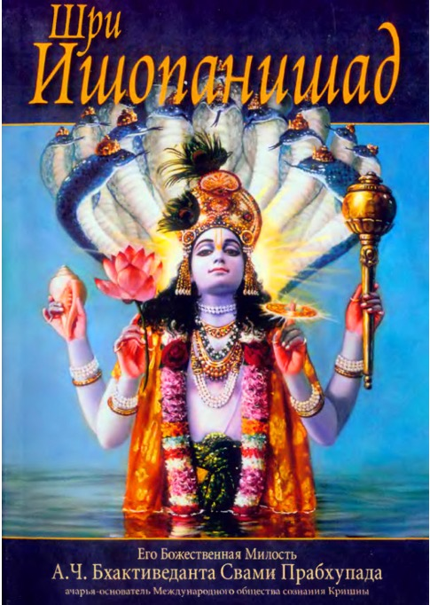

«Учение Вед»
Лекция Его Божественной Милости А.Ч. Бхактиведанты Свами Прабхупады, прочитанная 6 октября 1969 года в Конвей-Холле (Лондон, Англия).
Дамы и господа, темой сегодняшней лекции является учение Вед. Что такое Веды? Санскритский глагольный корень слова веда можно переводить по-разному, но в конечном счете все различные значения этого слова являются производными от слова «знание». Любое знание, которое вы получаете, есть веда, потому что учение Вед — это изначальное знание. Пока мы пребываем в состоянии обусловленности, наше знание имеет много недостатков. Разница между обусловленной и освобожденной душой заключается в том, что обусловленной душе присущи четыре недостатка. Первый ее недостаток состоит в том, что она обречена совершать ошибки. Например, в нашей стране Махатму Ганди почитают великим человеком, но и он допускал много ошибок. Даже в последний день его жизни секретарь предупреждал его: «Махатма Ганди, не ходите на это собрание в Новом Дели. Я слышал от друзей, что там опасно». Но он не послушался. Он настоял на том, чтобы пойти туда, и был убит. Даже такие великие люди, как Махатма Ганди, президент Кеннеди и им подобные, совершают ошибки. Человеку свойственно ошибаться. В этом заключается один из недостатков обусловленной души.
Другой недостаток — склонность впадать в иллюзию. Иллюзия — это вера в реальность того, чего не существует — майи. Майя буквально означает «то, чего нет». Каждый принимает свое тело за себя. Если я спрошу вас, кто вы, вы ответите: «Я мистер Джон, я богатый человек», и т. д., и т. п. Все это разные формы отождествления себя с телом. Но вы не есть тело. Это иллюзия.
Третий недостаток — склонность к обману. Каждый склонен обманывать других. Человек может быть первейшим глупцом, но выдавать себя за умного. Мы уже говорили, что человек на каждом шагу заблуждается и допускает ошибки, но это не мешает ему рассуждать: «Я думаю, что это так, а то — этак». При этом он даже не знает природы своего «я». Он пишет книги по философии, хотя сам далек от совершенства. В этом его болезнь. Это и есть обман.
И наконец, наши чувства несовершенны. Мы очень гордимся своим зрением. Часто люди с вызовом спрашивают нас: «Можете ли вы показать мне Бога?» Но есть ли у вас глаза, чтобы увидеть Бога? Вы не сможете Его увидеть, пока у вас не будет глаз, необходимых для этого. Если сейчас в комнате вдруг станет темно, вы не сможете увидеть даже собственную руку. Так много ли стоит ваша способность видеть? Таким образом, нельзя рассчитывать обрести истинное знание (веду) с помощью наших несовершенных чувств. Обладая этими недостатками, присущими обусловленным живым существам, мы никому не можем дать совершенного знания. Да и сами мы несовершенны. Поэтому мы безоговорочно принимаем авторитет Вед.
Веды иногда называют священными писаниями индуизма, но слово «индуизм» иностранного происхождения. Мы не индусы. Сущность нашей культуры отражает слово варн̣а̄ш́рама. Этим словом называют тех, кто следует Ведам и принимает деление человеческого общества на четыре варны и ашрама, то есть на четыре сословия и четыре ступени духовной жизни. Эту систему называют варнашрамой. В «Бхагавад-гите» [4.13] сказано: «Это деление существует везде, поскольку оно создано Богом». Общество делится на брахманов, кшатриев, вайшьев и шудр. Брахманами называют разумных людей, тех, кто знает, что такое Брахман. Кшатрии — это сословие правителей, то есть второе сословие разумных людей. Затем идут вайшьи — торговое сословие. Эти группы людей можно обнаружить в любом обществе. Таков ведический принцип, и мы принимаем его. Ведические принципы принимают, не требуя доказательств, так как в Ведах не может быть ошибок. В этом заключается смысл слова «принимать». Например, в Индии коровий навоз считается чистым, хотя и представляет собой испражнения животного. В Ведах говорится, что, коснувшись испражнений, необходимо сразу совершить омовение. Но в другом месте сказано, что коровий навоз чист. Если вымазать коровьим навозом нечистое место, то оно станет чистым. Руководствуясь обыденным здравым смыслом, мы можем возразить: «Это противоречие». И действительно, с точки зрения здравого смысла это противоречие, но тем не менее тут нет ошибки. Это факт. В Калькутте один знаменитый ученый-медик исследовал коровий навоз и обнаружил, что он обладает всеми антисептическими свойствами.
В Индии, если один человек говорит другому: «Ты должен сделать то-то и то-то», — тот может спросить: «Чего ради? Почему я должен беспрекословно выполнять твои указания? Что, об этом сказано в Ведах?» Ведические предписания нельзя толковать по-своему. Но в конечном счете, если вы тщательно изучите каждое из этих предписаний, то обнаружите, что они безошибочны.
Веды не являются творением человеческого разума. Ведическое знание пришло из духовного мира, от Господа Кришны. Другое название Вед — шрути. Словом шрути называют знание, которое обретают в процессе слушания. Это не эмпирическое знание. Шрути сравнивают с матерью. От матери мы узнаем об очень многом. Например, если вы хотите узнать, кто ваш отец, кто может ответить вам? Только ваша мать. Когда мать говорит вам: «Вот твой отец», — вам остается только согласиться с этим. Установить личность отца экспериментальным путем невозможно. Аналогично этому, если вы хотите познать нечто, лежащее за пределами сферы вашего опыта, вашего эмпирического знания, за пределами сферы действия ваших чувств, то должны принять Веды. В этом случае не может быть и речи об экспериментировании. Все эксперименты уже давно поставлены. Истина уже установлена. Нам остается только принять ее, как мы принимаем на веру слова матери. Другого пути нет.
Веды называют матерью, а Брахму — дедом, предком, так как он был первым, кто получил ведическое знание. Брахма был первым живым существом во вселенной. Он получил ведическое знание и передал его своему сыну Нараде и другим ученикам и сыновьям, а они передали его своим ученикам. Так ведическое знание передается по цепи ученической преемственности. «Бхагавад-гита» также подтверждает, что ведическое знание передается этим путем. Поставив эксперименты, вы в конечном счете придете к тому же выводу, но, чтобы сберечь время, лучше просто принять учение Вед. Если вы хотите узнать, кто ваш отец, и признаете свою мать авторитетом в этом вопросе, то должны принять на веру все, что она вам скажет. Существует три вида доказательств: пратьякша, анумана и шабда. Пратьякша означает «эмпирическое доказательство». Эмпирические доказательства всегда имеют слабые стороны, поскольку наши чувства несовершенны. Например, мы каждый день видим солнце, и оно кажется нам маленьким диском, тогда как на самом деле оно гораздо больше многих планет. Так чего же стоят наши наблюдения? Чтобы составить правильные представления о солнце, мы должны читать книги. Итак, непосредственный опыт далек от совершенства. Другим видом доказательства является анумана, индуктивное знание, или гипотеза: «Предположим, что это так…». Примером такого доказательства является теория Дарвина, которая целиком основана на предположениях. Но это нельзя назвать наукой. Это всего лишь предположение, и оно также несовершенно. Совершенным может быть только знание, полученное из авторитетного источника. Если радиостанция пришлет вам программу передач, вы не станете оспаривать ее. В этом случае вам ни к чему проводить эксперименты, потому что программа получена из надежного источника.
Ведическое знание называют шабда-праманой, или по-другому шрути. Шрути означает, что знание должно быть получено в процессе слушания. Веды учат, что если мы хотим понять трансцендентную науку, то должны слушать человека, сведущего в этом вопросе. Источник трансцендентного знания находится за пределами материальной вселенной. Знание, доступное в этой вселенной, — это материальное знание, а знание о том, что находится за ее пределами, — трансцендентное знание. Нам не под силу достичь границ даже материальной вселенной, не говоря уже о том, чтобы попасть в духовный мир. Следовательно, обрести полное знание невозможно.
И тем не менее духовный мир существует. За пределами проявленной и непроявленной материи раскинулось духовное небо, в котором парят вечные планеты, населенные вечными существами. Но как вы сможете это проверить? Об этом говорится в ведических писаниях, но как вы поставите эксперименты? Это невозможно. Поэтому мы должны просто принять информацию, изложенную в Ведах. Это называется ведическим знанием. В нашем Движении сознания Кришны мы получаем знание от высшего авторитета, Кришны. Авторитет Кришны признают люди всех категорий. В первую очередь я имею в виду две категории трансценденталистов. Одна категория трансценденталистов — это имперсоналисты, майявади. Обычно их называют ведантистами школы Шанкарачарьи. К трансценденталистам другой категории относятся вайшнавы, такие, как Рамануджачарья, Мадхвачарья, Вишнусвами. Шанкара-сампрадая, так же как и Вайшнава-сампрадая, признает Кришну Верховной Личностью Бога. Шанкарачарья считается имперсоналистом, так как он проповедовал имперсонализм, безличный Брахман, но фактически он был скрытым персоналистом. В своем комментарии к «Бхагавад-гите» он пишет: «Нараяна, Верховная Личность Бога, пребывает за пределами космического проявления». И затем снова подтверждает это: «Верховная Личность Бога, Нараяна, — это Кришна. Он пришел в образе сына Деваки и Васудевы». Он специально упоминает имя Его отца и матери. Таким образом, все трансценденталисты признают Кришну Верховной Личностью Бога. Это неоспоримая истина. В Движении сознания Кришны мы опираемся на знания, почерпнутые из «Бхагавад-гиты», которая была поведана Самим Кришной. Мы опубликовали «Бхагавад-гиту как она есть», потому что принимаем все, что сказал Кришна, не давая Его словам собственных толкований. Это ведическое знание. Ведическое знание чисто, поэтому мы принимаем его. Мы принимаем все, что говорит Кришна. В этом суть сознания Кришны. Таким образом экономится много времени. Приняв истинный авторитет, вы сбережете много времени. В материальном мире существуют два метода познания: индуктивный и дедуктивный. Примером дедуктивного знания является наше представление о том, что человек смертен. Ваш отец говорит, что человек смертен, ваша сестра говорит, что человек смертен, все говорят, что человек смертен, но сами вы не проводите экспериментов. Вы не подвергаете сомнению то, что человек смертен, вы просто принимаете эту истину на веру. Если же вы захотите провести исследование, чтобы установить, смертен ли человек, вам нужно будет изучить всех людей, и при этом нельзя будет исключить вероятность того, что где-то живет бессмертный человек, но он вам еще не встретился. Таким образом, ваше исследование никогда бы не закончилось. Этот процесс на санскрите называется арохой, восходящим процессом. Попытки обрести знания, опираясь только на свои силы и несовершенные чувства, заранее обречены на неудачу. Таким образом невозможно прийти к правильным выводам.
В «Брахма-самхите» говорится: «Отправляйтесь в путешествие на самолете, который движется со скоростью мысли». Материальные самолеты могут двигаться со скоростью три тысячи километров в час, но какова скорость мысли? Вы сидите дома, вдруг вы подумали об Индии, которая находится, скажем, за десять тысяч километров от вас, и сразу очутились там. Ваши мысли мгновенно перенесли вас туда. Так велика скорость мысли. Поэтому в «Брахма-самхите» говорится: «Пропутешествовав по просторам духовного неба миллионы лет со скоростью мысли, вы убедитесь в том, что оно безгранично». К нему невозможно даже приблизиться. Вот почему в Ведах утверждается, что человек должен, а точнее обязан, найти истинного духовного учителя, гуру. Каковы же качества духовного учителя? Он усвоил сущность Вед из авторитетного источника и утвердился в Брахмане. Таковы два качества, которыми он должен обладать, иначе его нельзя назвать истинным учителем.
Движение сознания Кришны целиком основано на ведических принципах. В «Бхагавад-гите» Кришна говорит, что истинная цель изучения Вед — познать Его. В «Брахма-самхите» также говорится: «Кришна, Говинда, имеет бесчисленное количество форм, но все они суть одно». Они не похожи на наши несовершенные формы. Его форма совершенна. Моя форма имеет начало, но Его форма не имеет начала. Она ананта. И Его форма — многочисленные и многообразные формы — не имеет конца. Мое тело находится здесь, а не в моей квартире. Вы сидите в зале, а не в своей квартире. Однако Кришна может одновременно находиться везде. Он может находиться на Голоке Вриндаване, но в то же самое время Он вездесущ. Он — изначальная личность, старейшее живое существо, но на какое бы изображение Кришны вы ни посмотрели, вы увидите юношу пятнадцати-двадцати лет. Вы нигде не найдете старика. Вы видели в «Бхагавад-гите» изображение Кришны в роли колесничего. В то время Ему было не меньше ста лет, у Него уже были правнуки, и тем не менее Он выглядел как юноша. Кришна, Бог, никогда не стареет. Таково Его верховное могущество. И если вы захотите постичь Кришну, изучая ведическую литературу, то зайдете в тупик. Теоретически это возможно, но сопряжено с очень большими трудностями. Однако вы сможете легко узнать о Нем от Его преданного. Преданный Кришны может дать Его вам со словами: «Вот Он, возьмите Его». Таково могущество преданных Кришны.
Первоначально была только одна Веда, и читать ее не было необходимости. Люди были такими умными и имели такую хорошую память, что могли понять ее, лишь однажды услышав из уст духовного учителя. Им достаточно было один раз услышать что-то, чтобы сразу постичь смысл сказанного. Но пять тысяч лет назад Вьясадева, заботясь о людях этого века, Кали-юги, записал Веды. Он знал, что со временем жизнь людей сократится, их память ослабеет, а разум притупится. «Поэтому я должен учить ведической мудрости, записав ее», — подумал он. Он разделил Веду на четыре части: «Риг», «Саму», «Атхарву» и «Яджур» — и поручил эти части своим ученикам. Потом он подумал о людях, не обладающих большим разумом: стри, шудрах и двиджа-бандху. Он решил позаботиться о женщинах, шудрах (рабочих) и двиджа-бандху (тех, кто, несмотря на высокое происхождение, лишен соответствующих качеств). Человека, родившегося в семье брахмана, но не имеющего качеств брахмана, называют двиджа-бандху. Для них он создал «Махабхарату», назвав так историю Индии, и восемнадцать Пуран. Все это: Пураны, «Махабхарата», четыре Веды и Упанишады — составляет ведическую литературу. Упанишады являются частью Вед. Затем Вьясадева обобщил ведическое знание для ученых и философов в «Веданта-сутре», которая венчает Веды.
Вьясадева сам написал
«Веданта-сутру», следуя наставлениям Нарады, своего Гуру Махараджи (духовного
учителя), но тем не менее он не чувствовал удовлетворения. Это длинная история.
Она описана в «Шримад-Бхагаватам». Вьясадева оставался неудовлетворенным даже
после того, как создал Пураны, Упанишады и написал «Веданта-сутру». Тогда его
духовный учитель Нарада дал ему указание: «Разъясни „Веданта-сутру“». Веданта означает «высшее знание», а это
Сам Кришна. Кришна говорит, что цель всех Вед — познать Его: веданта-кр̣д веда-вид
эва ча̄хам. Кришна говорит: «Я — составитель „Веданты“ и знаток Вед». Следовательно,
конечная цель Вед — Кришна. Это объяснено во всех комментариях вайшнавов к
философии «Веданты». У нас, гаудия-вайшнавов, есть собственный комментарий к
философии «Веданты» — «Говинда-бхашья» Баладевы Видьябхушаны. И Мадхвачарья, и
Рамануджачарья написали комментарии к «Веданте». Комментарий Шанкарачарьи
далеко не единственный. Комментариев к «Веданте» много, но комментарий вайшнавов
не был первым, поэтому люди ошибочно полагают, что комментарий Шанкарачарьи —
единственный. Кроме того, Вьясадева сам написал совершенный комментарий к
«Веданте» — «Шримад-Бхагаватам». «Шримад-Бхагаватам» начинается с тех же слов, что
и «Веданта-сутра»: джанма̄дй асйа йатах̣. Эти слова подробно объяснены в
«Шримад-Бхагаватам». В «Веданта-сутре»
содержится только намек на то, что такое Брахман, Абсолютная Истина: «Абсолютная
Истина — это То, из чего все исходит». Это афоризм, а его детальное объяснение
приводится в «Шримад-Бхагаватам». Если все исходит из Абсолютной Истины, то
какова природа Абсолютной Истины? Это
разъясняется в «Шримад-Бхагаватам». Абсолютная Истина должна обладать сознанием.
Она самосветящаяся (сва-рат). Мы развиваем свое сознание и углубляем познания, получая
знание от других, но о Ней сказано, что Она самосветящаяся. «Веданта-сутра» в
сжатой форме обобщает ведическое знание, и сам автор разъясняет ее в «Шримад-Бхагаватам».
В заключение мы просим всех, кто действительно стремится
постичь ведическое знание, постараться понять его смысл, изучая «Шримад-Бхагаватам»
и «Бхагавад-гиту».
“Teachings of the Vedas”
Delivered as a lecture by His Divine Grace A. C. Bhaktivedanta Swami Prabhupāda on October 6, 1969, at Conway Hall, London, England.
Ladies and gentlemen, today’s subject matter is the teachings of the Vedas. What are the Vedas? The Sanskrit verbal root of veda can be interpreted variously, but the purport is finally one. Veda means knowledge. Any knowledge you accept is veda, for the teachings of the Vedas are the original knowledge. In the conditioned state, our knowledge is subjected to many deficiencies. The difference between a conditioned soul and a liberated soul is that the conditioned soul has four kinds of defects. The first defect is that he must commit mistakes. For example, in our country, Mahatma Gandhi was considered to be a very great personality, but he committed many mistakes. Even at the last stage of his life, his assistant warned, “Mahatma Gandhi, don’t go to the New Delhi meeting. I have some friends, and I have heard there is danger.” But he did not hear. He persisted in going and was killed. Even great personalities like Mahatma Gandhi, President Kennedy – there are so many of them – make mistakes. To err is human. This is one defect of the conditioned soul.
Another defect: to be illusioned. Illusion means to accept something which is not: māyā. Māyā means “what is not.” Everyone is accepting the body as the self. If I ask you what you are, you will say, “I am Mr. John; I am a rich man; I am this; I am that.” All these are bodily identifications. But you are not this body. This is illusion.
The third defect is the cheating propensity. Everyone has the propensity to cheat others. Although a person is fool number one, he poses himself as very intelligent. Although it is already pointed out that he is in illusion and makes mistakes, he will theorize: “I think this is this, this is this.” But he does not even know his own position. He writes books of philosophy, although he is defective. That is his disease. That is cheating.
Lastly, our senses are imperfect. We are very proud of our eyes. Often, someone will challenge, “Can you show me God?” But do you have the eyes to see God? You will never see if you haven’t the eyes. If immediately the room becomes dark, you cannot even see your hands. So what power do you have to see? We cannot, therefore, expect knowledge (veda) with these imperfect senses. With all these deficiencies, in conditioned life we cannot give perfect knowledge to anyone. Nor are we ourselves perfect. Therefore we accept the Vedas as they are.
You may call the Vedas Hindu, but “Hindu” is a foreign name. We are not Hindus. Our real identification is varṇāśrama. Varṇāśrama denotes the followers of the Vedas, those who accept the human society in eight divisions of varṇa and āśrama. There are four divisions of society and four divisions of spiritual life. This is called varṇāśrama. It is stated in the Bhagavad-gītā, “These divisions are everywhere because they are created by God.” The divisions of society are brāhmaṇa, kṣatriya, vaiśya, śūdra. Brāhmaṇa refers to the very intelligent class of men, those who know what is Brahman. Similarly, the kṣatriyas, the administrator group, are the next intelligent class of men. Then the vaiśyas, the mercantile group. These natural classifications are found everywhere. This is the Vedic principle, and we accept it. Vedic principles are accepted as axiomatic truth, for there cannot be any mistake. That is acceptance. For instance, in India cow dung is accepted as pure, and yet cow dung is the stool of an animal. In one place you’ll find the Vedic injunction that if you touch stool, you have to take a bath immediately. But in another place it is said that the stool of a cow is pure. If you smear cow dung in an impure place, that place becomes pure. With our ordinary sense we can argue, “This is contradictory.” Actually, it is contradictory from the ordinary point of view, but it is not false. It is fact. In Calcutta, a very prominent scientist and doctor analyzed cow dung and found that it contains all antiseptic properties.
In India if one person tells another, “You must do this,” the other party may say, “What do you mean? Is this a Vedic injunction, that I have to follow you without any argument?” Vedic injunctions cannot be interpreted. But ultimately, if you carefully study why these injunctions are there, you will find that they are all correct.
The Vedas are not compilations of human knowledge. Vedic knowledge comes from the spiritual world, from Lord Kṛṣṇa. Another name for the Vedas is śruti. Śruti refers to that knowledge which is acquired by hearing. It is not experimental knowledge. Śruti is considered to be like a mother. We take so much knowledge from our mother. For example, if you want to know who your father is, who can answer you? Your mother. If the mother says, “Here is your father,” you have to accept it. It is not possible to experiment to find out whether he is your father. Similarly, if you want to know something beyond your experience, beyond your experimental knowledge, beyond the activities of the senses, then you have to accept the Vedas. There is no question of experimenting. It has already been experimented. It is already settled. The version of the mother, for instance, has to be accepted as truth. There is no other way.
The Vedas are considered to be the mother, and Brahmā is called the grandfather, the forefather, because he was the first to be instructed in the Vedic knowledge. In the beginning the first living creature was Brahmā. He received this Vedic knowledge and imparted it to Nārada and other disciples and sons, and they also distributed it to their disciples. In this way, the Vedic knowledge comes down by disciplic succession. It is also confirmed in the Bhagavad-gītā that Vedic knowledge is understood in this way. If you make experimental endeavor, you come to the same conclusion, but just to save time you should accept. If you want to know who your father is and if you accept your mother as the authority, then whatever she says can be accepted without argument. There are three kinds of evidence: pratyakṣa, anumāna and śabda. Pratyakṣa means “direct evidence.” Direct evidence is not very good because our senses are not perfect. We are seeing the sun daily, and it appears to us just like a small disc, but it is actually far, far larger than many planets. Of what value is this seeing? Therefore we have to read books; then we can understand about the sun. So direct experience is not perfect. Then there is anumāna, inductive knowledge: “It may be like this” – hypothesis. For instance, Darwin’s theory says it may be like this, it may be like that. But that is not science. That is a suggestion, and it is also not perfect. But if you receive the knowledge from the authoritative sources, that is perfect. If you receive a program guide from the radio station authorities, you accept it. You don’t deny it; you don’t have to make an experiment, because it is received from the authoritative sources.
Vedic knowledge is called śabda-pramāṇa. Another name is śruti. Śruti means that this knowledge has to be received simply by aural reception. The Vedas instruct that in order to understand transcendental knowledge, we have to hear from the authority. Transcendental knowledge is knowledge from beyond this universe. Within this universe is material knowledge, and beyond this universe is transcendental knowledge. We cannot even go to the end of the universe, so how can we go to the spiritual world? Thus to acquire full knowledge is impossible.
There is a spiritual sky. There is another nature, which is beyond manifestation and nonmanifestation. But how will you know that there is a sky where the planets and inhabitants are eternal? All this knowledge is there, but how will you make experiments? It is not possible. Therefore you have to take the assistance of the Vedas. This is called Vedic knowledge. In our Kṛṣṇa consciousness movement we are accepting knowledge from the highest authority, Kṛṣṇa. Kṛṣṇa is accepted as the highest authority by all classes of men. I am speaking first of the two classes of transcendentalists. One class of transcendentalists is called impersonalistic, Māyāvādī. They are generally known as Vedāntists, led by Śaṅkarācārya. And there is another class of transcendentalists, called Vaiṣṇavas, like Rāmānujācārya, Madhvācārya, Viṣṇu Svāmī. Both the Śaṅkara-sampradāya and the Vaiṣṇava-sampradāya have accepted Kṛṣṇa as the Supreme Personality of Godhead. Śaṅkarācārya is supposed to be an impersonalist who preached impersonalism, impersonal Brahman, but it is a fact that he is a covered personalist. In his commentary on the Bhagavad-gītā he wrote, “Nārāyaṇa, the Supreme Personality of Godhead, is beyond this cosmic manifestation.” And then again he confirmed, “That Supreme Personality of Godhead, Nārāyaṇa, is Kṛṣṇa. He has come as the son of Devakī and Vasudeva.” He particularly mentioned the names of His father and mother. So Kṛṣṇa is accepted as the Supreme Personality of Godhead by all transcendentalists. There is no doubt about it. Our source of knowledge in Kṛṣṇa consciousness is the Bhagavad-gītā, which comes directly from Kṛṣṇa. We have published Bhagavad-gītā As It Is because we accept Kṛṣṇa as He is speaking, without any interpretation. That is Vedic knowledge. Since the Vedic knowledge is pure, we accept it. Whatever Kṛṣṇa says, we accept. This is Kṛṣṇa consciousness. That saves much time. If you accept the right authority, or source of knowledge, then you save much time. For example, there are two systems of knowledge in the material world: inductive and deductive. From deductive, you accept that man is mortal. Your father says man is mortal, your sister says man is mortal, everyone says man is mortal – but you do not experiment. You accept it as a fact that man is mortal. If you want to research to find out whether man is mortal, you have to study each and every man, and you may come to think that there may be some man who is not dying but you have not seen him yet. So in this way your research will never be finished. In Sanskrit this process is called āroha, the ascending process. If you want to attain knowledge by any personal endeavor, by exercising your imperfect senses, you will never come to the right conclusions. That is not possible.
There is a statement in the Brahma-saṁhitā: Just ride on the airplane which runs at the speed of mind. Our material airplanes can run two thousand miles per hour, but what is the speed of mind? You are sitting at home, you immediately think of India – say, ten thousand miles away – and at once it is in your home. Your mind has gone there. The mind-speed is so swift. Therefore it is stated, “If you travel at this speed for millions of years, you’ll find that the spiritual sky is unlimited.” It is not possible even to approach it. Therefore, the Vedic injunction is that one must approach – the word “compulsory” is used – a bona fide spiritual master, a guru. And what is the qualification of a spiritual master? He is one who has rightly heard the Vedic message from the right source. And he must practically be firmly established in Brahman. These are the two qualities he must have. Otherwise he is not bona fide.
This Kṛṣṇa consciousness movement is completely authorized from Vedic principles. In the Bhagavad-gītā Kṛṣṇa says, “The actual aim of Vedic research is to find out Kṛṣṇa.” In the Brahma-saṁhitā it is also stated, “Kṛṣṇa, Govinda, has innumerable forms, but they are all one.” They are not like our forms, which are fallible. His form is infallible. My form has a beginning, but His form has no beginning. It is ananta. And His form – so many multiforms – has no end. My form is sitting here and not in my apartment. You are sitting there and not in your apartment. But Kṛṣṇa can be everywhere at one time. He can sit down in Goloka Vṛndāvana, and at the same time He is everywhere, all-pervading. He is original, the oldest, but whenever you look at a picture of Kṛṣṇa you’ll find a young boy fifteen or twenty years old. You will never find an old man. You have seen pictures of Kṛṣṇa as a charioteer from the Bhagavad-gītā. At that time He was not less than one hundred years old. He had great-grandchildren, but He looked just like a boy. Kṛṣṇa, God, never becomes old. That is His supreme power. And if you want to search out Kṛṣṇa by studying the Vedic literature, then you will be baffled. It may be possible, but it is very difficult. But you can very easily learn about Him from His devotee. His devotee can deliver Him to you: “Here He is, take Him.” That is the potency of Kṛṣṇa’s devotees.
Originally there was only one Veda, and there was no necessity of reading it. People were so intelligent and had such sharp memories that by once hearing from the lips of the spiritual master they would understand. They would immediately grasp the whole purport. But five thousand years ago Vyāsadeva put the Vedas in writing for the people in this age, Kali-yuga. He knew that eventually the people would be short-lived, their memories would be very poor, and their intelligence would not be very sharp. “Therefore, let me teach this Vedic knowledge in writing.” He divided the Vedas into four: Ṛg, Sāma, Atharva and Yajur. Then he gave the charge of these Vedas to his different disciples. He then thought of the less intelligent class of men – strī, śūdra and dvija-bandhu. He considered the woman class and śūdra class (worker class) and dvija-bandhu. Dvija-bandhu refers to those who are born in a high family but who are not properly qualified. A man who is born in the family of a brāhmaṇa but is not qualified as a brāhmaṇa is called dvija-bandhu. For these persons he compiled the Mahābhārata, called the history of India, and the eighteen Purāṇas. These are all part of the Vedic literature: the Purāṇas, the Mahābhārata, the four Vedas and the Upaniṣads. The Upaniṣads are part of the Vedas. Then Vyāsadeva summarized all Vedic knowledge for scholars and philosophers in what is called the Vedānta-sūtra. This is the last word of the Vedas.
Vyāsadeva personally wrote the Vedānta-sūtra under the instructions of Nārada, his Guru Mahārāja (spiritual master), but still he was not satisfied. That is a
long story, described in Śrīmad-Bhāgavatam.
Vedavyāsa was not very satisfied even after compiling many Purāṇas and Upaniṣads,
and even after writing the Vedānta-sūtra. Then his spiritual master, Nārada, instructed him, “You explain the Vedānta-sūtra.” Vedānta means “ultimate knowledge,”
and the ultimate knowledge is Kṛṣṇa. Kṛṣṇa says that throughout all the
Vedas one has to understand Him: vedaiś ca sarvair aham eva
vedyaḥ. Kṛṣṇa also says, vedānta-kṛd
veda-vid eva cāham: “I am the compiler of the Vedānta-sūtra, and I am the knower of the Vedas.”
Therefore the ultimate objective is Kṛṣṇa. That is explained in all the Vaiṣṇava commentaries on Vedānta
philosophy. We Gauḍīya Vaiṣṇavas have our
commentary on Vedānta philosophy, called Govinda-bhāṣya, by Baladeva Vidyābhūṣaṇa. Similarly, Rāmānujācārya
has a commentary, and Madhvācārya
has one. The version of Śaṅkarācārya is not the only
commentary. There are many Vedānta
commentaries, but because the Vaiṣṇavas did not present the first Vedānta commentary, people are under the wrong impression that Śaṅkarācārya’s is the only Vedānta commentary. Besides that, Vyāsadeva himself wrote the perfect Vedānta commentary, Śrīmad-Bhāgavatam.
Śrīmad-Bhāgavatam begins with the first
words of the Vedānta-sūtra: janmādy asya yataḥ.
And that janmādy asya yataḥ is fully explained in Śrīmad-Bhāgavatam. The Vedānta-sūtra simply hints at what is
Brahman, the Absolute Truth: “The Absolute Truth is that from whom everything emanates.”
This is a summary, but it is explained in detail in Śrīmad-Bhāgavatam. If everything is
emanating from the Absolute Truth, then what is the nature of the Absolute
Truth? That is explained in Śrīmad-Bhāgavatam. The Absolute Truth must be consciousness. He is
self-effulgent (sva-rāṭ). We develop our consciousness
and knowledge by receiving knowledge from others, but for Him it is said that
He is self-effulgent. The whole summary of Vedic knowledge is the Vedānta-sūtra, and the Vedānta-sūtra is explained by the writer
himself in Śrīmad-Bhāgavatam. We finally request those who are actually after Vedic
knowledge to try to understand the explanation of all Vedic knowledge from Śrīmad-Bhāgavatam and the Bhagavad-gītā.
ом̇ пӯрн̣ам адах̣ пӯрн̣ам идам̇
пӯрн̣а̄т пӯрн̣ам удачйате
пӯрн̣асйа пӯрн̣ам а̄да̄йа
пӯрн̣ам эва̄ваш́ишйате
ом̇ — Полное Целое;
пӯрн̣ам — обладающее совершенной полнотой;
адах̣ — которое;
пӯрн̣ам — полное;
идам — этот проявленный мир;
пӯрн̣а̄т — из совершенного;
пӯрн̣ам — законченная часть;
удачйате — произведен;
пӯрн̣асйа — из Полного Целого;
пӯрн̣ам — полностью;
а̄да̄йа — было выделено;
пӯрн̣ам — совершенное равновесие;
эва — хотя;
аваш́ишйате — остается.
Верховный Господь, Личность Бога, всесовершенен, и, так как Он абсолютен и совершенен, все, что исходит из Него, в частности этот проявленный мир, наделено всем необходимым, поскольку само является полным целым. Все, что исходит из Полного Целого, также обладает полнотой. И, как Полное Целое, Он пребывает в совершенном равновесии, несмотря на то что из Него исходит такое множество законченных частей.
The Personality of Godhead is perfect and complete, and because He is completely perfect, all emanations from Him, such as this phenomenal world, are perfectly equipped as complete wholes. Whatever is produced of the Complete Whole is also complete in itself. Because He is the Complete Whole, even though so many complete units emanate from Him, He remains the complete balance.
Полное Целое, Верховная Абсолютная Истина, — это совершенная Личность Бога. Осознание безличного Брахмана представляет собой понимание одного из аспектов Абсолютного Целого, это же справедливо и по отношению к Параматме, Сверхдуше. Верховная Личность Бога есть сач-чид-ананда-виграха. Осознание безличного Брахмана — это осознание Его аспекта сат, то есть аспекта вечности, осознание Параматмы, Сверхдуши, — сат и чит, вечности и знания, но осознание Личности Бога — это осознание всех Его аспектов — сат, чит и ананды (блаженства). Когда человек осознает Личность Бога, он постигает все эти аспекты во всей их полноте. Как мы уже говорили, Верховная Личность Бога — это сач-чид-ананда-виграха. Виграха означает «форма». Итак, Полное Целое не лишено формы. Если бы Оно не имело формы или в чем-либо еще уступало Своему творению, Его нельзя было бы назвать полным. Полное Целое должно содержать в себе все, что находится как в пределах, так и за пределами нашего опыта, иначе Оно не было бы полным.
Полное Целое, Личность Бога, обладает безграничными энергиями, и все они так же совершенны, как Сам Господь. Вот почему этот проявленный мир тоже является самодостаточным и совершенным. Двадцать четыре элемента, из которых состоит временно проявленная материальная вселенная, способны производить все необходимое для поддержания существования этой вселенной. Чтобы поддерживать ее существование, нет необходимости прилагать никаких усилий извне. На существование этой вселенной отведено определенное время, ограниченное энергией Полного Целого. И когда оно истекает, это временное проявление уничтожается в соответствии с совершенным планом Полного Целого.
Крошечным полноценным частицам (живым существам) предоставлены все возможности для познания Полного Целого; всякого рода несовершенства — результат лишь неполноты их знаний о Полном Целом. Человеческая форма жизни дает возможность живому существу полностью проявить свое сознание. Живое существо обретает ее в процессе эволюции, последовательно воплощаясь в каждом из 8 400 000 видов жизни. Если, получив эту форму, наделенную совершенным сознанием, человек не осознает своей совершенной полноты в составе Полного Целого, то он упускает шанс реализовать свое совершенство и, подчиняясь законам материальной природы, снова попадает в эволюционный цикл.
Не понимая того, что в природе уже есть все необходимое для поддержания нашего существования, мы пытаемся использовать природные ресурсы, чтобы создать условия для так называемой полнокровной жизни, посвященной чувственным наслаждениям. Но такая, уводящая с истинного пути, жизнь является иллюзией, так как, пока живое существо не связано с Полным Целым, оно не может наслаждаться жизнью чувств. Например, рука является полноценной частью целого только до тех пор, пока соединена с телом. Если отрубить руку, то она будет выглядеть как рука, но лишится всех свойств руки. Аналогично этому, живые существа являются неотъемлемыми частицами Полного Целого, и, пока они отделены от Полного Целого, их иллюзорные представления о своем совершенстве не принесут им желанного удовлетворения.
Человек сможет осознать свою полноценность только тогда, когда будет служить Полному Целому. Всякое другое служение в этом мире — социальное, политическое, общественное, международное или даже межпланетное — будет оставаться неполноценным до тех пор, пока человек не свяжет его со служением Полному Целому. Но, когда все, что делают живые существа, частицы Полного Целого, так или иначе связано с Ним, они тоже становятся полноценными.
The Complete Whole, or the Supreme Absolute Truth, is the complete Personality of Godhead. Realization of impersonal Brahman or of Paramātmā, the Supersoul, is incomplete realization of the Absolute Complete. The Supreme Personality of Godhead is sac-cid-ānanda-vigraha. Realization of impersonal Brahman is realization of His sat feature, or His aspect of eternity, and Paramātmā realization is realization of His sat and cit features, His aspects of eternity and knowledge. But realization of the Personality of Godhead is realization of all the transcendental features – sat, cit and ānanda, bliss. When one realizes the Supreme Person, he realizes these aspects of the Absolute Truth in their completeness. Vigraha means “form.” Thus the Complete Whole is not formless. If He were formless, or if He were less than His creation in any other way, He could not be complete. The Complete Whole must contain everything both within and beyond our experience; otherwise He cannot be complete.
The Complete Whole, the Personality of Godhead, has immense potencies, all of which are as complete as He is. Thus this phenomenal world is also complete in itself. The twenty-four elements of which this material universe is a temporary manifestation are arranged to produce everything necessary for the maintenance and subsistence of this universe. No other unit in the universe need make an extraneous effort to try to maintain the universe. The universe functions on its own time scale, which is fixed by the energy of the Complete Whole, and when that schedule is completed, this temporary manifestation will be annihilated by the complete arrangement of the Complete Whole.
All facilities are given to the small complete units (namely the living beings) to enable them to realize the Complete Whole. All forms of incompleteness are experienced due to incomplete knowledge of the Complete Whole. The human form of life is a complete manifestation of the consciousness of the living being, and it is obtained after evolving through 8,400,000 species of life in the cycle of birth and death. If in this human life of full consciousness the living entity does not realize his completeness in relation to the Complete Whole, he loses the chance to realize his completeness and is again put into the evolutionary cycle by the law of material nature.
Because we do not know that there is a complete arrangement in nature for our maintenance, we make efforts to utilize the resources of nature to create a so-called complete life of sense enjoyment. Because the living entity cannot enjoy the life of the senses without being dovetailed with the Complete Whole, the misleading life of sense enjoyment is illusion. The hand of a body is a complete unit only as long as it is attached to the complete body. When the hand is severed from the body, it may appear like a hand, but it actually has none of the potencies of a hand. Similarly, living beings are part and parcel of the Complete Whole, and if they are severed from the Complete Whole, the illusory representation of completeness cannot fully satisfy them.
The completeness of human life can be realized only when one engages in the service of the Complete Whole. All services in this world – whether social, political, communal, international or even interplanetary – will remain incomplete until they are dovetailed with the Complete Whole. When everything is dovetailed with the Complete Whole, the attached parts and parcels also become complete in themselves.
ӣш́а̄ва̄сйам идам̐ сарвам̇
йат кин̃ча джагатйа̄м̇ джагат
тена тйактена бхун̃джӣтха̄
ма̄ гр̣дхах̣ касйа свид дханам
ӣш́а — Господом;
а̄ва̄сйам — управляемое;
идам — это;
сарвам — все;
йат кин̃ча — что бы то ни было;
джагатйа̄м — во вселенной;
джагат — все живое и неживое;
тена — Им;
тйактена — выделенную долю;
бхун̃джӣтха̄х̣ — ты должен принять;
ма̄ — не;
гр̣дхах̣ — старайся получить;
касйа свит — принадлежащее другому;
дханам — богатство.
Все живое и неживое во вселенной находится во власти Господа и принадлежит Ему. Поэтому каждый должен пользоваться только тем, что ему необходимо и выделено ему как его доля, и не посягать ни на что другое, хорошо понимая, кому все принадлежит.
Everything animate or inanimate that is within the universe is controlled and owned by the Lord. One should therefore accept only those things necessary for himself, which are set aside as his quota, and one should not accept other things, knowing well to whom they belong.
Ведическое знание непогрешимо, потому что нисходит по цепи совершенной ученической преемственности духовных учителей, которая начинается с Самого Господа. И поскольку первое слово ведического знания произнес Сам Господь, источник этого знания трансцендентен. Слова, сказанные Господом, называют апаурушеей. Это значит, что они исходят от личности, не принадлежащей к материальному миру. Существо, живущее в материальном мире, имеет четыре недостатка: оно склонно совершать ошибки, заблуждаться, обманывать других и наделено несовершенными чувствами. Ограниченный этими четырьмя несовершенствами, человек не способен дать другим совершенное знание. Веды не созданы несовершенными живыми существами. На заре творения ведическое знание было изначально вложено Господом в сердце Брахмы — первого сотворенного живого существа, а Брахма в свою очередь передал это знание своим сыновьям и ученикам, которые продолжают распространять его и поныне.
Господь есть пӯрн̣ам, всесовершенный, поэтому Он не подчиняется законам материальной природы, напротив, природа сама подчиняется Его воле. Но живые существа и неодушевленные объекты подвластны законам материальной природы и, следовательно, в конечном счете энергии Господа. «Ишопанишад» составляет часть «Яджур-веды», поэтому она содержит информацию о том, кому принадлежит все существующее во вселенной.
Все во вселенной принадлежит Господу. Это подтверждается в седьмой главе «Бхагавад-гиты» (7.4-5), где обсуждаются пара и апара пракрити. Элементы природы: земля, вода, огонь, воздух, эфир, ум, интеллект и эго — относятся к низшей, материальной энергии Господа (апара пракрити), тогда как живое существо, органическая энергия, относится к пара пракрити, высшей энергии Господа. Обе энергии, пракрити, исходят от Господа, таким образом, в конечном счете Он является владыкой всего сущего. Все во вселенной относится либо к пара, либо к апара пракрити, поэтому все в мире принадлежит Верховному Существу.
Верховное Существо, Абсолютная Личность Бога, является совершенной личностью и обладает законченным и совершенным разумом, позволяющим Ему с помощью Своих различных энергий управлять всем. Верховное Существо часто сравнивают с огнем, а органическую и неорганическую материю — с теплом и светом огня. Подобно тому как огонь распространяет свою энергию в виде тепла и света, Господь также проявляет Свою энергию в разных формах. Но при этом Он всегда остается высшим владыкой, поддерживающим все и управляющим всем. Он всеведущ, обладает всеми энергиями, заботится о благе каждого и исполнен непостижимого могущества, богатства, славы, красоты, знания и отрешенности.
Разумный человек должен всегда помнить, что кроме Господа никто ничем не владеет, и потому каждый должен брать только то, что Господь выделил ему как его долю. Корова, например, дает молоко, но сама не пьет его; она питается травой и соломой, а ее молоко предназначено в пищу человеку. Таков порядок, установленный Господом, и мы должны довольствоваться тем, что Он милостиво выделил нам, и всегда помнить, кому на самом деле принадлежит все, чем мы владеем.
Например, наш дом построен из земли, дерева, камня, железа, цемента и многих других материалов. Если рассуждать в категориях «Шри Ишопанишад», то необходимо признать, что мы сами не способны создать ни один из этих материалов. Мы можем только собрать их вместе и, приложив труд, придать им какую-то форму. Рабочий не имеет права требовать, чтобы его считали владельцем вещи только на том основании, что он усердно трудился над ее изготовлением.
В современном обществе не утихают распри между рабочими и капиталистами. Эти распри приняли международные масштабы, так что весь мир находится в опасности. Люди враждуют между собой и огрызаются друг на друга, как кошки и собаки. «Шри Ишопанишад» не может ничего посоветовать кошкам и собакам, но человеку через подлинных ачарьев (святых учителей) она может передать послание Бога. Поэтому человечество должно принять ведическую мудрость «Шри Ишопанишад» и прекратить споры из-за материального имущества. Каждый должен довольствоваться тем, что получает по милости Господа. Пока коммунисты, капиталисты или любая другая партия будут претендовать на право владеть ресурсами материальной природы, которые принадлежат Господу, в мире не будет мира. Капиталисты не смогут обуздать коммунистов только с помощью политического маневрирования, и коммунисты тоже не смогут одержать победу над капиталистами, сражаясь за украденный хлеб. Пока они не признают, что все принадлежит Верховной Личности Бога, любая собственность, которую они считают своей, является украденной, и потому по законам природы они понесут наказание. Как коммунисты, так и капиталисты располагают атомным оружием, и если они вовремя не признают, что все принадлежит Верховному Господу, то можно с уверенностью сказать, что в итоге атомные бомбы сметут с лица земли обе партии. Поэтому, чтобы спасти себя и установить мир на земле, обе партии должны следовать наставлениям «Шри Ишопанишад».
Люди созданы не для того, чтобы враждовать между собой, как кошки и собаки. Они должны быть достаточно разумными, чтобы осознать значение и смысл человеческой жизни. Ведическая литература предназначена для людей, а не для кошек и собак. Когда кошки и собаки убивают других животных и питаются ими, они не совершают греха, но если человек убивает животное ради удовлетворения своих вкусовых бугорков, то на него ложится ответственность за нарушение законов природы, и он неминуемо должен будет понести наказание.
Нормы человеческой жизни не приложимы к животным: тигр не ест рис, пшеницу и не пьет коровье молоко, потому что ему отведено в пищу мясо животных. Некоторые виды животных и птиц питаются растительной пищей, другие — плотью живых существ, но ни одно из животных не нарушает законов природы, установленных Богом. Животные, птицы, пресмыкающиеся и представители других низших форм жизни строго придерживаются законов природы, поэтому они не могут совершить грех, и ведические предписания существуют не для них. Только человеческая жизнь предполагает ответственность за содеянное.
Однако было бы ошибкой считать, что, просто став вегетарианцами, мы перестанем нарушать законы природы. Растения тоже живые, и, хотя по законам природы одно живое существо может употреблять в пищу другие живые существа, смыслом человеческой жизни должно быть осознание Верховного Господа. Поэтому человеку не стоит слишком гордиться тем, что он является строгим вегетарианцем. Животные не обладают развитым сознанием, что мешает им осознать Господа, но человек наделен разумом, который позволяет ему получить знание, изложенное в ведической литературе, и извлечь пользу из этого знания, поняв, как действуют законы природы. Если же человек пренебрегает наставлениями ведической литературы, он подвергает свою жизнь большому риску. Поэтому мы должны признать власть Верховного Господа и стать Его преданными. Человек должен посвятить всего себя служению Господу и питаться только остатками пищи, предложенной Господу. Это поможет ему правильно исполнять свой долг. В «Бхагавад-гите» (9.26) Сам Господь говорит, что, когда чистый преданный предлагает Ему вегетарианскую пищу, Он принимает ее. Поэтому нужно стать не просто строгим вегетарианцем, но и преданным Господа и предлагать Господу всю свою пищу. Только после этого человек может вкушать прасад, то есть милость Бога, и только такой преданный сможет подобающим образом исполнять обязанности, предписываемые человеку. Те же, кто не предлагает пищу Господу, питаются только грехом и обрекают себя на различные страдания, являющиеся расплатой за совершенные ими грехи (Б.-г., 3.13).
Корень греха скрыт в сознательном нарушении законов природы, которое вызвано нежеланием признать, что все является собственностью Господа. Неповиновение законам природы, то есть нарушение порядка, установленного Господом, гибельно для человека. С другой стороны, если человек мыслит здраво, знает законы природы и не поддается влиянию ненужных привязанностей или ненависти, он привлечет к себе внимание Господа и получит право вернуться к Богу, в свой вечный дом.
Vedic knowledge is infallible because it comes down through the perfect disciplic succession of spiritual masters, beginning with the Lord Himself. Since He spoke the first word of Vedic knowledge, the source of this knowledge is transcendental. The words spoken by the Lord are called apauruṣeya, which indicates that they are not delivered by any mundane person. A living being who lives in the mundane world has four defects: (1) he is certain to commit mistakes; (2) he is subject to illusion; (3) he has a propensity to cheat others; and (4) his senses are imperfect. No one with these four imperfections can deliver perfect knowledge. The Vedas are not produced by such an imperfect creature. Vedic knowledge was originally imparted by the Lord into the heart of Brahmā, the first created living being, and Brahmā in his turn disseminated this knowledge to his sons and disciples, who have handed it down through history.
Since the Lord is pūrṇam, all-perfect, there is no possibility of His being subjected to the laws of material nature, which He controls. However, both the living entities and inanimate objects are controlled by the laws of nature and ultimately by the Lord’s potency. This Īśopaniṣad is part of the Yajur Veda, and consequently it contains information concerning the proprietorship of all things existing within the universe.
The Lord’s proprietorship over everything within the universe is confirmed in the Seventh Chapter of the Bhagavad-gītā (7.4-5), where parā and aparā prakṛti are discussed. The elements of nature – earth, water, fire, air, ether, mind, intelligence and ego – all belong to the Lord’s inferior, material energy (aparā prakṛti), whereas the living being, the organic energy, is His superior energy (parā prakṛti). Both of these prakṛtis, or energies, are emanations from the Lord, and ultimately He is the controller of everything that exists. There is nothing in the universe that does not belong to either the parā or the aparā prakṛti; therefore everything is the property of the Supreme Being.
Because the Supreme Being, the Absolute Personality of Godhead, is the complete person, He has complete and perfect intelligence to adjust everything by means of His different potencies. The Supreme Being is often compared to a fire, and everything organic and inorganic is compared to the heat and light of that fire. Just as fire distributes energy in the form of heat and light, the Lord displays His energy in different ways. He thus remains the ultimate controller, sustainer and dictator of everything. He is the possessor of all potencies, the knower of everything and the benefactor of everyone. He is full of inconceivable opulence, power, fame, beauty, knowledge and renunciation.
One should therefore be intelligent enough to know that except for the Lord no one is a proprietor of anything. One should accept only those things that are set aside by the Lord as his quota. The cow, for instance, gives milk, but she does not drink that milk: she eats grass and straw, and her milk is designated as food for human beings. Such is the arrangement of the Lord. Thus we should be satisfied with those things He has kindly set aside for us, and we should always consider to whom those things we possess actually belong.
Take, for example, our dwelling, which is made of earth, wood, stone, iron, cement and so many other material things. If we think in terms of Śrī Īśopaniṣad, we must know that we cannot produce any of these building materials ourselves. We can simply bring them together and transform them into different shapes by our labor. A laborer cannot claim to be a proprietor of a thing just because he has worked hard to manufacture it.
In modern society there is always a great quarrel between the laborers and the capitalists. This quarrel has taken an international shape, and the world is in danger. Men face one another in enmity and snarl just like cats and dogs. Śrī Īśopaniṣad cannot give advice to the cats and dogs, but it can deliver the message of Godhead to man through the bona fide ācāryas (holy teachers). The human race should take the Vedic wisdom of Śrī Īśopaniṣad and not quarrel over material possessions. One must be satisfied with whatever privileges are given to him by the mercy of the Lord. There can be no peace if the communists or capitalists or any other party claims proprietorship over the resources of nature, which are entirely the property of the Lord. The capitalists cannot curb the communists simply by political maneuvering, nor can the communists defeat the capitalists simply by fighting for stolen bread. If they do not recognize the proprietorship of the Supreme Personality of Godhead, all the property they claim to be their own is stolen. Consequently they will be liable to punishment by the laws of nature. Nuclear bombs are in the hands of both communists and capitalists, and if both do not recognize the proprietorship of the Supreme Lord, it is certain that these bombs will ultimately ruin both parties. Thus in order to save themselves and bring peace to the world, both parties must follow the instructions of Śrī Īśopaniṣad.
Human beings are not meant to quarrel like cats and dogs. They must be intelligent enough to realize the importance and aim of human life. The Vedic literature is meant for humanity and not for cats and dogs. Cats and dogs can kill other animals for food without incurring sin, but if a man kills an animal for the satisfaction of his uncontrolled taste buds, he is responsible for breaking the laws of nature. Consequently he must be punished.
The standard of life for human beings cannot be applied to animals. The tiger does not eat rice and wheat or drink cow’s milk, because he has been given food in the shape of animal flesh. Among the many animals and birds, some are vegetarian and others are carnivorous, but none of them transgress the laws of nature, which have been ordained by the will of the Lord. Animals, birds, reptiles and other lower life forms strictly adhere to the laws of nature; therefore there is no question of sin for them, nor are the Vedic instructions meant for them. Human life alone is a life of responsibility.
It is wrong, however, to think that simply by becoming a vegetarian one can avoid transgressing the laws of nature. Vegetables also have life, and while it is nature’s law that one living being is meant to feed on another, for human beings the point is to recognize the Supreme Lord. Thus one should not be proud of being a strict vegetarian. Animals do not have developed consciousness by which to recognize the Lord, but a human being is sufficiently intelligent to take lessons from the Vedic literature and thereby know how the laws of nature are working and derive profit out of such knowledge. If a man neglects the instructions of the Vedic literature, his life becomes very risky. A human being is therefore required to recognize the authority of the Supreme Lord and become His devotee. He must offer everything for the Lord’s service and partake only of the remnants of food offered to the Lord. This will enable him to discharge his duty properly. In the Bhagavad-gītā (9.26) the Lord directly states that He accepts vegetarian food from the hands of a pure devotee. Therefore a human being should not only become a strict vegetarian but should also become a devotee of the Lord, offer the Lord all his food and then partake of such prasādam, or the mercy of God. Only those who act in this way can properly discharge the duties of human life. Those who do not offer their food to the Lord eat nothing but sin and subject themselves to various types of distress, which are the results of sin (Bhagavad-gītā 3.13).
The root of sin is
deliberate disobedience to the laws of nature through disregarding the
proprietorship of the Lord. Disobeying the laws of nature or the order of the
Lord brings ruin to a human being. Conversely, one who is sober, who knows the
laws of nature, and who is not influenced by unnecessary attachment or aversion
is sure to be recognized by the Lord and thus become eligible to go back to
Godhead, back to the eternal home.
курванн эвеха карма̄н̣и
джиджӣвишеч чхатам̐ сама̄х̣
эвам̇ твайи на̄нйатхето ’сти
на карма липйате наре
курван — продолжая;
эва — так;
иха — в течение этой жизни;
карма̄н̣и — деятельность;
джиджӣвишет — человек должен желать прожить;
ш́атам — сто;
сама̄х̣ — лет;
эвам — так живущему;
твайи — тебе;
на — нет;
анйатха̄ — альтернативы;
итах̣ — этого пути;
асти — существует;
на — не;
карма — деятельность;
липйате — может быть связан;
наре — человек.
Придерживаясь такого образа действий, человек может надеяться прожить сотни лет, ибо такая деятельность не связывает его законами кармы. Иного пути для человека нет.
One may aspire to live for hundreds of years if he continuously goes on working in that way, for that sort of work will not bind him to the law of karma. There is no alternative to this way for man.
Purport
Никто не хочет умирать, каждый хочет жить как можно дольше. Это желание присуще не только отдельному человеку. Аналогичные тенденции можно наблюдать у коллективов людей, сообществ и наций. Все виды живых существ борются за свое существование, и Веды говорят, что это вполне естественно. Живое существо по своей природе вечно, но, находясь в плену материального существования, оно вынуждено снова и снова менять свое тело. Этот процесс называется переселением души, или по-другому карма-бандхана, что значит «порабощение собственной деятельностью». Человек вынужден работать, чтобы прокормить себя, ибо таков закон материальной природы, и если в процессе своей деятельности он уклоняется от предписанных ему обязанностей, то нарушает закон природы и обрекает себя на муки рождения и смерти в цикле перерождения души.
Живые существа, воплотившиеся в теле, отличном от человеческого, также вынуждены рождаться и умирать, но, когда живое существо обретает человеческую форму жизни, оно получает шанс разорвать цепи закона кармы. Карма, акарма и викарма описаны в «Бхагавад-гите». Деятельность, связанную с исполнением обязанностей, предписанных шастрами, называют кармой. Действия, помогающие душе вырваться из круговорота рождений и смертей, называют акармой. А действия, которые совершает человек, злоупотребляющий своей свободой, и которые ведут его в низшие формы жизни, называют викармой. Из этих трех форм деятельности разумный человек предпочитает ту, которая избавляет его от цепей кармы. Обыкновенный человек старается совершать хорошие поступки, чтобы прослыть благочестивым человеком и достичь высокого положения в этом мире или на небесах. Но люди, более развитые духовно, стремятся к полному освобождению от всех действий и их последствий. Разумные люди понимают, что и хорошие, и плохие поступки служат причиной материальных страданий. Поэтому они стремятся найти такое занятие, которое освободит их от последствий как хороших, так и плохих поступков. В «Шри Ишопанишад» описывается именно такая деятельность, с помощью которой человек может получить освобождение.
Наставления «Шри Ишопанишад» более детально разъяснены в «Бхагавад-гите», которую иногда называют «Гитопанишад», квинтэссенцией Упанишад. В «Бхагавад-гите» (3.9-16) Господь говорит, что, не исполняя предписанные обязанности, указанные в ведической литературе, невозможно достичь состояния найшкармы, или акармы. Веды направляют энергию человека таким образом, что в процессе своей деятельности он может постепенно осознать власть Верховного Существа. Когда человек сознает верховную власть Личности Бога — Ва̄судевы, или Кришны, — это значит, что он находится на уровне позитивного знания. На этой стадии очищения гуны природы (благость, страсть и невежество) перестают влиять на человека, и его деятельность превращается в найшкарму, то есть деятельность, которая помогает ему вырваться из круговорота рождений и смертей.
Фактически, не нужно заниматься ничем, кроме преданного служения Верховному Господу. Однако на низших стадиях жизни невозможно сразу же заняться преданным служением и полностью прекратить кармическую деятельность. Обусловленная душа привыкла работать ради удовлетворения своих чувств, преследуя эгоистические цели в узком или широком смысле этого слова. Обыкновенный человек работает ради чувственных наслаждений, а когда принцип чувственного наслаждения распространяется на его окружение, нацию или все человечество, то ему присваивают различные привлекательные имена, называя его альтруизмом, социализмом, коммунизмом, национализмом, гуманизмом и т. д. Эти «измы», безусловно, являются очень привлекательными формами карма-бандханы, порабощающей деятельности, но ведические наставления «Шри Ишопанишад» гласят, что если человек хочет жить ради любого из упомянутых выше «измов», то в центр он должен поместить Бога. Нет ничего плохого в том, что кто-то становится семьянином, альтруистом, социалистом, коммунистом, националистом или гуманистом, но при том условии, что он будет руководствоваться в своей деятельности принципом ишавасьи — богоцентрической доктрины.
В «Бхагавад-гите» (2.40)
Господь Кришна говорит, что богоцентрические действия обладают такой ценностью,
что тот, кто совершит всего несколько таких поступков, может избежать
величайшей опасности. Самая большая опасность, угрожающая нам, — это
возможность вновь попасть в эволюционный цикл перерождения души, состоящий из 8
400 000 видов жизни.
Если человек по той или иной причине упускает возможность духовного развития,
предоставленную ему человеческой формой жизни, и снова возвращается в
эволюционный цикл, это следует считать самым большим несчастьем, которое может
с ним случиться. Но из-за несовершенства своих чувств глупый человек не
способен понять, что ему это угрожает. Поэтому «Шри Ишопанишад» рекомендует нам
использовать свою энергию в духе ишавасьи. Тот, кто поступает подобным образом,
может желать долгих лет жизни. В противном случае долгая жизнь человека лишена
смысла. Деревья тоже могут жить многие сотни лет, но какой смысл жить долго, подобно
дереву, дышать, словно мехи, рожать детей, как свиньи и собаки, или есть, как
верблюд? Скромная и незаметная жизнь, посвященная Богу, гораздо ценнее
грандиозного фарса, которым является жизнь, принесенная в жертву идеям
безбожного альтруизма или социализма.
Когда люди занимаются альтруистической деятельностью в духе «Шри Ишопанишад», она становится одной из форм карма-йоги, рекомендованной в «Бхагавад-гите» (18.5-9). И тому, кто занят такой деятельностью, не грозит опасность снова попасть в эволюционный цикл перерождения души. Даже если такая богоцентрическая деятельность остается незавершенной, она все равно приносит благо тому, кто занят ею, так как гарантирует ему воплощение в теле человека в следующем рождении. Таким образом человек получает еще один шанс продвинуться по пути, ведущему к освобождению.
Различные формы богоцентрической деятельности подробно описаны в книге Шрилы Рупы Госвами «Бхакти-расамрита-синдху». Мы перевели эту книгу на английский язык, озаглавив ее «Нектар преданности», и рекомендуем ознакомиться с ней всем, кто хочет научиться действовать в духе «Шри Ишопанишад».
No one wants to die: everyone wants to live as long as he can drag on. This tendency is visible not only individually but also collectively in the community, society and nation. There is a hard struggle for life by all kinds of living entities, and the Vedas say that this is quite natural. The living being is eternal by nature, but due to his bondage in material existence he has to change his body over and over. This process is called transmigration of the soul or karma-bandhana, bondage by one’s work. The living entity has to work for his livelihood because that is the law of material nature, and if he does not act according to his prescribed duties, he transgresses the law of nature and binds himself more and more to the cycle of birth and death in the many species of life.
Other life forms are also subject to the cycle of birth and death, but when the living entity attains a human life, he gets a chance to get free from the chains of karma. Karma, akarma and vikarma are very clearly described in the Bhagavad-gītā. Actions that are performed in terms of one’s prescribed duties, as mentioned in the revealed scriptures, are called karma. Actions that free one from the cycle of birth and death are called akarma. And actions that are performed through the misuse of one’s freedom and that direct one to the lower life forms are called vikarma. Of these three types of action, that which frees one from the bondage to karma is preferred by intelligent men. Ordinary men wish to perform good work in order to be recognized and achieve some higher status of life in this world or in heaven, but more advanced men want to be free altogether from the actions and reactions of work. Intelligent men well know that both good and bad work equally bind one to the material miseries. Consequently they seek that work which will free them from the reactions of both good and bad work. Such liberating work is described here in the pages of Śrī Īśopaniṣad.
The instructions of Śrī Īśopaniṣad are more elaborately explained in the Bhagavad-gītā, sometimes called the Gītopaniṣad, the cream of all the Upaniṣads. In the Bhagavad-gītā (3.9-16) the Personality of Godhead says that one cannot attain the state of naiṣkarmya, or akarma, without executing the prescribed duties mentioned in the Vedic literature. This literature can regulate the working energy of a human being in such a way that he can gradually realize the authority of the Supreme Being. When he realizes the authority of the Personality of Godhead – Vāsudeva, or Kṛṣṇa – it is to be understood that he has attained the stage of positive knowledge. In this purified stage the modes of nature – namely goodness, passion and ignorance – cannot act, and he is able to work on the basis of naiṣkarmya. Such work does not bind one to the cycle of birth and death.
Factually, no one has to do anything more than render devotional service to the Lord. However, in the lower stages of life one cannot immediately adopt the activities of devotional service, nor can one completely stop fruitive work. A conditioned soul is accustomed to working for sense gratification – for his own selfish interest, immediate or extended. An ordinary man works for his own sense enjoyment, and when this principle of sense enjoyment is extended to include his society, nation or humanity in general, it assumes various attractive names such as altruism, socialism, communism, nationalism and humanitarianism. These “isms” are certainly very attractive forms of karma-bandhana (karmic bondage), but the Vedic instruction of Śrī Īśopaniṣad is that if one actually wants to live for any of the above “isms,” he should make them God-centered. There is no harm in becoming a family man, or an altruist, a socialist, a communist, a nationalist or a humanitarian, provided that one executes his activities in relation with īśāvāsya, the God-centered conception.
In the Bhagavad-gītā (2.40) Lord Kṛṣṇa states that God-centered activities are so valuable that just a few of them can save a person from the greatest danger. The greatest danger of life is the danger of gliding down again into the evolutionary cycle of birth and death among the 8,400,000 species. If somehow or other a man misses the spiritual opportunity afforded by his human form of life and falls down again into the evolutionary cycle, he must be considered most unfortunate. Due to his defective senses, a foolish man cannot see that this is happening. Consequently Śrī Īśopaniṣad advises us to exert our energy in the spirit of īśāvāsya. Being so engaged, we may wish to live for many, many years; otherwise a long life in itself has no value. A tree lives for hundreds and hundreds of years, but there is no point in living a long time like trees, or breathing like bellows, or begetting children like hogs and dogs, or eating like camels. A humble God-centered life is more valuable than a colossal hoax of a life dedicated to godless altruism or socialism.
When altruistic activities are executed in the spirit of Śrī Īśopaniṣad, they become a form of karma-yoga. Such activities are recommended in the Bhagavad-gītā (18.5-9), for they guarantee their executor protection from the danger of sliding down into the evolutionary process of birth and death. Even though such God-centered activities may be half-finished, they are still good for the executor because they will guarantee him a human form in his next birth. In this way one can have another chance to improve his position on the path of liberation.
How one can execute God-centered activities is elaborately explained in the Bhakti-rasāmṛta-sindhu, by Śrīla Rūpa Gosvāmī. We have rendered this book into English as The Nectar of Devotion. We recommend this valuable book to all who are interested in performing their activities in the spirit of Śrī Īśopaniṣad.
асурйа̄ на̄ма те лока̄
андхена тамаса̄вр̣та̄х̣
та̄м̐с те претйа̄бхигаччханти
йе ке ча̄тма-хано джана̄х̣
асурйа̄х̣ — предназначенные для асуров;
на̄ма — известные как;
те — те;
лока̄х̣ — планеты;
андхена — невежеством;
тамаса̄ — темнотой;
а̄вр̣та̄х̣ — покрытые;
та̄н — те планеты;
те — они;
претйа — после смерти;
абхигаччханти — попадают на;
йе — любой;
ке — каждый;
ча — и;
а̄тма-ханах̣ — убийцы души;
джана̄х̣ — личности.
Убийце души, кем бы он ни был, уготованы планеты, известные как миры безверия, погруженные в темноту и невежество.
The killer of the soul, whoever he may be, must enter into the planets known as the worlds of the faithless, full of darkness and ignorance.
Человеческая жизнь отличается от жизни животного тем, что налагает на живое существо большую ответственность. Тех, кто сознает свои обязанности и старается исполнить их, называют сурами, праведниками, а тех, кто пренебрегает этими обязанностями или ничего не знает о них, называют асурами, демонами. Вселенную населяют только эти два типа людей. В «Риг-веде» сказано, что суры всегда стремятся к лотосным стопам Верховного Господа Вишну и поступают соответствующим образом. Их пути светлы, как путь солнца.
Разумные люди должны постоянно помнить, что душа получает человеческую форму тела после многих миллионов лет эволюции и бесчисленных переселений души из одного тела в другое. Материальный мир иногда сравнивают с океаном, а человеческое тело — с прочной лодкой, специально предназначенной для того, чтобы пересечь этот океан. Ведические писания и ачарьи, святые учителя, сравниваются с опытными лодочниками, а способности, которыми наделено человеческое тело, — с попутным ветром, помогающим лодке благополучно доплыть до места назначения. Но, если, несмотря на предоставленные ему возможности, человек не посвящает свою жизнь самоосознанию, его называют а̄тма-ха̄, что значит «убийца души». «Шри Ишопанишад» недвусмысленно предупреждает нас, что убийце души уготованы вечные муки в темнейших районах невежества.
Материальные потребности свиней, собак, верблюдов, ослов и т. д. так же важны для них, как наши — для нас. Но экономические проблемы, возникающие у этих животных, могут быть решены только в отвратительных условиях, тогда как человеку по законам природы предоставлены все возможности для жизни в комфортабельных условиях, поскольку человеческая форма жизни важнее жизни животного. В чем причина того, что человеку дано больше возможностей, чем свинье или другому животному? Почему высокопоставленному чиновнику государство предоставляет более благоприятные условия для жизни, чем простому клерку? Ответ заключается в том, что на чиновника, занимающего высокий пост, возложены обязанности высшего порядка; аналогично этому, человек должен исполнять более важные обязанности, чем животные, которые живут только ради того, чтобы наполнить свои голодные желудки. Но современная цивилизация, убивающая душу, бьется только над разрешением проблемы голодного желудка. Если мы обратимся к рафинированному животному в образе современного цивилизованного человека и попытаемся пробудить в нем интерес к самоосознанию, он скажет нам, что его интересует только одно: как набить желудок, и что голодный человек не нуждается в самоосознании. Однако законы природы так жестоки, что, хотя он отвергает саму идею самоосознания и готов в поте лица работать ради того, чтобы набить свой желудок, он постоянно находится под угрозой безработицы.
Человеческая форма жизни дана нам не для того, чтобы тяжко трудиться, подобно ослам, свиньям и собакам, а для того, чтобы достичь высшего совершенства жизни. Если нас не интересует самоосознание, законы природы заставят нас работать не покладая рук, независимо от того, хотим мы этого или не хотим. Люди в этот век вынуждены тяжко трудиться, словно вьючные ослы или волы. В этом стихе «Шри Ишопанишад» описаны некоторые области, куда посылают работать асуров. Если человек не выполняет возложенные на него обязанности, он попадает на планеты, называемые асурйа, и рождается в низшей форме жизни, чтобы тяжко трудиться в невежестве и темноте.
В «Бхагавад-гите» (6.41-43) сказано, что человек, который вступил на путь самоосознания, но, несмотря на свои искренние старания, не завершил процесс (то есть не смог восстановить свои взаимоотношения с Богом), получает возможность родиться в семье шучи или шримата. Слово шучи указывает на духовно возвышенного брахмана, а шримат — на вайшью, представителя торгового сословия. Это означает, что человеку, которому не удалось осознать свои взаимоотношения с Богом, за искренние усилия в этой жизни в следующей жизни будут предоставлены лучшие шансы для продвижения по пути самоосознания. Если даже тому, кто сходит с этого пути, не дойдя до конца, предоставляют возможность родиться в почтенной и знатной семье, то трудно даже представить себе положение того, кто достиг успеха. За одно усилие, направленное на осознание Бога, человеку гарантируется рождение в богатой или знатной семье. Однако тому, кто не предпринимает таких попыток и предпочитает находиться под покровом иллюзии, тому, кто слишком материалистичен и привязан к материальным наслаждениям, уготованы темнейшие районы ада. В этом сходятся все ведические писания. Такие материалисты-асуры иногда притворяются очень религиозными, но в конечном счете целью их жизни является материальное благосостояние. В «Бхагавад-гите» (16.17-18) Кришна сурово порицает таких людей, называя их а̄тма-самбха̄вита. Эти слова означают, что они заслужили репутацию великих людей с помощью обмана, поддержанные голосами невежественных людей, и с помощью своего материального богатства. Асурам, которые отрицают самоосознание и не хотят знать об ишавасье, то есть о том, что все принадлежит Господу, уготованы темнейшие области вселенной.
Итак, человек рождается на свет не для того, чтобы пытаться найти сомнительные способы решения своих экономических проблем, а для того, чтобы избавиться от всех проблем материальной жизни, на которую его обрекают законы природы.
Human life is distinguished from animal life due to its heavy responsibilities. Those who are cognizant of these responsibilities and who work in that spirit are called suras (godly persons), and those who are neglectful of these responsibilities or who have no information of them are called asuras (demons). Throughout the universe there are only these two types of human being. In the Ṛg Veda it is stated that the suras always aim at the lotus feet of the Supreme Lord Viṣṇu and act accordingly. Their ways are as illuminated as the path of the sun.
Intelligent human beings must always remember that the soul obtains a human form after an evolution of many millions of years in the cycle of transmigration. The material world is sometimes compared to an ocean, and the human body is compared to a solid boat designed especially to cross this ocean. The Vedic scriptures and the ācāryas, or saintly teachers, are compared to expert boatmen, and the facilities of the human body are compared to favorable breezes that help the boat ply smoothly to its desired destination. If, with all these facilities, a human being does not fully utilize his life for self-realization, he must be considered ātma-hā, a killer of the soul. Śrī Īśopaniṣad warns in clear terms that the killer of the soul is destined to enter into the darkest region of ignorance to suffer perpetually.
There are swine, dogs, camels, asses, etc., whose economic necessities are just as important to them as ours are to us, but the economic problems of these animals are solved only under nasty and unpleasant conditions. The human being is given all facilities for a comfortable life by the laws of nature because the human form of life is more important and valuable than animal life. Why is man given a better life than that of the swine and other animals? Why is a highly placed government servant given better facilities than those of an ordinary clerk? The answer is that a highly placed officer has to discharge duties of a higher nature. Similarly, the duties human beings have to perform are higher than those of animals, who are always engaged in simply feeding their hungry stomachs. Yet the modern soul-killing civilization has only increased the problems of the hungry stomach. When we approach a polished animal in the form of a modern civilized man and ask him to take interest in self-realization, he will say that he simply wants to work to satisfy his stomach and that there is no need of self-realization for a hungry man. The laws of nature are so cruel, however, that despite his denunciation of the need for self-realization and his eagerness to work hard to fill his stomach, he is always threatened by unemployment.
We are given this human form of life not to work hard like asses, swine and dogs but to attain the highest perfection of life. If we do not care for self-realization, the laws of nature force us to work very hard, even though we may not want to do so. Human beings in this age have been forced to work hard like the asses and bullocks that pull carts. Some of the regions where the asuras are sent to work are revealed in this mantra of Śrī Īśopaniṣad. If a man fails to discharge his duties as a human being, he is forced to transmigrate to the asurya planets and take birth in degraded species of life to work hard in ignorance and darkness.
In the Bhagavad-gītā (6.41-43) it is stated that a man who enters upon the path of self-realization but does not complete the process, despite having sincerely tried to realize his relationship with God, is given a chance to appear in a family of śuci or śrīmat. The word śuci indicates a spiritually advanced brāhmaṇa, and śrīmat indicates a vaiśya, a member of the mercantile community. So the person who fails to achieve self-realization is given a better chance in his next life due to his sincere efforts in this life. If even a fallen candidate is given a chance to take birth in a respectable and noble family, one can hardly imagine the status of one who has achieved success. By simply attempting to realize God, one is guaranteed birth in a wealthy or aristocratic family. But those who do not even make an attempt, who want to be covered by illusion, who are too materialistic and too attached to material enjoyment, must enter into the darkest regions of hell, as confirmed throughout the Vedic literature. Such materialistic asuras sometimes make a show of religion, but their ultimate aim is material prosperity. The Bhagavad-gītā (16.17-18) rebukes such men by calling them ātma-sambhāvita, meaning that they are considered great only on the strength of deception and are empowered by the votes of the ignorant and by their own material wealth. Such asuras, devoid of self-realization and knowledge of īśāvāsya, the Lord’s universal proprietorship, are certain to enter into the darkest regions.
The conclusion is that as human beings we are meant not simply for solving economic problems on a tottering platform but for solving all the problems of the material life into which we have been placed by the laws of nature.
анеджад экам̇ манасо джавӣйо
наинад дева̄ а̄пнуван пӯрвам аршат
тад дха̄вато ’нйа̄н атйети тишт̣хат
тасминн апо ма̄тариш́ва̄ дадха̄ти
анеджат — недвижимый;
экам — один;
манасах̣ — ума;
джавӣйах̣ — быстрее;
на — не;
энат — этот Верховный Господь;
дева̄х̣ — полубоги, такие, как Индра и другие;
а̄пнуван — могут приблизиться;
пӯрвам — впереди;
аршат — стремительно двигающийся;
тат — Он; дха̄ватах̣ — бегущих; анйа̄н — остальных; атйети — превосходит; тишт̣хат — остающийся на одном месте; тасмин — в Нем; апах̣ — дождь; ма̄тариш́ва̄ — боги, которые управляют ветром и дождем; дадха̄ти — снабжают.
Оставаясь в Своей обители, Верховный Господь, Личность Бога, передвигается быстрее мысли и может обогнать всех бегущих. Даже могущественные полубоги не способны приблизиться к Нему. Оставаясь на одном месте, Он в то же время повелевает теми, кто посылает ветра и дожди. В Своем совершенстве Он не знает Себе равных.
Although fixed in His abode, the Personality of Godhead is swifter than the mind and can overcome all others running. The powerful demigods cannot approach Him. Although in one place, He controls those who supply the air and rain. He surpasses all in excellence.
Верховный Господь, который является Абсолютной Личностью Бога, остается непостижимым даже для величайших философов, пытающихся понять Его усилиями своего ума. Его способны постичь только Его преданные, к которым Он проявляет особую милость. В «Брахма-самхите» (5.34) говорится, что философ, не являющийся преданным Господа, может путешествовать в космосе со скоростью мысли или ветра в течение сотен миллионов лет, но, несмотря на это, Абсолютная Истина будет по-прежнему бесконечно далека от него. Далее в «Брахма-самхите» (5.37) сказано, что Верховный Господь, Абсолютная Личность Бога, вечно пребывает в трансцендентном мире в Своей обители, называемой Голокой, где Он наслаждается Своими играми. Однако, благодаря Своим непостижимым способностям, Он может одновременно находиться в любой части Своей созидательной энергии. В «Вишну-пуране» энергии Господа сравниваются с теплом и светом, исходящими от огня. Огонь находится в определенном месте, однако его тепло и свет распространяются на значительное расстояние. Подобно этому, Абсолютная Личность Бога распространяет Свои энергии повсюду, оставаясь при этом в Своей трансцендентной обители.
Энергиям Господа нет числа, но среди них можно выделить три основные категории: внутреннюю, пограничную и внешнюю. В каждой из этих категорий существуют миллионы подвидов. Полубоги, уполномоченные управлять природными стихиями и явлениями (воздухом, светом, дождем и т. д.), относятся к пограничной энергии Абсолютной Личности. Живые существа, находящиеся на более низком уровне, в том числе люди, также принадлежат к пограничной энергии Господа. Материальный мир является творением внешней энергии Господа, а духовное небо, царство Бога, — проявлением Его внутренней энергии.
Таким образом, различные энергии Господа присутствуют всюду. Хотя между Господом и Его энергиями нет разницы, это еще не значит, что мы должны принимать эти энергии за Высшую Истину. Из этого также не следует, что, распространяя Себя повсюду в форме Своих энергий, Верховный Господь становится безличным, то есть утрачивает Свою индивидуальность. Люди привыкли в своих выводах полагаться на собственные умственные способности, но Верховный Господь находится за пределами ограниченных способностей нашего разума. Поэтому Упанишады предупреждают нас, что Господа невозможно постичь, опираясь на ограниченные возможности своего ума.
В «Бхагавад-гите» (10.2) Господь говорит, что Его не могут постичь даже великие риши и суры. Что же тогда говорить об асурах, для которых пути Господа всегда остаются тайной за семью замками? Из этой мантры «Шри Ишопанишад» со всей очевидностью следует, что Абсолютная Истина в конечном счете является Абсолютной Личностью. Иначе не было бы необходимости приводить такое множество разных доводов, подтверждающих то, что Абсолютная Истина обладает качествами личности.
Отдельные частицы энергий Господа наделены всеми Его свойствами, однако сфера их деятельности ограниченна, и, следовательно, сами они тоже ограниченны. Часть никогда не сравняется с целым, поэтому они не способны до конца постичь всех возможностей Господа. Под влиянием материальной природы глупые и невежественные живые существа, являющиеся всего-навсего неотъемлемыми частицами Господа, пытаются строить гипотезы в надежде постичь трансцендентную природу Господа. «Шри Ишопанишад» предупреждает их о тщетности попыток познать Господа путем спекулятивных рассуждений. Нужно стараться постичь природу Трансцендентного, слушая Самого Господа, высший источник Вед, поскольку никто кроме Господа не обладает совершенным знанием Трансцендентного.
Каждая частица Полного Целого наделена определенной энергией, позволяющей ей действовать, исполняя волю Господа. Когда же она забывает о своих обязанностях, говорят, что она находится в майе, иллюзии. Поэтому «Шри Ишопанишад» с самого начала предупреждает нас, что мы должны стараться играть ту роль, которая отведена нам Господом. Однако это не означает, что индивидуальная душа не может проявлять свободы воли. Являясь неотъемлемой частицей Господа, она должна обладать и свободной волей, присущей Господу. Когда человек разумно пользуется предоставленной ему свободой воли, то есть проявляет свою деятельную природу, осознавая, что все является энергией Господа, это помогает ему возродить в себе изначальное сознание, которое было утрачено из-за соприкосновения с майей, внешней энергией.
Всю свою энергию мы получаем от Господа, поэтому ее нужно использовать только для исполнения воли Господа и ни на что другое. И только тот, у кого не осталось других желаний, кроме желания исполнять волю Господа, способен постичь Его. Совершенное знание предполагает понимание Господа во всех Его аспектах, знание Его энергий и того, как они действуют, повинуясь Его воле. Это подробно описано Господом в «Бхагавад-гите», являющейся квинтэссенцией Упанишад.
Through mental speculation, even the greatest philosopher cannot know the Supreme Lord, who is the Absolute Personality of Godhead. He can be known only by His devotees through His mercy. In the Brahma-saṁhitā (5.34) it is stated that even if a nondevotee philosopher travels through space at the speed of the wind or the mind for hundreds of millions of years, he will still find that the Absolute Truth is far, far away from him. The Brahma-saṁhitā (5.37) further describes that the Absolute Personality of Godhead has His transcendental abode, known as Goloka, where He remains and engages in His pastimes, yet by His inconceivable potencies He can simultaneously reach every part of His creative energy. In the Viṣṇu Purāṇa His potencies are compared to the heat and light that emanate from a fire. Although situated in one place, a fire can distribute its light and heat for some distance; similarly, the Absolute Personality of Godhead, although fixed in His transcendental abode, can diffuse His different energies everywhere.
Although His energies are innumerable, they can be divided into three principal categories: the internal potency, the marginal potency and the external potency. There are hundreds and millions of subheadings to each of these categories. The dominating demigods who are empowered to control and administer such natural phenomena as air, light and rain are all classified within the marginal potency of the Absolute Person. Lesser living beings, including humans, also belong to the Lord’s marginal potency. The material world is the creation of the Lord’s external potency. And the spiritual sky, where the kingdom of God is situated, is the manifestation of His internal potency.
Thus the different energies of the Lord are present everywhere. Although the Lord and His energies are nondifferent, one should not mistake these energies for the Supreme Truth. Nor should one wrongly consider that the Supreme Lord is distributed everywhere impersonally or that He loses His personal existence. Men are accustomed to reaching conclusions according to their capacity for understanding, but the Supreme Lord is not subject to our limited capacity for understanding. It is for this reason that the Upaniṣads warn us that no one can approach the Lord by his own limited potency.
In the Bhagavad-gītā (10.2) the Lord says that not even the great ṛṣis and suras can know Him. And what to speak of the asuras, for whom there is no question of understanding the ways of the Lord? This fourth mantra of Śrī Īśopaniṣad very clearly suggests that the Absolute Truth is ultimately the Absolute Person; otherwise there would have been no need to mention so many details in support of His personal features.
Although the individual parts and parcels of the Lord’s potencies have all the symptoms of the Lord Himself, they have limited spheres of activity and are therefore all limited. The parts and parcels are never equal to the whole; therefore they cannot appreciate the Lord’s full potency. Under the influence of material nature, foolish and ignorant living beings who are but parts and parcels of the Lord try to conjecture about the Lord’s transcendental position. Śrī Īśopaniṣad warns of the futility of trying to establish the identity of the Lord through mental speculation. One should try to learn of the Transcendence from the Lord Himself, the supreme source of the Vedas, for the Lord alone has full knowledge of the Transcendence.
Every part and parcel of the Complete Whole is endowed with some particular energy to act according to the Lord’s will. When the part-and-parcel living entity forgets his particular activities under the Lord’s will, he is considered to be in māyā, illusion. Thus from the very beginning Śrī Īśopaniṣad warns us to be very careful to play the part designated for us by the Lord. This does not mean that the individual soul has no initiative of his own. Because he is part and parcel of the Lord, he must partake of the initiative of the Lord as well. When a person properly utilizes his initiative, or active nature, with intelligence, understanding that everything is the Lord’s potency, he can revive his original consciousness, which was lost due to association with māyā, the external energy.
All power is obtained from the Lord; therefore each particular power must be utilized to execute the will of the Lord and not otherwise. The Lord can be known by one who has adopted such a submissive service attitude. Perfect knowledge means knowing the Lord in all His features, knowing His potencies and knowing how these potencies work by His will. These matters are described by the Lord in the Bhagavad-gītā, the essence of all the Upaniṣads.
тад эджати тан наиджати
тад дӯре тад в антике
тад антар асйа сарвасйа
тад у сарвасйа̄сйа ба̄хйатах̣
тат — этот Верховный Господь;
эджати — ходит;
тат — Он;
на — не;
эджати — ходит;
тат — Он;
дӯре — далеко отсюда;
тат — Он;
у — также;
антике — очень близко;
тат — Он;
антах̣ — внутри;
асйа — этого;
сарвасйа — всего;
тат — Он;
у — также;
сарвасйа — всего;
асйа — этого;
ба̄хйатах̣ — вовне.
Верховный Господь и ходит, и не ходит. Он далеко и в то же время очень близко. Он пребывает внутри всего, и все же Он вне всего.
The Supreme Lord walks and does not walk. He is far away, but He is very near as well. He is within everything, and yet He is outside of everything.
Здесь описываются некоторые из трансцендентных деяний Господа, совершаемые Его непостижимыми энергиями. Противоречащие друг другу утверждения, приведенные здесь, доказывают непостижимость энергий Господа. «Он ходит и не ходит». Обычно, если про того, кто может ходить, сказать, что он не может ходить, то это будет нелогично. Но когда речь идет о Господе, такое противоречие всего лишь свидетельствует о Его непостижимом могуществе. Ограниченность наших знаний не позволяет нам примирить подобные противоречия, поэтому наши представления о Господе ограничены тесными рамками наших умственных способностей. К примеру, философы-имперсоналисты школы майявады признают только те деяния Господа, в которых не проявляются Его личностные качества, и отвергают Его личностный аспект. Но школа бхагаваты, отстаивая совершенные представления о Господе, говорит о существовании непостижимых энергий Господа, которые позволяют Ему одновременно обладать личностными и безличными чертами. Бхагаваты знают, что, если мы не признаем существование непостижимых энергий, выражение «Верховный Господь» теряет смысл.
Из того, что мы не видим Господа своими глазами, еще не следует, что Он не существует как личность. Чтобы опровергнуть этот аргумент, «Шри Ишопанишад» утверждает, что Господь находится очень далеко и в то же время очень близко от нас. Обитель Господа находится за пределами материального неба, границы которого нам неизвестны. Если мы не в состоянии достичь границ даже материального неба, то можно себе представить, как далеко от нас находится духовное небо, простирающееся за пределами материального неба. Духовное небо расположено очень далеко от материальной вселенной, что подтверждается в «Бхагавад-гите» (15.6). Но несмотря на то, что Господь находится так далеко от нас, Он может мгновенно, за долю секунды, низойти к нам со скоростью, превосходящей скорость ветра или мысли. Он способен бежать так быстро, что никто не в силах обогнать Его. Об этом уже говорилось в предыдущем стихе.
Тем не менее, когда Верховный Господь предстает перед нами, мы смотрим на Него свысока. Господь осуждает это в «Бхагавад-гите» (9.11), говоря, что глупцы осмеивают Его, принимая за простого смертного. Он не принадлежит к числу смертных и не появляется перед нами в теле, созданном материальной природой. Многие псевдоученые утверждают, что, нисходя в материальный мир, Господь получает материальное тело, подобно обыкновенным живым существам. Не ведая о непостижимых способностях Господа, эти глупцы низводят Его до уровня обыкновенных людей.
Господь исполнен непостижимых энергий, поэтому Он может принять от нас служение в любой форме и обладает способностью преобразовывать Свои разнообразные энергии по Своему желанию. Неверующие утверждают, что Господь не может воплотиться в материальном мире или что если Он и нисходит сюда, то является в теле, созданном из материальной энергии. Эти аргументы теряют силу, если мы признаем существование непостижимых энергий Господа. Тогда мы поймем, что даже если Господь появляется перед нами в форме, созданной из материальной энергии, то Ему вполне по силам превратить эту материальную энергию в духовную. Обе эти энергии исходят из одного источника и потому подвластны его воле. Например, Господь может появиться в образе арча-виграхи, то есть в форме Божества, якобы изваянного из глины, камня или дерева. И хотя эти формы созданы из дерева, камня или иного материала, вопреки мнению иконоборцев, они вовсе не являются идолами.
Несовершенное зрение, присущее всем, кто ведет несовершенное материальное существование, мешает нам увидеть Верховного Господа. Но, проявляя благосклонность к преданным, которые хотят увидеть Его материальными глазами, Господь является в так называемой материальной форме, чтобы принимать от них служение. Это не значит, что такие преданные, находящиеся на низшей ступени преданного служения, поклоняются идолу. На самом деле они поклоняются Господу, который согласился явиться им в доступном для них виде. Форма арча не является формой, созданной по желанию или прихоти поклоняющегося, а существует вечно со всеми Своими атрибутами. Искренний преданный способен ощутить это, а атеисты нет.
В «Бхагавад-гите» (4.11) Господь говорит, что Его отношение к преданному зависит от глубины любви и преданности последнего. Он оставляет за собой право не открывать Себя никому, кроме тех, кто полностью предался Ему. Таким образом, Он всегда доступен предавшейся Ему душе, тогда как от не преданного Ему Он бесконечно далек, и к Нему невозможно приблизиться.
В этой связи следует обратить внимание на два слова, которые часто употребляются в богооткровенных писаниях и характеризуют Господа: сагун̣а («с качествами») и ниргун̣а («без качеств»). Некоторые комментаторы утверждают, что слово сагун̣а относится к воплощениям Господа, наделенным воспринимаемыми чувствами качествами, и потому подразумевает, что, приходя в этот мир, Господь принимает материальную форму и попадает под власть законов материальной природы. Но на самом деле это не так. Для Господа нет разницы между материальной и духовной энергией, потому что Он — источник всех энергий. Он повелитель всех энергий и потому, в отличие от нас, никогда не попадает под их влияние. Материальная энергия подвластна Ему, поэтому Он может использовать материальную энергию в Своих целях, не попадая под влияние качеств этой энергии. (В этом смысле Он — ниргун̣а, «не имеющий качеств».) Это, однако, не означает, что Господь является чем-то бесформенным. В конечном счете Он — вечная форма, изначальный Господь. А Его безличный аспект, сияние Брахмана, — это всего лишь излучение, исходящее от Его Личности, подобно тому как солнечные лучи являются сиянием бога Солнца.
Когда отец-атеист Махараджи Прахлады, мальчика-святого, спросил его: «Где твой Бог?», — Прахлада ответил, что Бог пребывает всюду. Разгневавшись, отец сказал: «Это значит, что твой Бог и в колоннах дворца?», — на что мальчик ответил: «Да». Тогда царь-атеист разбил стоявшую перед ним колонну, и в то же мгновение из нее появился Господь в образе Нрисимхи (получеловека-полульва) и убил царя-атеиста. Итак, Господь пребывает внутри всего и творит все с помощью Своих различных энергий. Благодаря Своим непостижимым способностям Он может появиться в любом месте, чтобы одарить милостью своих искренних преданных. Господь Нрисимха появился из колонны не по приказу царя-атеиста, а исполняя желание Своего преданного Прахлады. Атеист не способен заставить Господа предстать перед ним, но, чтобы оказать милость Своему преданному, Господь может явиться в любом месте. «Бхагавад-гита» (4.8) также утверждает, что Господь приходит в этот мир, чтобы уничтожить неверующих и защитить верующих. Разумеется, для уничтожения безбожников у Господа есть много энергий и посредников, которые и без Него могут выполнить эту задачу, но забота о Своих преданных доставляет Господу удовольствие, и потому Он Сам воплощается в материальном мире. В сущности, Он нисходит только для того, чтобы явить милость Своим преданным, и ни для чего другого.
В «Брахма-самхите» (5.35) говорится, что Говинда, изначальный Господь, в образе Своей полной части входит во все сущее. Он входит во вселенную и в каждый ее атом. Он находится вне всего в Своей форме вират и внутри всего как антарьями. Как антарьями Он является свидетелем всех наших поступков и награждает нас плодами нашей деятельности (карма-пхала). Сами мы можем забыть, что делали в предыдущих жизнях, но так как Господь наблюдает за всеми нашими поступками, то результаты наших действий никогда не исчезают, и мы вынуждены испытывать на себе их последствия.
По сути дела, как внутри, так и снаружи всего нет ничего, кроме Господа. Все сущее есть проявление Его различных энергий, подобно теплу и свету, которые исходят от огня. В этом смысле Его многообразные энергии тождественны друг другу. Но несмотря на это тождество, Господь в Своей личностной форме бесконечно наслаждается всем, что доставляет ничтожное наслаждение Его мельчайшим неотъемлемым частицам — живым существам.
Here is a description of some of the Supreme Lord’s transcendental activities, executed by His inconceivable potencies. The contradictions given here prove the inconceivable potencies of the Lord. “He walks, and He does not walk.” Ordinarily, if someone can walk, it is illogical to say he cannot walk. But in reference to God, such a contradiction simply serves to indicate His inconceivable power. With our limited fund of knowledge we cannot accommodate such contradictions, and therefore we conceive of the Lord in terms of our limited powers of understanding. For example, the impersonalist philosophers of the Māyāvāda school accept only the Lord’s impersonal activities and reject His personal feature. But the members of the Bhāgavata school, adopting the perfect conception of the Lord, accept His inconceivable potencies and thus understand that He is both personal and impersonal. The bhāgavatas know that without inconceivable potencies there can be no meaning to the words “Supreme Lord.”
We should not take it for granted that because we cannot see God with our eyes the Lord has no personal existence. Śrī Īśopaniṣad refutes this argument by declaring that the Lord is far away but very near also. The abode of the Lord is beyond the material sky, and we have no means to measure even this material sky. If the material sky extends so far, then what to speak of the spiritual sky, which is altogether beyond it? That the spiritual sky is situated far, far away from the material universe is confirmed in the Bhagavad-gītā (15.6). But despite the Lord’s being so far away, He can at once, within less than a second, descend before us with a speed swifter than that of the mind or wind. He can also run so swiftly that no one can surpass Him. This has already been described in the previous mantra.
Yet when the Personality of Godhead comes before us, we neglect Him. Such foolish negligence is condemned by the Lord in the Bhagavad-gītā (9.11), where He says that the foolish deride Him, considering Him a mortal being. He is not a mortal being, nor does He come before us with a body produced of material nature. There are many so-called scholars who contend that the Lord descends in a body made of matter, just like an ordinary living being. Not knowing His inconceivable power, such foolish men place the Lord on an equal level with ordinary men.
Because He is full of inconceivable potencies, God can accept our service through any sort of medium, and He can convert His different potencies according to His own will. Nonbelievers argue either that the Lord cannot incarnate Himself at all, or that if He does He descends in a form of material energy. These arguments are nullified if we accept the existence of the Lord’s inconceivable potencies. Then we will understand that even if the Lord appears before us in the form of material energy, it is quite possible for Him to convert this energy into spiritual energy. Since the source of the energies is one and the same, the energies can be utilized according to the will of their source. For example, the Lord can appear in the form of the arcā-vigraha, a Deity supposedly made of earth, stone or wood. Deity forms, although engraved from wood, stone or other matter, are not idols, as the iconoclasts contend.
In our present state of imperfect material existence, we cannot see the Supreme Lord due to imperfect vision. Yet those devotees who want to see Him by means of material vision are favored by the Lord, who appears in a so-called material form to accept His devotees’ service. One should not think that such devotees, who are in the lowest stage of devotional service, are worshiping an idol. They are factually worshiping the Lord, who has agreed to appear before them in an approachable way. Nor is the arcā form fashioned according to the whims of the worshiper. This form is eternally existent with all paraphernalia. This can be actually felt by a sincere devotee, but not by an atheist.
In the Bhagavad-gītā (4.11) the Lord says that how He treats His devotee depends on the devotee’s degree of surrender. The Lord reserves the right not to reveal Himself to anyone and everyone but to show Himself only to those souls who surrender unto Him. Thus for the surrendered soul He is always within reach, whereas for the unsurrendered soul He is far, far away and cannot be approached.
In this connection, two words the revealed scriptures often apply to the Lord – saguṇa (“with qualities”) and nirguṇa (“without qualities”) – are very important. The word saguṇa does not imply that when the Lord appears with perceivable qualities He must take on a material form and be subject to the laws of material nature. For Him there is no difference between the material and spiritual energies, because He is the source of all energies. As the controller of all energies, He cannot at any time be under their influence, as we are. The material energy works according to His direction; therefore He can use that energy for His purposes without ever being influenced by any of the qualities of that energy. (In this sense He is nirguṇa, “without qualities.”) Nor does the Lord become a formless entity at any time, for ultimately He is the eternal form, the primeval Lord. His impersonal aspect, or Brahman effulgence, is but the glow of His personal rays, just as the sun’s rays are the glow of the sun-god.
When the child saint Prahlāda Mahārāja was in the presence of his atheist father, his father asked him, “Where is your God?” When Prahlāda replied that God resides everywhere, the father angrily asked whether his God was within one of the pillars of the palace, and the child said yes. At once the atheist king shattered the pillar in front of him to pieces, and the Lord instantly appeared as Nṛsiṁha, the half-man, half-lion incarnation, and killed the atheist king. Thus the Lord is within everything, and He creates everything by His different energies. Through His inconceivable powers He can appear at any place in order to favor His sincere devotee. Lord Nṛsiṁha appeared from within the pillar not by the order of the atheist king but by the wish of His devotee Prahlāda. An atheist cannot order the Lord to appear, but the Lord will appear anywhere and everywhere to show mercy to His devotee. The Bhagavad-gītā (4.8) similarly states that the Lord appears in order to vanquish nonbelievers and protect believers. Of course, the Lord has sufficient energies and agents who can vanquish atheists, but it pleases Him to personally favor a devotee. Therefore He descends as an incarnation. Actually, He descends only to favor His devotees and not for any other purpose.
In the Brahma-saṁhitā (5.35) it is said that Govinda, the primeval Lord, enters everything by His plenary portion. He enters the universe as well as all the atoms of the universe. He is outside in His virāṭ form, and He is within everything as antaryāmī. As antaryāmī He witnesses everything that is going on, and He awards us the results of our actions as karma-phala. We ourselves may forget what we have done in previous lives, but because the Lord witnesses our actions, the results of our actions are always there, and we have to undergo the reactions nonetheless.
The fact is that there is nothing but God within and without. Everything is a manifestation of His different energies, like the heat and light emanating from a fire, and in this way there is a oneness among His diverse energies. Although there is oneness, however, the Lord in His personal form still enjoys unlimitedly all the pleasures enjoyed minutely by the tiny part-and-parcel living entities.
йас ту сарва̄н̣и бхӯта̄нй
а̄тманй эва̄нупаш́йати
сарва-бхӯтешу ча̄тма̄нам̇
тато на виджугупсате
йах̣ — тот, кто;
ту — но;
сарва̄н̣и — все;
бхӯта̄ни — живые существа;
а̄тмани — в связи с Верховным Господом;
эва — только;
анупаш́йати — наблюдает под определенным углом зрения;
сарва-бхӯтешу — в каждом живом существе;
ча — и;
а̄тма̄нам — Сверхдушу;
татах̣ — тогда;
на — не;
виджугупсате — ненавидит кого-либо.
Тот, кто видит все связанным с Верховным Господом, кто смотрит на все существа как на Его неотъемлемые частицы и ощущает присутствие Верховного Господа во всем сущем, никогда не питает ненависти к кому-либо или чему-либо.
He who systematically sees everything in relation to the Supreme Lord, who sees all living entities as His parts and parcels, and who sees the Supreme Lord within everything never hates anything or any being.
Эта мантра описывает маха-бхагавату, великую личность, которая все видит связанным с Верховной Личностью Бога. Есть три стадии осознания присутствия Верховного Господа. Каништха-адхикари — это человек, находящийся на низшей стадии осознания Господа. Он приходит на место поклонения: в церковь, храм или мечеть (в зависимости от того, какую религию он исповедует) — и поклоняется там Господу в соответствии с указаниями писаний. Преданный, находящийся на этом уровне, считает, что Господь присутствует только в местах, специально отведенных для поклонения Ему, и нигде больше. Он не способен определить, какое положение занимает тот или иной человек в преданном служении, так же как и понять, кто уже осознал Верховного Господа, а кто — нет. Такие преданные следуют шаблонным предписаниям и нередко враждуют между собой, считая, что какой-то один тип поклонения лучше другого. Таких каништха-адхикари, находящихся на низшей ступени преданного служения, называют преданными-материалистами, которые еще только стараются освободиться от материальных уз, чтобы достичь духовного уровня.
Тех, кто достиг второй ступени преданного служения, называют мадхьяма-адхикари. Эти преданные видят различие между четырьмя типами живых существ: 1) Верховным Господом; 2) преданными Господа; 3) невинными людьми, которые ничего не знают о Боге, и 4) атеистами, которые не верят в Господа и ненавидят тех, кто занят служением Ему. Мадхьяма-адхикари по-разному ведут себя с теми, кто принадлежит к этим четырем категориям. Они поклоняются Господу, видя в Нем объект своей любви, дружат с теми, кто занят преданным служением, стараются пробудить любовь к Богу, дремлющую в сердцах невинных, и избегают атеистов, осмеивающих само Имя Господа.
Выше мадхьяма-адхикари стоит уттама-адхикари, который все видит во взаимосвязи с Верховным Господом. Такой преданный не делает различий между атеистами и верующими, а смотрит на каждого как на неотъемлемую частицу Бога. Он знает, что между образованным брахманом и бродячим псом нет принципиальной разницы, так как и тот, и другой являются неотъемлемыми частицами Господа, хотя и находятся в разных телах, полученных ими в результате качественно различной материальной деятельности в прошлой жизни. Он понимает, что частица Верховного Господа, воплотившаяся в теле брахмана, не злоупотребляла своей независимостью, предоставленной ей Господом, а частица Господа, находящаяся в теле собаки, неверно использовала свою независимость и потому наказана законами природы и заключена в тело животного. Не обращая внимания на разницу в действиях брахмана и собаки, уттама-адхикари старается принести благо обоим. Такого образованного преданного не могут сбить с толку материальные тела, его привлекает духовная искра внутри тела.
Те, кто подражает уттама-адхикари, провозглашая идеи всеобщего равенства и братства, но в своем поведении руководствуется телесной концепцией жизни, являются лжефилантропами. Идею всеобщего братства следует усвоить от уттама-адхикари, а не от глупых людей, которые не понимают природы индивидуальной души и Сверхдуши — полной экспансии Верховного Господа, пребывающей всюду.
В этой мантре «Шри Ишопанишад» недвусмысленно говорится, что человек должен «наблюдать», то есть смотреть на вещи под определенным углом зрения. Это подразумевает необходимость следовать предыдущему ачарье, совершенному учителю. Санскритское слово, употребленное в этой связи, — анупаш́йати. Ану означает «следовать», а паш́йати — «наблюдать». Таким образом, слово анупаш́йати означает, что не стоит воспринимать вещи такими, какими они представляются невооруженному глазу, вместо этого нужно следовать по стопам предыдущих ачарьев. Материальные недостатки не дают невооруженному глазу увидеть истинную природу вещей. Не выслушав высших авторитетов, невозможно обрести истинное видение. Самым высшим авторитетом является ведическая мудрость, которая поведана Самим Господом. Ведические истины передаются по цепи ученической преемственности, начинающейся с Господа, который поведал их Брахме, Брахма — Нараде, Нарада — Вьясе, а Вьяса — своим многочисленным ученикам. Прежде не было необходимости записывать Веды, так как в древние времена люди обладали более крепким умом и памятью. Им достаточно было однажды услышать наставления из уст учителя, чтобы потом следовать им.
Сейчас издается много комментариев к священным писаниям, но большинство комментаторов не принадлежат к цепи ученической преемственности, идущей от Шрилы Вьясадевы, составителя ведического канона. Последним, самым совершенным и величественным трудом Шрилы Вьясадевы является «Шримад-Бхагаватам» — естественный комментарий к «Веданта-сутре». Кроме того, есть еще «Бхагавад-гита», которая была поведана Самим Господом и записана Вьясадевой. Это самые важные из богооткровенных писаний, и любой комментарий, противоречащий принципам «Гиты» или «Шримад-Бхагаватам», является неавторитетным. Учения Упанишад, «Веданты», Вед, «Бхагавад-гиты» и «Шримад-Бхагаватам» полностью согласуются друг с другом, и никто не должен пытаться делать какие-либо выводы, касающиеся Вед, пока он не получит наставлений от тех, кто принадлежит к школе Вьясадевы и верит в существование Личности Бога и Его многообразных энергий, описанных в «Шри Ишопанишад».
В соответствии с «Бхагавад-гитой» (18.54), уттама-адхикари может стать только тот, кто достиг стадии освобождения (брахма-бхуты) и в каждом живом существе видит своего брата. Политики, которые всегда преследуют ту или иную материальную выгоду, не способны обладать таким видением. Тот, кто подражает поведению уттама-адхикари, служит материальному телу других людей (ради славы или в расчете на какое-либо вознаграждение), но он не способен служить духовной душе. Такие имитаторы ничего не знают о духовном мире. Но уттама-адхикари видит в материальном теле душу и служит ей как духу, и тогда материальное благоденствие приходит само собой.
This is a description of the mahā-bhāgavata, the great personality who sees everything in relation to the Supreme Personality of Godhead. The Supreme Lord’s presence is realized in three stages. The kaniṣṭha-adhikārī is in the lowest stage of realization. He goes to a place of worship, such as a temple, church or mosque, according to his religious faith, and worships there according to scriptural injunctions. Devotees in this stage consider the Lord to be present at the place of worship and nowhere else. They cannot ascertain who is in what position in devotional service, nor can they tell who has realized the Supreme Lord. Such devotees follow the routine formulas and sometimes quarrel among themselves, considering one type of devotion better than another. These kaniṣṭha-adhikārīs are actually materialistic devotees who are simply trying to transcend the material boundary to reach the spiritual plane.
Those who have attained the second stage of realization are called madhyama-adhikārīs. These devotees observe the distinctions between four categories of being: (1) the Supreme Lord; (2) the devotees of the Lord; (3) the innocent, who have no knowledge of the Lord; and (4) the atheists, who have no faith in the Lord and hate those in devotional service. The madhyama-adhikārī behaves differently toward these four classes of person. He adores the Lord, considering Him the object of love; he makes friends with those who are in devotional service; he tries to awaken the dormant love of God in the hearts of the innocent; and he avoids the atheists, who deride the very name of the Lord.
Above the madhyama-adhikārī is the uttama-adhikārī, who sees everything in relation to the Supreme Lord. Such a devotee does not discriminate between an atheist and a theist but sees everyone as part and parcel of God. He knows that there is no essential difference between a vastly learned brāhmaṇa and a dog in the street, because both of them are part and parcel of the Lord, although they are encaged in different bodies on account of the different qualities of their activities in their previous lives. He sees that the brāhmaṇa particle of the Supreme Lord has not misused his little independence given him by the Lord and that the dog particle has misused his independence and is therefore being punished by the laws of nature by being encaged in the form of a dog. Not considering the respective actions of the brāhmaṇa and the dog, the uttama-adhikārī tries to do good to both. Such a learned devotee is not misled by material bodies but is attracted by the spiritual spark within them.
Those who imitate an uttama-adhikārī by flaunting a sense of oneness or fellowship but who behave on the bodily platform are actually false philanthropists. The conception of universal brotherhood must be learned from an uttama-adhikārī and not from a foolish person who does not properly understand the individual soul or the Supreme Lord’s Supersoul expansion, who dwells everywhere.
It is clearly mentioned in this sixth mantra that one should “observe,” or systematically see. This means that one must follow the previous ācāryas, the perfected teachers. Anupaśyati is the exact Sanskrit word used in this connection. Anu means “to follow,” and paśyati means “to observe.” Thus the word anupaśyati means that one should not see things as he does with the naked eye but should follow the previous ācāryas. Due to material defects, the naked eye cannot see anything properly. One cannot see properly unless one has heard from a superior source, and the highest source is the Vedic wisdom, which is spoken by the Lord Himself. Vedic truths are coming in disciplic succession from the Lord to Brahmā, from Brahmā to Nārada, from Nārada to Vyāsa, and from Vyāsa to his many disciples. Formerly there was no need to record the messages of the Vedas, because people in earlier ages were more intelligent and had sharper memories. They could follow the instructions simply by hearing once from the mouth of a bona fide spiritual master.
At present there are many commentaries on the revealed scriptures, but most of them are not in the line of disciplic succession coming from Śrīla Vyāsadeva, who originally compiled the Vedic wisdom. The final, most perfect and sublime work by Śrīla Vyāsadeva is Śrīmad-Bhāgavatam, which is the natural commentary on the Vedānta-sūtra. There is also the Bhagavad-gītā, which was spoken by the Lord Himself and recorded by Vyāsadeva. These are the most important revealed scriptures, and any commentary that contradicts the principles of the Bhagavad-gītā or Śrīmad-Bhāgavatam is unauthorized. There is complete agreement among the Upaniṣads, Vedānta-sūtra, Vedas, Bhagavad-gītā and Śrīmad-Bhāgavatam, and no one should try to reach any conclusion about the Vedas without receiving instructions from members of Vyāsadeva’s disciplic succession, who believe in the Personality of Godhead and His diverse energies as they are explained in Śrī Īśopaniṣad.
According to the Bhagavad-gītā (18.54), only one who is already on the liberated platform (brahma-bhūta) can become an uttama-adhikārī devotee and see every living being as his own brother. This vision cannot be had by politicians, who are always after some material gain. One who imitates the symptoms of an uttama-adhikārī may serve another’s outward body for the purpose of fame or material reward, but he does not serve the spirit soul. Such an imitator can have no information of the spiritual world. The uttama-adhikārī sees the spirit soul within the material body and serves him as spirit. Thus the material aspect is automatically served.
йасмин сарва̄н̣и бхӯта̄нй
а̄тмаива̄бхӯд виджа̄натах̣
татра ко мохах̣ ках̣ ш́ока
экатвам анупаш́йатах̣
йасмин — в этом положении;
сарва̄н̣и — все;
бхӯта̄ни — живые существа;
а̄тма̄ — чит-кана, духовная искра;
эва — только;
абхӯт — существует как;
виджа̄натах̣ — того, кто знает;
татра — там;
ках̣ — что;
мохах̣ — иллюзия;
ках̣ — что;
ш́оках̣ — тревога;
экатвам — качественно единые;
анупаш́йатах̣ — того, кто смотрит на вещи глазами авторитетов, или тот, кто постоянно видит все таким образом.
Тот, кто всегда смотрит на живые существа как на духовные искры, качественно равные Господу, понимает истинную природу вещей. Что может ввести в заблуждение или потревожить такого человека?
One who always sees all living entities as spiritual sparks, in quality one with the Lord, becomes a true knower of things. What, then, can be illusion or anxiety for him?
Никто, кроме мадхьяма-адхикари и уттама-адхикари, о которых говорилось выше, не способен правильно понять духовную природу живого существа. Живые существа в качественном отношении тождественны Верховному Господу, так же как искры костра в качественном отношении неотличны от пламени костра. Однако в количественном отношении искры отличны от костра, так как по количеству тепла и света, излучаемого искрами, они несравнимы с костром. Когда маха-бхагавата, великий преданный, видит единство всего сущего, это означает, что он смотрит на все как на энергию Верховного Господа. А поскольку между энергией и источником энергии нет разницы, это единство имеет под собой реальную основу. Несмотря на то что с аналитической точки зрения тепло и свет отличны от огня, огонь без тепла и света немыслим. Таким образом, рассматриваемые как единое целое, тепло, свет и огонь неотличны друг от друга.
В этой мантре слова экатвам анупаш́йатах̣ указывают на то, что мы должны смотреть на единство всех живых существ с точки зрения богооткровенных писаний. Отдельные искры высшего целого (Господа) наделены почти восемьюдесятью процентами известных качеств целого, но не равны Верховному Господу в количественном отношении. Мы обладаем этими качествами, но в ничтожных количествах, поскольку живое существо является лишь крошечной частичкой высшего целого. Это можно сравнить с каплей воды и океаном: количество соли в капле воды из океана несравнимо с количеством соли во всем океане, но тем не менее соль в капле качественно, по химическому составу, не отличается от соли в океане. Если бы индивидуальное живое существо было равно Верховному Господу и качественно, и количественно, то оно не попало бы под влияние материальной энергии. В предыдущих мантрах уже говорилось, что никакие живые существа, даже самые могущественные полубоги, не могут превзойти Верховное Существо. Поэтому слово экатвам не подразумевает, что живое существо во всех отношениях равно Верховному Господу. Употребленное в более широком смысле, оно указывает на единство интересов Господа и живого существа, по аналогии с семьей, где интересы всех ее членов совпадают, или нацией, национальные интересы которой едины, несмотря на то что она состоит из большого количества самых разных людей. Все живые существа являются членами одной высшей семьи, поэтому их интересы совпадают с интересами Верховного Существа. Живые существа — дети Верховного Существа. Как указано в «Бхагавад-гите» (7.5), все живые существа во вселенной, включая птиц, пресмыкающихся, обитателей вод, деревья и т. д., порождены пограничной энергией Верховного Господа, поэтому все они принадлежат к единой семье, во главе которой стоит Верховное Существо, и их интересы не могут противоречить друг другу.
В «Веданта-сутре» (1.1.12) сказано: а̄нанда-майо ’бхйа̄са̄т — духовные существа созданы для наслаждения. По своей природе и конституции каждое живое существо, включая Верховного Господа и любую Его частицу, создано для вечного наслаждения. Живые существа, заключенные в материальную оболочку, постоянно ищут наслаждений, но они ищут их в неподходящем для этого месте. Помимо материального, существует духовный мир, где Верховное Существо наслаждается со Своими бесчисленными спутниками. В том мире нет и следа материальных качеств, поэтому он называется ниргуной. В мире ниргуны не бывает столкновений из-за объектов наслаждения. Здесь, в материальном мире, постоянно происходят столкновения между различными существами, так как в нем нет истинного центра наслаждения. Истинным центром наслаждения является Верховный Господь, центр возвышенного и духовного танца раса. Мы все созданы для того, чтобы присоединиться к Нему и наслаждаться жизнью без конфликтов, посвященной одной трансцендентной цели. Это высший уровень духовных устремлений, и, как только мы осознаем эту совершенную форму единства, мы навсегда избавимся от иллюзии (мохи) и скорби (шоки).
Безбожная цивилизация возникает из иллюзии и порождает только скорбь. Люди безбожной цивилизации, которую поддерживают современные политики, постоянно пребывают в тревоге, так как знают, что в любой момент ей может прийти конец. Таков закон природы. И, как сказано в «Бхагавад-гите» (7.14), выйти из-под власти суровых законов природы может только тот, кто предался лотосным стопам Верховного Господа. Таким образом, если мы хотим избавиться от всех заблуждений и тревог и привести к общему знаменателю все разнообразные интересы, то должны поставить Бога в центр всей нашей деятельности.
Плоды наших действий должны использоваться только для служения Господу и ни для какой иной цели, потому что, только служа интересам Господа, мы можем ощутить интерес атма-бхута, о котором говорится в этой мантре. Интерес атма-бхута и интерес брахма-бхута, упоминаемый в «Бхагавад-гите» (18.54), — это одно и то же. Верховная атма, душа, — это Сам Господь, а мельчайшая атма — это живое существо. Верховная атма, или Параматма, одна поддерживает существование всех бесконечно малых индивидуальных существ, потому что Верховный Господь хочет получить удовольствие от их любви. Отец распространяет себя в форме своих детей и заботится о них, чтобы получать удовольствие. Если дети послушны воле отца, дела в семье идут гладко, интересы всех ее членов совпадают, и в семье создается благоприятная атмосфера. По воле Господа такая атмосфера царит в абсолютной семье Парабрахмана, Верховного Духа.
Парабрахман является такой же личностью, как и живые существа. Ни Господь, ни живые существа не безличны. Эти трансцендентные личности исполнены трансцендентного блаженства, знания и вечной жизни. Такова природа духовного бытия, и, когда человек полностью осознает эту трансцендентную природу, он сразу же предается лотосным стопам Верховного Существа, Шри Кришны. Но такие махатмы, великие души, встречаются очень редко, потому что подобное трансцендентное ви́дение можно обрести только после многих жизней. Однако для того, кто однажды обрел его, больше не существует ни иллюзии, ни скорби, ни рождения, ни смерти, ни других мук материального существования, которые выпадают на нашу долю в этой жизни. В этом заключается смысл данной мантры «Шри Ишопанишад».
Except for the madhyama-adhikārī and uttama-adhikārī discussed above, no one can correctly see the spiritual position of a living being. The living entities are qualitatively one with the Supreme Lord, just as the sparks of a fire are qualitatively one with the fire. Yet sparks are not fire as far as quantity is concerned, for the quantity of heat and light present in the sparks is not equal to that in fire. The mahā-bhāgavata, the great devotee, sees oneness in the sense that he sees everything as the energy of the Supreme Lord. Since there is no difference between the energy and the energetic, there is the sense of oneness. Although from the analytical point of view heat and light are different from fire, there is no meaning to the word “fire” without heat and light. In synthesis, therefore, heat, light and fire are the same.
In this mantra the words ekatvam anupaśyataḥ indicate that one should see the unity of all living entities from the viewpoint of the revealed scriptures. The individual sparks of the supreme whole (the Lord) possess almost eighty percent of the known qualities of the whole, but they are not quantitatively equal to the Supreme Lord. These qualities are present in minute quantity, for the living entity is but a minute part and parcel of the supreme whole. To use another example, the quantity of salt present in a drop is never comparable to the quantity of salt present in the complete ocean, but the salt present in the drop is qualitatively equal in chemical composition to all the salt present in the ocean. If the individual living being were equal to the Supreme Lord both qualitatively and quantitatively, there would be no question of his being under the influence of the material energy. In the previous mantras it has already been discussed that no living being – not even the powerful demigods – can surpass the Supreme Being in any respect. Therefore ekatvam does not mean that a living being is equal in all respects to the Supreme Lord. It does, however, indicate that in a broader sense there is one interest, just as in a family the interest of all members is one, or in a nation the national interest is one, although there are many different individual citizens. Since the living entities are all members of the same supreme family, their interest and that of the Supreme Being are not different. Every living being is the son of the Supreme Being. As stated in the Bhagavad-gītā (7.5), all living creatures throughout the universe – including birds, reptiles, ants, aquatics, trees and so on – are emanations of the marginal potency of the Supreme Lord. Therefore all of them belong to the family of the Supreme Being. There is no clash of interest.
The spiritual entities are meant for enjoyment, as stated in the Vedānta-sūtra (1.1.12): ānanda-mayo ’bhyāsāt. By nature and constitution, every living being – including the Supreme Lord and each of His parts and parcels – is meant for eternal enjoyment. The living beings who are encaged in the material tabernacle are constantly seeking enjoyment, but they are seeking it on the wrong platform. Apart from the material platform is the spiritual platform, where the Supreme Being enjoys Himself with His innumerable associates. On that platform there is no trace of material qualities, and therefore that platform is called nirguṇa. On the nirguṇa platform there is never a clash over the object of enjoyment. Here in the material world there is always a clash between different individual beings because here the proper center of enjoyment is missed. The real center of enjoyment is the Supreme Lord, who is the center of the sublime and spiritual rāsa dance. We are all meant to join Him and enjoy life with one transcendental interest and without any clash. That is the highest platform of spiritual interest, and as soon as one realizes this perfect form of oneness, there can be no question of illusion (moha) or lamentation (śoka).
A godless civilization arises from illusion, and the result of such a civilization is lamentation. A godless civilization, such as that sponsored by the modern politicians, is always full of anxieties because it may be crushed at any moment. That is the law of nature. As stated in the Bhagavad-gītā (7.14), no one but those who surrender at the lotus feet of the Supreme Lord can surpass the stringent laws of nature. Thus if we wish to get rid of all sorts of illusion and anxiety and create unity out of all diverse interests, we must bring God into all our activities.
The results of our activities must be used to serve the interest of the Lord, and not for any other purpose. Only by serving the Lord’s interest can we perceive the ātma-bhūta interest mentioned herein. The ātma-bhūta interest mentioned in this mantra and the brahma-bhūta interest mentioned in the Bhagavad-gītā (18.54) are one and the same. The supreme ātmā, or soul, is the Lord Himself, and the minute ātmā is the living entity. The supreme ātmā, or Paramātmā, alone maintains all the individual minute beings, for the Supreme Lord wants to derive pleasure out of their affection. The father extends himself through his children and maintains them in order to derive pleasure. If the children obey the father’s will, family affairs will run smoothly, with one interest and a pleasing atmosphere. The same situation is transcendentally arranged in the absolute family of the Para-brahman, the Supreme Spirit.
The Para-brahman is as much a person as the individual entities. Neither the Lord nor the living entities are impersonal. Such transcendental personalities are full of transcendental bliss, knowledge and life eternal. That is the real position of spiritual existence, and as soon as one is fully cognizant of this transcendental position, he at once surrenders unto the lotus feet of the Supreme Being, Śrī Kṛṣṇa. But such a mahātmā, or great soul, is very rarely seen because such transcendental realization is achieved only after many, many births. Once it is attained, however, there is no longer any illusion or lamentation or the miseries of material existence or birth and death, which are all experienced in our present life. That is the information we get from this mantra of Śrī Īśopaniṣad.
са парйага̄ч чхукрам ака̄йам авран̣ам
асна̄вирам̐ ш́уддхам апа̄па-виддхам
кавир манӣшӣ парибхӯх̣ свайамбхӯр
йа̄тха̄татхйато ’ртха̄н вйададха̄ч
чха̄ш́ватӣбхйах̣ сама̄бхйах̣
сах̣ — это человек;
парйага̄т — должен знать;
ш́украм — всесильного;
ака̄йам — невоплощенного;
авран̣ам — безукоризненного;
асна̄вирам — не имеющего вен;
ш́уддхам — антисептического;
апа̄па-виддхам — предохраняющего;
кавих̣ — всеведущего;
манӣшӣ — философа;
парибхӯх̣ — величайшего;
свайамбхӯх̣ — самодостаточного;
йа̄тха̄татхйатах̣ — исполнением;
артха̄н — желаний;
вйададха̄т — награждает;
ш́а̄ш́ватӣ-бхйах̣ — с незапамятных;
сама̄бхйах̣ — времен.
Такой человек должен постичь истинную природу Верховного Господа, величайшего из всех, бестелесного, всеведущего, безупречного, не имеющего вен, чистого и неоскверненного, самодостаточного философа, с незапамятных времен исполняющего желания каждого.
Such a person must factually know the greatest of all, the Personality of Godhead, who is unembodied, omniscient, beyond reproach, without veins, pure and uncontaminated, the self-sufficient philosopher who has been fulfilling everyone’s desire since time immemorial.
В этой мантре описывается трансцендентная и вечная форма Абсолютной Личности Бога. Верховный Господь не бесформен. Он обладает трансцендентной формой, которая не имеет ничего общего с формами материального мира. В этом мире формы живых существ созданы материальной природой и действуют, подобно материальным механизмам. Анатомическая структура материального тела должна иметь механическую конструкцию, то есть оно должно обладать венами и прочим, но в трансцендентном теле Верховного Господа нет ни вен, ни чего бы то ни было подобного. В этой мантре ясно сказано, что Он бестелесен. Это означает, что между Его телом и душой нет разницы. В отличие от нашего тела, Его тело не навязано Ему законами материальной природы. В материально обусловленной жизни душа отлична от грубого тела и тонкого ума. Но между телом и умом Верховного Господа и Им Самим нет никакой разницы. Он — Полное Целое, и Его ум, тело и Он Сам тождественны друг другу.
В «Брахма-самхите» (5.1) приведено аналогичное описание Верховного Господа. Там говорится, что Он — сач-чид-ананда-виграха. Это означает, что Он является трансцендентной формой, которая воплощает в Себе вечное бытие, знание и блаженство. Следовательно, Он не нуждается в отдельном теле или уме, которые нужны нам в материальной жизни. В ведических писаниях ясно говорится, что Его трансцендентное тело совершенно не похоже на наши тела; поэтому иногда про Него говорят, что Он не имеет формы. Это означает, что Он не имеет формы, подобной нашей, и что Его форма недоступна восприятию наших чувств. В другом месте «Брахма-самхиты» (5.32) сказано, что любой орган тела Господа может исполнять функции других органов. Иначе говоря, Господь может ходить руками, брать что-либо ногами, видеть руками или стопами, принимать пищу глазами и т. д. В шрути-мантрах также сказано, что, хотя Господь и не имеет рук и ног, подобных нашим, у Него есть другие руки и ноги, с помощью которых Он принимает все, что мы предлагаем Ему, и передвигается быстрее всех. Все это подтверждает данная мантра «Шри Ишопанишад», называя Господа ш́украм, что значит «всемогущий».
Образ Господа, предназначенный для поклонения (арча-виграха), который устанавливают в храмах истинные ачарьи, осознавшие Господа так, как это описано в седьмой мантре, ничем не отличается от изначальной формы Господа. Изначальная форма — это форма Шри Кришны. А Шри Кришна распространяет Себя в бесконечное множество таких форм, как Баладева, Рама, Нрисимха, Вараха и т. д. Все эти формы являются единой Личностью Бога. Аналогично этому, арча-виграха, которой поклоняются в храмах, также является одной из форм-экспансий Господа. Поклоняясь арча-виграхе, человек может сразу же приблизиться к Господу, который с помощью Своей всемогущей энергии принимает служение Своих преданных. Форма Господа арча-виграха является в этот мир по просьбе ачарьев, святых учителей, и благодаря Его всемогущей энергии действует как Сам Господь. Глупцы, не знакомые с этими мантрами «Шри Ишопанишад» и другими шрути-мантрами, считают, что арча-виграха, которой поклоняются чистые преданные, создана из материальных элементов. Глупым людям или каништха-адхикари, не обладающим совершенным видением, эта форма кажется материальной, поскольку они не знают, что Господь всемогущ и всеведущ и может по Своему желанию превращать материю в дух, а дух — в материю.
В «Бхагавад-гите» (9.11-12) Господь сожалеет о том, что люди со скудными знаниями настолько деградировали, что насмехаются над Господом только потому, что Он нисходит в этот мир в облике человека. Эти плохо осведомленные люди не ведают о всемогуществе Господа, поэтому Господь никогда не открывает Себя таким псевдофилософам полностью. Он открывает Себя только преданным, пропорционально степени их преданности Ему. А причина деградации живых существ заключается в том, что они забыли о своих взаимоотношениях с Богом.
В этой мантре, как и во многих других ведических мантрах, недвусмысленно сказано, что Господь с незапамятных времен обеспечивает живые существа всем необходимым. Живое существо желает чего-либо, и Господь исполняет его желания в той степени, в какой оно этого заслуживает. Если человек хочет стать верховным судьей, он должен не только заслужить это, получив необходимое образование, но и заручиться согласием властей, которые вправе присвоить ему звание верховного судьи. Чтобы занять этот пост, недостаточно только обладать квалификацией. На этот пост его должен назначить человек, наделенный властью. Аналогичным образом, Господь посылает наслаждения живому существу в зависимости от его заслуг, но одних заслуг недостаточно, необходима еще милость Господа.
Как правило, живые существа не знают, что нужно просить у Господа и какой должности добиваться. Но, когда живое существо осознает свою истинную природу, оно просит Господа даровать ему возможность трансцендентного общения с Ним, чтобы трансцендентно и с любовью служить Ему. К сожалению, под влиянием материальной природы живые существа просят Господа совсем о других вещах. «Бхагавад-гита» (2.41) описывает их образ мыслей словами «многоветвистый» или «разбросанный». Духовный разум един, а мирской разум имеет много разновидностей. В «Шримад-Бхагаватам» (7.5.30-31) сказано, что тот, кого пленяет эфемерная красота внешней энергии, забывает об истинной цели жизни — возвращении к Богу. Забыв об этом, человек пытается улучшить свое материальное положение, составляя различные планы и программы, хотя все это подобно пережевыванию жвачки. Но Господь так добр, что позволяет забывчивым живым существам продолжать свой путь, не вмешиваясь в их дела. Поэтому в данной мантре «Шри Ишопанишад» употреблено очень точное слово йа̄тха̄татхйатах̣, которое означает, что Господь вознаграждает живое существо в строгом соответствии с его желаниями. Если живое существо хочет отправиться в ад, то Господь не противится этому, а если оно хочет вернуться домой, обратно к Богу, то Господь помогает ему осуществить и это желание.
В этой мантре Бога называют парибхӯх̣, что значит «величайший из всех». Нет никого, кто был бы выше Него или равен Ему. Остальные живые существа названы здесь нищими. Живые существа выпрашивают у Господа благ, а Он посылает им то, чего они хотят. Если бы живые существа были такими же могущественными, как Господь, то есть если бы они были всемогущими и всеведущими, то им не нужно было бы ни о чем просить Бога, даже о так называемом освобождении. Истинное освобождение для живого существа означает возвращение к Богу. Освобождение, как его представляют себе имперсоналисты, — это миф, и нищий будет вынужден вечно продолжать выпрашивать у Господа чувственные наслаждения, пока не придет в себя и не осознает свое истинное положение.
Только Верховный Господь самодостаточен. Когда Господь Шри Кришна пять тысяч лет назад пришел на землю, Он полностью проявил Себя как Верховную Личность Бога в Своих разнообразных деяниях. Еще ребенком Он убил таких могущественных демонов, как Агхасура, Бакасура и Шакатасура, и нельзя сказать, что Он обрел такое могущество, прилагая для этого какие-то особые усилия. Он поднял холм Говардхана, не упражняясь в поднятии тяжестей. Он танцевал с гопи, не обращая внимания на социальные условности, и никто ни словом не упрекнул Его. Хотя чувства, которые питали к Кришне гопи, носили характер запретной любви замужней женщины к своему возлюбленному, их взаимоотношениям с Господом Кришной поклонялся даже Господь Чайтанья, строго следовавший регулирующим принципам санньясы. В подтверждение того, что Господь всегда остается чистым и неоскверненным, «Шри Ишопанишад» называет Его шуддхам и апапа-виддхам, что значит «антисептический» и «предохраняющий». Он антисептичен в том смысле, что даже нечистые вещи могут очиститься от одного прикосновения к Нему. Слово «предохраняющий» указывает на могущественное влияние общения с Ним. В «Бхагавад-гите» (9.30-31) сказано, что начинающий преданный может казаться су-дурачарой, то есть человеком небезупречного поведения, и тем не менее его следует считать чистым, так как он стоит на верном пути. Таково предохраняющее влияние общения с Господом. Господь также апа̄па-виддхам. Это означает, что грех не может коснуться Его. Даже если Его поступки иногда могут показаться греховными, они все же являются благом для всех, ибо грех не может затронуть Господа. При любых обстоятельствах Он остается ш́уддхам, самым чистым, поэтому Его часто сравнивают с солнцем. Солнце выпаривает влагу из различных оскверненных мест на земле, но само при этом остается чистым. На самом деле оно обладает стерилизующими свойствами и очищает даже самые нечистые вещи. Если солнце, которое является материальным объектом, обладает таким могуществом, то трудно даже представить себе очистительную силу Всемогущего Господа.
Here is a description of the transcendental and eternal form of the Absolute Personality of Godhead. The Supreme Lord is not formless. He has His own transcendental form, which is not at all similar to the forms of the mundane world. The forms of the living entities in this world are embodied in material nature, and they work like any material machine. The anatomy of a material body must have a mechanical construction with veins and so forth, but the transcendental body of the Supreme Lord has nothing like veins. It is clearly stated here that He is unembodied, which means that there is no difference between His body and His soul. Nor is He forced to accept a body according to the laws of nature, as we are. In materially conditioned life, the soul is different from the gross embodiment and subtle mind. For the Supreme Lord, however, there is never any such difference between Him and His body and mind. He is the Complete Whole, and His mind, body and He Himself are all one and the same.
In the Brahma-saṁhitā (5.1) there is a similar description of the Supreme Lord. He is described there as sac-cid-ānanda-vigraha, which means that He is the eternal form fully representing transcendental existence, knowledge and bliss. As such, He does not require a separate body or mind, as we do in material existence. The Vedic literature clearly states that the Lord’s transcendental body is completely different from ours; thus He is sometimes described as formless. This means that He has no form like ours and that He is devoid of a form we can conceive of. In the Brahma-saṁhitā (5.32) it is further stated that with each and every part of His body He can do the work of the other senses. This means that the Lord can walk with His hands, accept things with His legs, see with His hands and feet, eat with His eyes, etc. In the śruti-mantras it is also said that although the Lord has no hands and legs like ours, He has a different type of hands and legs, by which He can accept all that we offer Him and run faster than anyone. These points are confirmed in this eighth mantra through the use of words like śukram (“omnipotent”).
The Lord’s worshipable form (arcā-vigraha), which is installed in temples by authorized ācāryas who have realized the Lord in terms of Mantra Seven, is nondifferent from the original form of the Lord. The Lord’s original form is that of Śrī Kṛṣṇa, and Śrī Kṛṣṇa expands Himself into an unlimited number of forms, such as Baladeva, Rāma, Nṛsiṁha and Varāha. All of these forms are one and the same Personality of Godhead. Similarly, the arcā-vigraha worshiped in temples is also an expanded form of the Lord. By worshiping the arcā-vigraha, one can at once approach the Lord, who accepts the service of a devotee by His omnipotent energy. The arcā-vigraha of the Lord descends at the request of the ācāryas, the holy teachers, and works exactly in the original way of the Lord by virtue of the Lord’s omnipotence. Foolish people who have no knowledge of Śrī Īśopaniṣad or any of the other śruti-mantras consider the arcā-vigraha, which is worshiped by pure devotees, to be made of material elements. This form may be seen as material by the imperfect eyes of foolish people or kaniṣṭha-adhikārīs, but such people do not know that the Lord, being omnipotent and omniscient, can transform matter into spirit and spirit into matter, as He desires.
In the Bhagavad-gītā (9.11-12) the Lord regrets the fallen condition of men with little knowledge who deride Him because He descends like a man into this world. Such poorly informed persons do not know the omnipotence of the Lord. Thus the Lord does not manifest Himself in full to the mental speculators. He can be appreciated only in proportion to one’s surrender to Him. The fallen condition of the living entities is due entirely to forgetfulness of their relationship with God.
In this mantra, as well as in many other Vedic mantras, it is clearly stated that the Lord has been supplying goods to the living entities from time immemorial. A living being desires something, and the Lord supplies the object of that desire in proportion to one’s qualification. If a man wants to be a high-court judge, he must acquire not only the necessary qualifications but also the consent of the authority who can award the title of high-court judge. The qualifications in themselves are insufficient for one to occupy the post: it must be awarded by some superior authority. Similarly, the Lord awards enjoyment to living entities in proportion to their qualifications, but good qualifications in themselves are not sufficient to enable one to receive awards. The mercy of the Lord is also required.
Ordinarily the living being does not know what to ask from the Lord, nor which post to seek. When the living being comes to know his constitutional position, however, he asks to be accepted into the transcendental association of the Lord in order to render transcendental loving service unto Him. Unfortunately, living beings under the influence of material nature ask for many other things, and they are described in the Bhagavad-gītā (2.41) as having divided, or splayed, intelligence. Spiritual intelligence is one, but mundane intelligence is diverse. In Śrīmad-Bhāgavatam (7.5.30–31) it is stated that those who are captivated by the temporary beauties of the external energy forget the real aim of life, which is to go back to Godhead. Forgetting this, one tries to adjust things by various plans and programs, but this is like chewing what has already been chewed. Nonetheless, the Lord is so kind that He allows the forgetful living entity to continue in this way without interference. Thus this mantra of Śrī Īśopaniṣad uses the very appropriate word yāthātathyataḥ, indicating that the Lord rewards the living entities just in pursuance of their desires. If a living being wants to go to hell, the Lord allows him to do so without interference, and if he wants to go back home, back to Godhead, the Lord helps him.
God is described here as paribhūḥ, the greatest of all. No one is greater than or equal to Him. Other living beings are described here as beggars who ask goods from the Lord. The Lord supplies the things the living entities desire. If the entities were equal to the Lord in potency – if they were omnipotent and omniscient – there would be no question of their begging from the Lord, even for so-called liberation. Real liberation means going back to Godhead. Liberation as conceived of by an impersonalist is a myth, and begging for sense gratification has to continue eternally unless the beggar comes to his spiritual senses and realizes his constitutional position.
Only the Supreme Lord is self-sufficient. When Lord Kṛṣṇa appeared on earth five thousand years ago, He displayed His full manifestation as the Personality of Godhead through His various activities. In His childhood He killed many powerful demons, such as Aghāsura, Bakāsura and Śakaṭāsura, and there was no question of His having acquired such power through any extraneous endeavor. He lifted Govardhana Hill without ever practicing weight-lifting. He danced with the gopīs without social restriction and without reproach. Although the gopīs approached Him with a paramour’s feelings of love, the relationship between the gopīs and Lord Kṛṣṇa was worshiped even by Lord Caitanya, who was a strict sannyāsī and rigid follower of disciplinary regulations. To confirm that the Lord is always pure and uncontaminated, Śrī Īśopaniṣad describes Him as śuddham (antiseptic) and apāpa-viddham (prophylactic). He is antiseptic in the sense that even an impure thing can become purified just by touching Him. The word “prophylactic” refers to the power of His association. As mentioned in the Bhagavad-gītā (9.30-31), a devotee may appear to be su-durācāra, not well behaved, in the beginning, but he should be accepted as pure because he is on the right path. This is due to the prophylactic nature of the Lord’s association. The Lord is also apāpa-viddham because sin cannot touch Him. Even if He acts in a way that appears to be sinful, such actions are all-good, for there is no question of His being affected by sin. Because in all circumstances He is śuddham, most purified, He is often compared to the sun. The sun extracts moisture from many untouchable places on the earth, yet it remains pure. In fact, it purifies obnoxious things by virtue of its sterilizing powers. If the sun, which is a material object, is so powerful, then we can hardly begin to imagine the purifying strength of the all-powerful Lord.
андхам̇ тамах̣ правиш́анти
йе ’видйа̄м упа̄сате
тато бхӯйа ива те тамо
йа у видйа̄йа̄м̐ рата̄х̣
андхам — грубое невежество;
тамах̣ — темнота;
правиш́анти — входят;
йе — те, кто;
авидйа̄м — невежеству;
упа̄сате — поклоняются;
татах̣ — чем это;
бхӯйах̣ — более;
ива — подобно;
те — они;
тамах̣ — темнота;
йе — те, кто;
у — также;
видйа̄йа̄м — совершенствованием знаний;
рата̄х̣ — заняты.
Тем, кто совершенствуется в невежественной деятельности, уготованы темнейшие районы невежества. Однако еще хуже те, кто совершенствует так называемое знание.
Those who engage in the culture of nescient activities shall enter into the darkest region of ignorance. Worse still are those engaged in the culture of so-called knowledge.
В этой мантре сравниваются два понятия: видйа̄ и авидйа̄. Авидья, невежество, несомненно, опасно, но видья, то есть знание, если оно ошибочно или вводит в заблуждение, еще опаснее. Эта мантра «Шри Ишопанишад» гораздо актуальнее сегодня, чем когда бы то ни было в прошлом. Современная цивилизация добилась значительных успехов на поприще просвещения масс, но в результате этого люди только стали более несчастны, чем когда-либо прежде, потому что уделяют слишком много внимания материальному прогрессу и забыли о самом важном аспекте жизни — духовном.
Что касается видьи, то в первой мантре «Шри Ишопанишад» очень определенно сказано, что Верховный Господь является владельцем всего, и забвение этого факта есть невежество. Чем глубже человек забывает эту истину, тем глубже погружается во тьму, и с этой точки зрения безбожная цивилизация, совершенствующая так называемое образование, более опасна, чем общество, в котором массы людей менее «образованны».
Люди делятся на разные категории: карми, гьяни и йогов. Карми — это те, кто занят удовлетворением чувств. Практически 99,9 процента людей в современном обществе заняты удовлетворением своих чувств под вывесками индустриализации, развития экономики, альтруизма, политической деятельности и т. д. Вся эта деятельность в большей или меньшей степени основана на принципе удовлетворения чувств и никак не связана с сознанием Бога, о котором идет речь в первой мантре «Шри Ишопанишад».
Люди, поглощенные плотскими наслаждениями, на языке «Бхагавад-гиты» (7.15) называются мудхами. Это слово означает, что они так же невежественны и темны, как ослы, символ тупости. Люди, занятые бессмысленным удовлетворением чувств, по определению «Шри Ишопанишад», поклоняются авидье. И те, кто поддерживают такого рода цивилизацию, называя это прогрессом просвещения, приносят гораздо больше вреда, чем те, кто живет только ради удовлетворения чувств. Прогресс науки безбожных людей так же опасен, как драгоценный камень на голове кобры. Кобра, украшенная драгоценным камнем, еще опаснее, чем кобра без украшения. В «Хари-бхакти-судходае» (3.11) научные достижения безбожных людей сравнивают с украшениями на мертвеце. В Индии, как и во многих других странах, некоторые люди придерживаются обычая провожать в последний путь украшенное тело покойника, чтобы хоть как-то утешить скорбящих родственников. Вся современная цивилизация представляет собой такую же жалкую попытку хоть как-то облегчить непрекращающиеся страдания материального существования. Вся эта деятельность направлена только на удовлетворение чувств. Но выше чувств стоит ум, выше ума — интеллект, а выше интеллекта — душа. Поэтому целью настоящего образования должно быть самоосознание, познание духовных ценностей души. Любое другое образование, не приводящее к пониманию природы своего «я», следует считать авидьей, невежеством. И культивировать его — значит опускаться в темнейшие области невежества.
«Бхагавад-гита» (2.42, 7.15) называет таких заблуждающихся мирских просветителей веда-ва̄да-рата и ма̄йайа̄пахр̣та-джн̃а̄на̄. Они могут также быть демонами-атеистами, низшими из людей. Те, кто относится к веда-вада-ратам, выдают себя за знатоков ведических писаний, но, к сожалению, превратно понимают цель Вед. В «Бхагавад-гите» (15.15) говорится, что целью Вед является познание Личности Бога, но их это совсем не интересует. Они зачарованы результатами кармической деятельности: достижением рая и т. п.
Как говорится в первой мантре «Шри Ишопанишад», мы должны знать, что все является собственностью Личности Бога и нам следует довольствоваться выделенной нам долей жизненных благ. Цель всей ведической литературы — это пробуждение сознания Бога у забывчивых живых существ. С различными вариациями этот принцип отражен во всех писаниях мира, чтобы недалекие люди могли понять его. Следовательно, высшая цель всех религий — помочь людям возвратиться к Богу.
Однако те, кого называют веда-вада-ратами, вместо того чтобы понять истинную цель Вед, которая заключается в восстановлении связи забывчивой души с Личностью Бога, считают само собой разумеющимся, что конечная цель Вед — это достижение таких второстепенных результатов, как райские наслаждения, страсть к которым и является главной причиной их материального рабства. Своими толкованиями ведической литературы такие люди только вводят в заблуждение других. Иногда они даже критикуют Пураны, которые представляют собой авторитетное объяснение ведических истин, предназначенное для мирских людей. Веда-вада-раты по-своему интерпретируют Веды, отрицая авторитет великих учителей (ачарьев). Кроме того, они имеют обыкновение возвеличивать какого-нибудь беспринципного человека из своего круга, присваивая ему титул великого знатока ведической мудрости. Эта мантра в первую очередь направлена против таких людей, которые охарактеризованы в ней очень точным санскритским выражением — видйа̄йа̄м̐ рата̄х̣. Видйа̄йа̄м означает «изучение Вед», так как Веды являются источником всех знаний (видьи), а рата̄х̣ означает «занимающиеся». Таким образом, видйа̄йа̄м̐ рата̄х̣ означает «занимающиеся изучением Вед». Эта мантра осуждает так называемых «исследователей Вед» потому, что из-за своего нежелания подчиняться ачарьям они не знают истинной цели Вед. Такие веда-вада-раты ищут в Ведах только подтверждения собственных концепций. Они не знают, что ведические писания — это не обычные книги, и их нельзя понять иначе, как с помощью учителя, стоящего в цепи ученической преемственности.
Чтобы понять трансцендентное учение Вед, необходимо обратиться к истинному духовному учителю. Это указание «Мундака-упанишад» (1.2.12). Однако веда-вада-раты имеют своих собственных ачарьев, не принадлежащих к цепи трансцендентной ученической преемственности, поэтому они превратно понимают смысл ведических писаний и в результате попадают в темнейшие области невежества, опускаясь даже ниже тех, кто вовсе не знает Вед.
К категории людей майяяпахрита-гьяна относятся самозванные «боги». Они считают себя Богом и не видят никакой необходимости поклоняться какому-то иному Богу. При этом они готовы поклоняться обыкновенному человеку, если он богат, но отказываются поклоняться Личности Бога. Таким глупцам, неспособным признать собственную глупость, никогда не приходит в голову задуматься над тем, как может Бог попасть в ловушку майи, Своей иллюзорной энергии. Если бы Бог мог попасть в ловушку майи, это означало бы, что майя могущественнее Самого Бога. Такие люди говорят, что Бог всемогущ, но если Он всемогущ, то как Он может оказаться во власти майи? Доморощенные «боги» не могут сколько-нибудь вразумительно ответить на эти вопросы, но их вполне удовлетворяет то, что они сами стали «богами».
This mantra offers a comparative study of vidyā and avidyā. Avidyā, or ignorance, is undoubtedly dangerous, but vidyā, or knowledge, is even more dangerous when mistaken or misguided. This mantra of Śrī Īśopaniṣad is more applicable today than at any time in the past. Modern civilization has advanced considerably in the field of mass education, but the result is that people are more unhappy than ever before because of the stress placed on material advancement to the exclusion of the most important part of life, the spiritual aspect.
As far as vidyā is concerned, the first mantra has explained very clearly that the Supreme Lord is the proprietor of everything and that forgetfulness of this fact is ignorance. The more a man forgets this fact of life, the more he is in darkness. In view of this, a godless civilization directed toward the so-called advancement of education is more dangerous than a civilization in which the masses of people are less “educated.”
Of the different classes of men – karmīs, jñānīs and yogīs – the karmīs are those who are engaged in the activities of sense gratification. In the modern civilization, 99.9 percent of the people are engaged in the activities of sense gratification under the flags of industrialism, economic development, altruism, political activism, and so on. All these activities are more or less based on satisfaction of the senses, to the exclusion of the kind of God consciousness described in the first mantra.
In the language of the Bhagavad-gītā (7.15), people who are engaged in gross sense gratification are mūḍhas – asses. The ass is a symbol of stupidity. Those who simply engage in the profitless pursuit of sense gratification are worshiping avidyā, according to Śrī Īśopaniṣad. And those who play the role of helping this sort of civilization in the name of educational advancement are actually doing more harm than those who are on the platform of gross sense gratification. The advancement of learning by a godless people is as dangerous as a valuable jewel on the hood of a cobra. A cobra decorated with a valuable jewel is more dangerous than one not decorated. In the Hari-bhakti-sudhodaya (3.11.12), the advancement of education by a godless people is compared to decorations on a dead body. In India, as in many other countries, some people follow the custom of leading a procession with a decorated dead body for the pleasure of the lamenting relatives. In the same way, modern civilization is a patchwork of activities meant to cover the perpetual miseries of material existence. All such activities are aimed toward sense gratification. But above the senses is the mind, and above the mind is the intelligence, and above the intelligence is the soul. Thus the aim of real education should be self-realization, realization of the spiritual values of the soul. Any education which does not lead to such realization must be considered avidyā, or nescience. And to culture such nescience means to go down to the darkest region of ignorance.
According to the Bhagavad-gītā (2.42, 7.15), mistaken mundane educators are known as veda-vāda-rata and māyayāpahṛta-jñāna. They may also be atheistic demons, the lowest of men. Those who are veda-vāda-rata pose themselves as very learned in the Vedic literature, but unfortunately they are completely diverted from the purpose of the Vedas. In the Bhagavad-gītā (15.15) it is said that the purpose of the Vedas is to know the Personality of Godhead, but these veda-vāda-rata men are not at all interested in the Personality of Godhead. On the contrary, they are fascinated by such fruitive results as the attainment of heaven.
As stated in Mantra One, we should know that the Personality of Godhead is the proprietor of everything and that we must be satisfied with our allotted portions of the necessities of life. The purpose of all Vedic literature is to awaken this God consciousness in the forgetful living being, and this same purpose is presented in various ways in the different scriptures of the world for the understanding of a foolish mankind. Thus the ultimate purpose of all religions is to bring one back to Godhead.
But the veda-vāda-rata people, instead of realizing that the purpose of the Vedas is to revive the forgetful soul’s lost relationship with the Personality of Godhead, take it for granted that such side issues as the attainment of heavenly pleasure for sense gratification – the lust for which causes their material bondage in the first place – are the ultimate end of the Vedas. Such people misguide others by misinterpreting the Vedic literature. Sometimes they even condemn the Purāṇas, which are authentic Vedic explanations for laymen. The veda-vāda-ratas give their own explanations of the Vedas, neglecting the authority of great teachers (ācāryas). They also tend to raise some unscrupulous person from among themselves and present him as the leading exponent of Vedic knowledge. Such veda-vāda-ratas are especially condemned in this mantra by the very appropriate Sanskrit words vidyāyāṁ ratāḥ. Vidyāyām refers to the study of the Vedas because the Vedas are the origin of all knowledge (vidyā), and ratāḥ means “those engaged.” Vidyāyāṁ ratāḥ thus means “those engaged in the study of the Vedas.” The so-called students of the Vedas are condemned herein because they are ignorant of the actual purpose of the Vedas on account of their disobeying the ācāryas. Such veda-vāda-ratas search out meanings in every word of the Vedas to suit their own purposes. They do not know that the Vedic literature is a collection of extraordinary books that can be understood only through the chain of disciplic succession.
One must approach a bona fide spiritual master in order to understand the transcendental message of the Vedas. That is the direction of the Muṇḍaka Upaniṣad (1.2.12). These veda-vāda-rata people, however, have their own ācāryas, who are not in the chain of transcendental succession. Thus they progress into the darkest region of ignorance by misinterpreting the Vedic literature. They fall even further into ignorance than those who have no knowledge of the Vedas at all.
The māyayāpahṛta-jñāna class of men are self-made “Gods.” Such men think that they themselves are God and that there is no need of worshiping any other God. They will agree to worship an ordinary man if he happens to be rich, but they will never worship the Personality of Godhead. Such men, unable to recognize their own foolishness, never consider how it is that God can be entrapped by māyā, His own illusory energy. If God were ever entrapped by māyā, māyā would be more powerful than God. Such men say that God is all-powerful, but they do not consider that if He is all-powerful there is no possibility of His being overpowered by māyā. These self-made “Gods” cannot answer all these questions very clearly; they are simply satisfied to have become “God” themselves.
анйад эва̄хур видйайа̄
анйад а̄хур авидйайа̄
ити ш́уш́рума дхӣра̄н̣а̄м̇
йе нас тад вичачакшире
анйат — разное;
эва — определенно;
а̄хух̣ — говорится;
видйайа̄ — благодаря приобретению знаний;
анйат — разное;
а̄хух̣ — говорится;
авидйайа̄ — благодаря погружению в невежество;
ити — так;
ш́уш́рума — я слышал;
дхӣра̄н̣а̄м — от умиротворенных;
йе — кто;
нах̣ — нам;
тат — это;
вичачакшире — объяснили.
Мудрецы объяснили нам, что процесс совершенствования знаний приводит к иному результату, чем культивирование невежества.
The wise have explained that one result is derived from the culture of knowledge and that a different result is obtained from the culture of nescience.
В «Бхагавад-гите» (13.8-12) следующим образом описан путь культивирования знаний:
1. Необходимо стать безупречным человеком и научиться оказывать
должное почтение другим.
2. Не следует изображать из себя верующего только ради имени и
славы.
3. Не следует
приносить беспокойства другим своими действиями, мыслями или словами.
4. Нужно научиться быть терпеливым и не поддаваться ни на чьи
провокации.
5. Необходимо научиться избегать двуличности в отношениях с
другими.
6. Человек должен найти истинного духовного учителя, который
сможет постепенно привести его к духовному самоосознанию, беспрекословно выполнять
все указания такого духовного учителя, служить ему и задавать уместные вопросы.
7. Чтобы достичь уровня самоосознания, необходимо следовать
регулирующим принципам, указанным в богооткровенных писаниях.
8. Нужно неуклонно следовать указаниям богооткровенных писаний.
9. Необходимо полностью воздерживаться от всего, что может
помешать процессу самоосознания.
10. Не следует принимать больше того, что необходимо для
поддержания тела.
11. Не следует отождествлять себя с физическим телом или считать
своей собственностью тех, кто связан с нашим телом родственными узами.
12. Всегда нужно помнить о том, что, пока у нас будет
материальное тело, мы будем обречены на муки рождения, старости, болезней и
смерти. Любые наши попытки избавиться от этих страданий материального тела ни к
чему не приведут. Самое лучшее — это найти способ вновь обрести свое духовное
«я».
13. Не следует привязываться ни к чему, кроме того, что
необходимо для духовного прогресса.
14. Не нужно привязываться к жене, детям и дому сильнее, чем
рекомендуется в богооткровенных писаниях.
15. Не следует радоваться или огорчаться из-за того, что
представляется нам желательным или нежелательным, зная, что источником этих
эмоций является ум.
16. Необходимо стать чистым преданным Верховной Личности Бога, Шри
Кришны, и служить Ему с полной сосредоточенностью.
17. Нужно развивать в себе вкус к уединенной жизни в тихом и
спокойном месте, атмосфера которого способствует духовной практике, и избегать
людных мест, где собираются материалисты.
18. Нужно стать ученым или философом и изучать духовную науку, осознав,
что материальному знанию приходит конец со смертью тела и что духовное знание
является вечным и неизменным.
Эти восемнадцать заповедей представляют собой методологию постепенного процесса познания истины. Все прочие методы относятся к категории невежества. Шрила Бхактивинода Тхакур, великий ачарья, говорил, что все формы материального знания, по сути дела, являются только внешними аспектами иллюзорной энергии и тот, кто совершенствует такое знание, становится не умнее осла. То же самое утверждается в этой мантре «Шри Ишопанишад». Прогресс материалистической науки низводит человека до уровня осла. Иногда некоторые политики-материалисты, прикидываясь духовными людьми, порицают современную цивилизацию, объявляя ее сатанинской, но, к сожалению, они не хотят встать на истинный путь познания, который описан в «Бхагавад-гите», и потому они не в силах изменить демонический облик мира.
В современном обществе даже юнец считает себя независимым и не оказывает никакого почтения старшим. Из-за порочной системы образования в наших университетах молодежь всего мира причиняет старшим только головную боль. Поэтому «Шри Ишопанишад» подчеркивает разницу между культивированием невежества и культивированием знания. Современные университеты, по сути дела, являются рассадниками невежества, а ученые в них занимаются разработкой смертоносных видов оружия, способных стереть с лица земли целые страны. Нынешним студентам университетов ничего не говорят о регулирующих принципах брахмачарьи (жизни ученика, хранящего целомудрие), а сами они не имеют веры в наставления священных писаний. В наше время люди проповедуют религиозные принципы только ради карьеры и славы, а не для того, чтобы их применяли на практике. Таким образом, вражда проникла не только в общественную жизнь и политику, но и в сферу религии.
Культивирование невежества привело к возникновению в различных частях света национализма и шовинизма. Люди не хотят думать о том, что наша крошечная планета — всего-навсего сгусток материи, плавающий в необозримом космосе вместе со многими другими. По сравнению с необъятностью космического пространства эти сгустки материи подобны пылинкам, плавающим в воздухе. Но Бог так добр, что сделал эти сгустки самодостаточными, наделив их всем необходимым, чтобы парить в пространстве. Пилоты космических кораблей очень гордятся своими достижениями, но не удостаивают вниманием верховного пилота гигантских космических кораблей, называемых планетами.
В космосе рассеяно бесчисленное количество солнц и планетных систем. Мы, бесконечно малые частицы Верховного Господа, пытаемся господствовать над этими бесчисленными планетами. Поэтому мы снова и снова рождаемся и умираем, а все наши планы, как правило, разрушают старость и болезни. Продолжительность жизни человека должна составлять около ста лет, но она постепенно сокращается до двадцати-тридцати лет. Из-за невежества, воцарившегося в обществе, одураченные люди создали на этих планетах свои страны, чтобы за двадцать или тридцать отведенных им лет испытать как можно больше чувственных наслаждений. Глупые люди пытаются так провести границы между своими странами, чтобы все были довольны, но это практически невозможно. И ради этого каждое государство становится источником беспокойств для других. Больше пятидесяти процентов государственных ресурсов растрачивается на оборону, а о развитии духовного знания никто по-настоящему не заботится. И тем не менее люди без всяких на то оснований гордятся «прогрессом» материальной и духовной науки.
«Шри Ишопанишад» предупреждает нас о порочности такой системы образования, а «Бхагавад-гита» учит тому, как можно обрести истинное знание. Эта мантра гласит, что знание, видью, необходимо получить от дхиры. Слово дхӣра означает «невозмутимый», тот, кого не беспокоит материальная иллюзия. Но человек не сможет постоянно сохранять невозмутимость до тех пор, пока он не достигнет совершенного духовного самоосознания. На совершенной стадии духовного самоосознания человек избавляется от всех желаний и скорби. Дхира понимает, что материальные тело и ум, которые он получил более или менее случайно, в результате соприкосновения с материей, чужды ему. Поэтому дхира просто стремится извлечь максимальную пользу из невыгодной сделки.
Для духовного живого существа материальное тело и ум являются невыгодной сделкой. Предназначение живого существа — заниматься разнообразной деятельностью в живом, духовном мире, но материальный мир мертв. Пока живые духовные искры манипулируют безжизненными сгустками материи, этот мертвый мир кажется живым. На самом деле только живые души — неотъемлемые частицы высшего живого существа — приводят этот мир в движение. Тех, кто узнал об этом от высших авторитетов и реализует это знание, следуя регулирующим принципам, называют дхирами.
Тот, кто хочет следовать регулирующим принципам, должен найти истинного духовного учителя. Трансцендентное знание и указания, касающиеся регулирующих принципов, ученик получает от духовного учителя. Такое знание невозможно получить, идя опасным путем невежественного образования. Стать дхирой может только тот, кто со смирением слушает истинного духовного учителя.
К примеру, Арджуна стал дхирой, смиренно внимая Самому Господу Кришне, Верховной Личности Бога. Совершенный ученик должен быть подобен Арджуне, а духовный учитель — практически равен Самому Господу. Таков процесс получения видьи (знания) от дхиры (невозмутимого).
Адхира, тот, у кого нет подготовки дхиры, не имеет права давать наставления и руководить другими. Современные политики, объявляющие себя дхирами, на самом деле адхиры, и они никому не могут дать совершенного знания. Их интересует только размер вознаграждения, которое они могут получить за свой труд. Разве смогут они направить людей на истинный путь самоосознания? Таким образом, для того чтобы получить истинное образование, нужно смиренно слушать дхиру.
As advised in Chapter Thirteen of the Bhagavad-gītā (13.8-12), one should culture knowledge in the following way:
(1) One should become
a perfect gentleman and learn to give proper respect to others.
(2) One should not pose himself as a religionist simply for name
and fame.
(3) One should not become a source of anxiety to others by the
actions of his body, by the thoughts of his mind, or by his words.
(4) One should learn forbearance even in the face of provocation
from others.
(5) One should learn to avoid duplicity in his dealings with
others.
(6) One should search out a bona fide spiritual master who can
lead him gradually to the stage of spiritual realization, and one must submit
himself to such a spiritual master, render him service and ask relevant
questions.
(7) In order to approach the platform of self-realization, one
must follow the regulative principles enjoined in the revealed scriptures.
(8) One must be fixed in the tenets of the revealed scriptures.
(9) One should completely refrain from practices which are
detrimental to the interest of self-realization.
(10) One should not accept more than he requires for the maintenance
of the body.
(11) One should not falsely identify himself with the gross
material body, nor should one consider those who are related to his body to be
his own.
(12) One should always remember that as long as he has a
material body he must face the miseries of repeated birth, old age, disease and
death. There is no use in making plans to get rid of these miseries of the
material body. The best course is to find out the means by which one may regain
his spiritual identity.
(13) One should not be attached to more than the necessities of
life required for spiritual advancement.
(14) One should not be more attached to wife, children and home
than the revealed scriptures ordain.
(15) One should not be happy or distressed over desirables and
undesirables, knowing that such feelings are just created by the mind.
(16) One should become an unalloyed devotee of the Personality
of Godhead, Śrī Kṛṣṇa, and serve Him with
rapt attention.
(17) One should develop a liking for residence in a secluded
place with a calm and quiet atmosphere favorable for spiritual culture, and one
should avoid congested places where nondevotees congregate.
(18) One should become a scientist or philosopher and conduct
research into spiritual knowledge, recognizing that spiritual knowledge is
permanent whereas material knowledge ends with the death of the body.
These eighteen items combine to form a gradual process by which real knowledge can be developed. Except for these, all other methods are considered to be in the category of nescience. Śrīla Bhaktivinoda Ṭhākura, a great ācārya, maintained that all forms of material knowledge are merely external features of the illusory energy and that by culturing them one becomes no better than an ass. This same principle is found here in Śrī Īśopaniṣad. By advancement of material knowledge, modern man is simply being converted into an ass. Some materialistic politicians in spiritual guise decry the present system of civilization as satanic, but unfortunately they do not care about the culture of real knowledge as it is described in the Bhagavad-gītā. Thus they cannot change the satanic situation.
In the modern society, even a boy thinks himself self-sufficient and pays no respect to elderly men. Due to the wrong type of education being imparted in our universities, boys all over the world are giving their elders headaches. Thus Śrī Īśopaniṣad very strongly warns that the culture of nescience is different from that of knowledge. The universities are, so to speak, centers of nescience only; consequently scientists are busy discovering lethal weapons to wipe out the existence of other countries. University students today are not given instructions in the regulative principles of brahmacarya (celibate student life), nor do they have any faith in any scriptural injunctions. Religious principles are taught for the sake of name and fame only and not for the sake of practical action. Thus there is animosity not only in social and political fields but in the field of religion as well.
Nationalism has developed in different parts of the world due to the cultivation of nescience by the general people. No one considers that this tiny earth is just a lump of matter floating in immeasurable space along with many other lumps. In comparison to the vastness of space, these material lumps are like dust particles in the air. Because God has kindly made these lumps of matter complete in themselves, they are perfectly equipped with all necessities for floating in space. The drivers of our spaceships may be very proud of their achievements, but they do not consider the supreme driver of these greater, more gigantic spaceships called planets.
There are innumerable suns and innumerable planetary systems also. As infinitesimal parts and parcels of the Supreme Lord, we small creatures are trying to dominate these unlimited planets. Thus we take repeated birth and death and are generally frustrated by old age and disease. The span of human life is scheduled for about a hundred years, although it is gradually decreasing to twenty or thirty years. Thanks to the culture of nescience, befooled men have created their own nations within these planets in order to grasp sense enjoyment more effectively for these few years. Such foolish people draw up various plans to render national demarcations perfectly, a task that is totally impossible. Yet for this purpose each and every nation has become a source of anxiety for others. More than fifty percent of a nation’s energy is devoted to defense measures and thus spoiled. No one cares for the cultivation of real knowledge, yet people are falsely proud of being advanced in both material and spiritual knowledge.
Śrī Īśopaniṣad warns us of this faulty type of education, and the Bhagavad-gītā gives instructions as to the development of real knowledge. This mantra states that the instructions of vidyā (knowledge) must be acquired from a dhīra. A dhīra is one who is not disturbed by material illusion. No one can be undisturbed unless he is perfectly spiritually realized, at which time one neither hankers nor laments for anything. A dhīra realizes that the material body and mind he has acquired by chance through material association are but foreign elements; therefore he simply makes the best use of a bad bargain.
The material body and mind are bad bargains for the spiritual living entity. The living entity has actual functions in the living, spiritual world, but this material world is dead. As long as the living spiritual sparks manipulate the dead lumps of matter, the dead world appears to be a living world. Actually it is the living souls, the parts and parcels of the supreme living being, who move the world. The dhīras have come to know all these facts by hearing them from superior authorities and have realized this knowledge by following the regulative principles.
To follow the regulative principles, one must take shelter of a bona fide spiritual master. The transcendental message and regulative principles come down from the spiritual master to the disciple. Such knowledge does not come in the hazardous way of nescient education. One can become a dhīra only by submissively hearing from a bona fide spiritual master. Arjuna, for example, became a dhīra by submissively hearing from Lord Kṛṣṇa, the Personality of Godhead Himself. Thus the perfect disciple must be like Arjuna, and the spiritual master must be as good as the Lord Himself. This is the process of learning vidyā (knowledge) from the dhīra (the undisturbed).
An adhīra (one who has not undergone the training of a dhīra) cannot be an instructive leader. Modern politicians who pose themselves as dhīras are actually adhīras, and one cannot expect perfect knowledge from them. They are simply busy seeing to their own remuneration in dollars and cents. How, then, can they lead the mass of people to the right path of self-realization? Thus one must hear submissively from a dhīra in order to attain actual education.
видйа̄м̇ ча̄видйа̄м̇ ча йас
тад ведобхайам̐ саха
авидйайа̄ мр̣тйум̇ тӣртва̄
видйайа̄мр̣там аш́нуте
видйа̄м — истинное знание;
ча — также;
авидйа̄м — неведение;
ча — также;
йах̣ — личность, которая;
тат — то;
веда — знает;
убхайам — и то, и другое;
саха — одновременно;
авидйайа̄ — культивируя невежество;
мр̣тйум — повторяющуюся смерть;
тӣртва̄ — превосходит;
видйайа̄ — культивируя знание;
амр̣там — бессмертием;
аш́нуте — наслаждается.
Вырваться из круговорота рождений и смертей и в полной мере насладиться даром бессмертия может только тот, кто способен одновременно понять процесс погружения в невежество и процесс совершенствования трансцендентного знания.
Only one who can learn the process of nescience and that of transcendental knowledge side by side can transcend the influence of repeated birth and death and enjoy the full blessings of immortality.
С момента сотворения материального мира каждый старается обрести бессмертие, но неумолимые законы природы еще никому не позволили избежать смерти. Никто не хочет умирать, никто не хочет стареть и болеть. Однако законы природы всех обрекают на старость, болезни и смерть. Прогресс материальной науки не решил этих проблем. С помощью материальной науки можно изобрести атомную бомбу и тем самым приблизить смерть, но наука не в силах открыть ничего, что поможет человеку вырваться из лап старости, болезней и смерти.
Из Пуран нам известна история Хираньякашипу. Этот царь достиг очень высокого уровня материального развития. С помощью своих материальных достижений, силой своего невежества он рассчитывал одолеть неумолимую смерть. Он занялся настолько суровым видом медитации, что жители всех планетных систем были встревожены его мистической силой. Он заставил творца вселенной, полубога Брахму, спуститься к нему и попросил Брахму сделать его амарой, бессмертным. Но Брахма ответил, что это не в его силах, поскольку даже он, творец материального мира и правитель всех планет, не является амарой. Как сказано в «Бхагавад-гите» (8.17), продолжительность жизни Брахмы очень велика, но это еще не значит, что он бессмертен.
Хиран̣йа означает «золото», а каш́ипу — «мягкая постель». Этого коварного человека интересовали две вещи на свете: деньги и женщины, — и он хотел вечно наслаждаться ими, добившись бессмертия. Он попросил у Брахмы множество разных благословений, надеясь косвенным образом исполнить свое желание стать бессмертным. Поскольку Брахма сказал, что не может одарить его бессмертием, Хираньякашипу попросил Брахму пообещать, что его не сможет убить ни человек, ни животное, ни полубог, ни какое-либо иное живое существо, относящееся к любому из 8 400 000 видов жизни. Он также попросил сделать так, чтобы его не могли убить ни на земле, ни в воздухе, ни в воде и никаким оружием. Хираньякашипу наивно полагал, что, получив эти благословения, он сможет избежать смерти. Но в конце концов, несмотря на то что Брахма исполнил все его просьбы, он все же был убит Верховным Господом в образе получеловека-полульва, Нрисимхи. Чтобы убить его, не понадобилось никакого оружия — Господь растерзал его своими когтями. Он был убит не на земле, не в воде и не в воздухе, а на коленях этого удивительного живого существа, которого он не мог даже вообразить.
Из этого примера видно, что даже Хираньякашипу, самому могущественному из материалистов, никакие планы не помогли обрести бессмертие. Чего же тогда могут добиться ничтожные хираньякашипу наших дней, чьи планы рушатся каждое мгновение?
«Шри Ишопанишад» советует нам отказаться от неуклюжих попыток победить в борьбе за существование. Каждый упорно борется за существование, но законы материальной природы так неумолимы, что никто не может обойти их. Чтобы обрести вечную жизнь, человек должен готовить себя к возвращению к Богу.
Процесс возвращения к Богу — предмет отдельной отрасли знания, которую необходимо изучать по таким богооткровенным ведическим писаниям, как Упанишады, «Веданта-сутра», «Бхагавад-гита» и «Шримад-Бхагаватам». Поэтому, чтобы стать счастливым в этой жизни и, покинув материальное тело, обрести вечную, исполненную блаженства жизнь, человек должен изучить эти священные писания и почерпнуть из них трансцендентное знание. Обусловленное живое существо забыло о своих вечных взаимоотношениях с Богом и ошибочно считает, что, кроме этого бренного мира, в котором оно родилось, ничего не существует. Господь по Своей милости дал перечисленные выше писания людям Индии и другие священные писания народам других стран, чтобы напомнить забывчивому человеку о том, что его истинный дом не здесь, не в материальном мире. Живое существо духовно по природе, поэтому оно может обрести счастье, только возвратившись в свой духовный дом.
Чтобы вернуть живые существа к Богу, Верховный Господь посылает из Своего царства верных слуг или приходит с этой миссией Сам. Все живые существа — возлюбленные дети Господа, Его неотъемлемые частицы, поэтому, видя страдания, которые мы постоянно испытываем в материальном мире, Господь огорчается больше, чем мы сами. Эти страдания нужны для того, чтобы косвенно напомнить нам о нашей несовместимости с мертвой материей, и разумные живые существа обычно обращают внимание на эти напоминания и посвящают себя изучению видьи, трансцендентного знания. Человеческая жизнь предоставляет самые благоприятные возможности для углубления духовных знаний, поэтому того, кто упускает эту возможность, называют нарадхамой, низшим из людей.
Путь авидьи, то есть путь совершенствования материальных знаний во имя чувственных наслаждений, — это путь повторения рождений и смерти. Живое существо духовно, поэтому оно не рождается и не умирает. Рождение и смерть относятся только ко внешней оболочке духовного существа — его телу. Рождение сравнивают с надеванием, а смерть — со сниманием одежды. Глупые люди, целиком поглощенные развитием авидьи (невежества), принимают это как должное. Очарованные красотой иллюзорной энергии, они вновь и вновь испытывают те же страдания, так и не сделав никаких выводов из уроков, преподанных им законами природы.
Вот почему человеку необходимо стараться постичь видью, трансцендентное знание. В болезненном материальном состоянии следует, насколько это возможно, ограничить чувственные наслаждения. Неограниченные чувственные наслаждения в материальных условиях ведут к невежеству и смерти. Живые существа наделены духовными чувствами. Каждое живое существо в своей изначальной духовной форме обладает всеми чувствами, которые в обусловленном состоянии покрыты материальным телом и умом и действуют как материальные чувства. Деятельность материальных чувств является искаженным отражением деятельности изначальных, духовных чувств. Пораженная болезнью материализма душа, покрытая материей, занимается материальной деятельностью. Истинные чувственные наслаждения доступны душе только тогда, когда она излечится от болезни материализма. Только в своей чистой духовной форме, не оскверненной материей, живое существо может испытывать подлинные чувственные наслаждения. Больной должен сначала излечиться от своей болезни, и только после этого он сможет снова наслаждаться жизнью. Поэтому целью человеческой жизни должны быть не извращенные чувственные наслаждения, а избавление от материальной болезни. Обострение материальной болезни не является признаком знания, это признак авидьи (невежества). Чтобы выздороветь, человек должен не повышать температуру тела от 40 до 42 градусов, а понизить ее до нормы — 36,6 градуса. Это должно стать целью человеческой жизни. В современном материалистическом обществе наблюдается тенденция к усилению материальной лихорадки, и жар уже достиг отметки 42 градуса (в форме атомной энергии). И все это сопровождается причитаниями недалеких политиков о том, что в любой момент мир может взлететь на воздух. Таков результат развития материальной науки и пренебрежения самой важной стороной жизни — культурой духовного знания. «Шри Ишопанишад» предупреждает, чтобы мы не шли этим опасным путем, ведущим к смерти. Напротив, мы должны совершенствовать духовное знание, чтобы вырваться из объятий смерти.
Это не означает, что нужно совсем перестать заботиться о теле. Речь идет не о том, чтобы прекратить всякую деятельность. Это было бы равносильно тому, чтобы в попытках сбить жар стараться довести температуру тела до нуля. Правильнее будет сказать, что мы должны стараться «извлечь максимальную пользу из невыгодной сделки». Для углубления духовных знаний необходима помощь этого тела и ума, поэтому, чтобы достичь своей цели, мы должны заботиться о теле и уме. Нужно поддерживать нормальную температуру на уровне 36,6 градусов, и для достижения этого великие мудрецы и святые Индии разработали программу сбалансированного развития духовного и материального знания. Они никогда не позволяли людям злоупотреблять своим разумом, используя его для болезненных чувственных наслаждений.
Деятельность человека, оскверненная стремлением к чувственным наслаждениям, регламентируется в Ведах системой принципов, цель которой — обретение освобождения. Эта система включает в себя религию, развитие экономики, удовлетворение чувств и освобождение. Но в настоящее время люди утратили интерес к религии и освобождению. У них осталась только одна цель в жизни — удовлетворение чувств, и ради ее достижения они строят планы экономического развития. Сбитые с толку люди думают, что религию в обществе нужно поддерживать, потому что она способствует развитию экономики, которое необходимо для удовлетворения чувств. А чтобы обеспечить человеку чувственные наслаждения даже после смерти, в раю, существует целая система религиозных ритуалов. Однако достижение рая не является истинной целью религии. На самом деле путь религии должен вести к самоосознанию. Развитие экономики необходимо только для того, чтобы человек мог сохранять тело в нормальном, здоровом состоянии. Человек должен вести здоровую жизнь и иметь трезвый ум, только чтобы постичь видью, истинное знание, что является целью человеческой жизни. Эта жизнь дана нам не для того, чтобы работать, подобно ослу, или культивировать авидью и удовлетворять свои чувства.
Путь видьи самым совершенным образом описан в «Шримад-Бхагаватам». Это произведение побуждает человека посвятить свою жизнь постижению Абсолютной Истины. Абсолютную Истину постигают постепенно, сначала как Брахман, потом как Параматму и, наконец, как Бхагавана (Личность Бога). Постичь Абсолютную Истину может только человек широких взглядов, который обладает знанием и освободился от материальных привязанностей, следуя восемнадцати принципам «Бхагавад-гиты», описанным в комментарии к десятой мантре. Главной целью соблюдения этих восемнадцати принципов является достижение трансцендентного любовного служения Личности Бога. Поэтому всем людям, независимо от их взглядов, рекомендуется учиться искусству любовного служения Господу.
Прямой путь, приводящий к цели видьи, описывает Шрила Рупа Госвами в своей книге «Бхакти-расамрита-синдху», которая переведена нами на английский под названием «Нектар преданности». В «Шримад-Бхагаватам» (1.2.14) путь видьи кратко описан в следующих словах:
тасма̄д экена манаса̄
бхагава̄н са̄твата̄м̇ патих̣
ш́ротавйах̣ кӣртитавйаш́ ча
дхйейах̣ пӯджйаш́ ча нитйада̄
«Поэтому нужно, сосредоточив все свое внимание, постоянно слушать повествования о Верховном Господе, прославлять, помнить Его и поклоняться Ему — защитнику преданных».
Если религиозность, развитие экономики и удовлетворение чувств не направлены на достижение любовного служения Господу, то они являются всего лишь различными формами невежества, что будет ясно из следующих мантр «Шри Ишопанишад».
Since the creation of the material world, everyone has been trying to attain a permanent life, but the laws of nature are so cruel that no one has been able to avoid the hand of death. No one wants to die, nor does anyone want to become old or diseased. The law of nature, however, does not allow anyone immunity from old age, disease or death. Nor has the advancement of material knowledge solved these problems. Material science can discover the nuclear bomb to accelerate the process of death, but it cannot discover anything that can protect man from the cruel hands of old age, disease and death.
From the Purāṇas we learn of the activities of Hiraṇyakaśipu, a king who was very much advanced materially. Wanting to conquer cruel death by his material acquisitions and the strength of his nescience, he underwent a type of meditation so severe that the inhabitants of all the planetary systems became disturbed by his mystic powers. He forced the creator of the universe, the demigod Brahmā, to come down to him. He then asked Brahmā for the benediction of becoming amara, by which one does not die. Brahmā said that he could not award the benediction because even he, the material creator who rules all planets, is not amara. As confirmed in the Bhagavad-gītā (8.17), Brahmā lives a long time, but that does not mean he is immortal.
Hiraṇya means “gold,” and kaśipu means “soft bed.” This cunning gentleman Hiraṇyakaśipu was interested in these two things – money and women – and he wanted to enjoy them by becoming immortal. He asked from Brahmā many benedictions in hopes of indirectly fulfilling his desire to become immortal. Since Brahmā told him that he could not grant the gift of immortality, Hiraṇyakaśipu requested that he not be killed by any man, animal, god or any other living being within the 8,400,000 species. He also asked that he not die on land, in the air or water, or by any weapon. In this way Hiraṇyakaśipu foolishly thought these guarantees would save him from death. Ultimately, however, although Brahmā granted him all these benedictions, he was killed by the Personality of Godhead in the form of Nṛsiṁha, the Lord’s half-lion, half-man incarnation, and no weapon was used to kill him, for he was killed by the Lord’s nails. Nor was he killed on the land, in the air or in the water, for he was killed on the lap of that wonderful living being, Nṛsiṁha, who was beyond his conception.
The whole point here is that even Hiraṇyakaśipu, the most powerful of materialists, could not become deathless by his various plans. What, then, can be accomplished by the tiny Hiraṇyakaśipus of today, whose plans are thwarted from moment to moment?
Śrī Īśopaniṣad instructs us not to make one-sided attempts to win the struggle for existence. Everyone is struggling hard for existence, but the laws of material nature are so hard and fast that they do not allow anyone to surpass them. In order to attain a permanent life, one must be prepared to go back to Godhead.
The process by which one goes back to Godhead is a different branch of knowledge, and it has to be learned from revealed Vedic scriptures such as the Upaniṣads, Vedānta-sūtra, Bhagavad-gītā and Śrīmad-Bhāgavatam. To become happy in this life and attain a permanent blissful life after leaving this material body, one must study this sacred literature and obtain transcendental knowledge. The conditioned living being has forgotten his eternal relationship with God and has mistakenly accepted the temporary place of his birth as all in all. The Lord has kindly delivered the above-mentioned scriptures in India and other scriptures in other countries to remind the forgetful human being that his home is not here in this material world. The living being is a spiritual entity, and he can be happy only by returning to his spiritual home.
From His kingdom the Personality of Godhead sends His bona fide servants to propagate this message by which one can return to Godhead, and sometimes the Lord comes Himself to do this work. Since all living beings are His beloved sons, His parts and parcels, God is more sorry than we ourselves to see the sufferings we are constantly undergoing in this material condition. The miseries of this material world serve to indirectly remind us of our incompatibility with dead matter. Intelligent living entities generally take note of these reminders and engage themselves in the culture of vidyā, or transcendental knowledge. Human life is the best opportunity for the culture of spiritual knowledge, and a human being who does not take advantage of this opportunity is called a narādhama, the lowest of human beings.
The path of avidyā, or advancement of material knowledge for sense gratification, is the path of repeated birth and death. As he exists spiritually, the living entity has no birth or death. Birth and death apply to the outward covering of the spirit soul, the body. Death is compared to the taking off and birth to the putting on of outward garments. Foolish human beings who are grossly absorbed in the culture of avidyā, nescience, do not mind this cruel process. Enamored with the beauty of the illusory energy, they undergo the same miseries repeatedly and do not learn any lessons from the laws of nature.
Therefore the culture of vidyā, or transcendental knowledge, is essential for the human being. Sense enjoyment in the diseased material condition must be restricted as far as possible. Unrestricted sense enjoyment in this bodily condition is the path of ignorance and death. The living entities are not without spiritual senses; every living being in his original, spiritual form has all the senses, which are now materially manifested, being covered by the material body and mind. The activities of the material senses are perverted reflections of the activities of the original, spiritual senses. In his diseased condition, the spirit soul engages in material activities under the material covering. Real sense enjoyment is possible only when the disease of materialism is removed. In our pure spiritual form, free from all material contamination, real enjoyment of the senses is possible. A patient must regain his health before he can truly enjoy sense pleasure again. Thus the aim of human life should not be to enjoy perverted sense enjoyment but to cure the material disease. Aggravation of the material disease is no sign of knowledge, but a sign of avidyā, ignorance. For good health, a person should not increase his fever from 105 degrees to 107 degrees but should reduce his temperature to the normal 98.6. That should be the aim of human life. The modern trend of material civilization is to increase the temperature of the feverish material condition, which has reached the point of 107 degrees in the form of atomic energy. Meanwhile, the foolish politicians are crying that at any moment the world may go to hell. That is the result of the advancement of material knowledge and the neglect of the most important part of life, the culture of spiritual knowledge. Śrī Īśopaniṣad herein warns that we must not follow this dangerous path leading to death. On the contrary, we must develop the culture of spiritual knowledge so that we may become completely free from the cruel hands of death.
This does not mean that all activities for the maintenance of the body should be stopped. There is no question of stopping activities, just as there is no question of wiping out one’s temperature altogether when trying to recover from a disease. “To make the best use of a bad bargain” is the appropriate expression. The culture of spiritual knowledge necessitates the help of the body and mind; therefore maintenance of the body and mind is required if we are to reach our goal. The normal temperature should be maintained at 98.6 degrees, and the great sages and saints of India have attempted to do this by a balanced program of spiritual and material knowledge. They never allow the misuse of human intelligence for diseased sense gratification.
Human activities diseased by a tendency toward sense gratification have been regulated in the Vedas under the principles of salvation. This system employs religion, economic development, sense gratification and salvation, but at the present moment people have no interest in religion or salvation. They have only one aim in life – sense gratification – and in order to achieve this end they make plans for economic development. Misguided men think that religion should be maintained because it contributes to economic development, which is required for sense gratification. Thus in order to guarantee further sense gratification after death, in heaven, there is some system of religious observance. But this is not the purpose of religion. The path of religion is actually meant for self-realization, and economic development is required just to maintain the body in a sound, healthy condition. A man should lead a healthy life with a sound mind just to realize vidyā, true knowledge, which is the aim of human life. This life is not meant for working like an ass or for culturing avidyā for sense gratification.
The path of vidyā is most perfectly presented in Śrīmad-Bhāgavatam, which directs a human being to utilize his life to inquire into the Absolute Truth. The Absolute Truth is realized step by step as Brahman, Paramātmā and finally Bhagavān, the Personality of Godhead. The Absolute Truth is realized by the broadminded man who has attained knowledge and detachment by following the eighteen principles of the Bhagavad-gītā described in the purport to Mantra Ten. The central purpose of these eighteen principles is the attainment of transcendental devotional service to the Personality of Godhead. Therefore all classes of men are encouraged to learn the art of devotional service to the Lord.
The guaranteed path to the aim of vidyā is described by Śrīla Rūpa Gosvāmī in his Bhakti-rasāmṛta-sindhu, which we have presented in English as The Nectar of Devotion. The culture of vidyā is summarized in Śrīmad-Bhāgavatam (1.2.14) in the following words:
tasmād
ekena manasā
bhagavān sātvatāṁ patiḥ
śrotavyaḥ kīrtitavyaś ca
dhyeyaḥ pūjyaś ca nityadā
“Therefore, with one-pointed attention one should constantly hear about, glorify, remember and worship the Personality of Godhead, who is the protector of the devotees.”
Unless religion, economic development and sense gratification aim toward the attainment of devotional service to the Lord, they are all simply different forms of nescience, as Śrī Īśopaniṣad indicates in the following mantras.
андхам̇ тамах̣ правиш́анти
йе ’самбхӯтим упа̄сате
тато бхӯйа ива те тамо
йа у самбхӯтйа̄м̐ рата̄х̣
андхам — в невежество;
тамах̣ — тьму;
правиш́анти — попадают;
йе — те, кто;
асамбхӯтим — полубогам;
упа̄сате — поклоняется;
татах̣ — чем это;
бхӯйах̣ — более;
ива — подобным образом;
те — те;
тамах̣ — тьма;
йе — кто;
у — также;
самбхӯтйа̄м — в Абсолюте;
рата̄х̣ — заняты.
Те, кто поклоняется полубогам, попадут в темнейшие области невежества, но еще в большей степени это относится к тем, кто поклоняется безличному Абсолюту.
Those who are engaged in the worship of demigods enter into the darkest region of ignorance, and still more so do the worshipers of the impersonal Absolute.
Санскритское слово асамбхӯти относится к тем, кто не является независимым. Самбхӯти же относится к Абсолютной Личности Бога, который абсолютно независим. В «Бхагавад-гите» (10.2) Абсолютная Личность Бога, Шри Кришна, говорит:
на ме видух̣ сура-ган̣а̄х̣
прабхавам̇ на махаршайах̣
ахам а̄дир хи дева̄на̄м̇
махаршӣн̣а̄м̇ ча сарваш́ах̣
«Ни сонмы полубогов, ни великие мудрецы не знают Моих богатств, ибо Я — первопричина всех полубогов и мудрецов». Таким образом, Кришна является источником тех сил, которыми наделены полубоги, великие мудрецы и мистики. И хотя силы, которыми они обладают, огромны, но и у них есть предел, поэтому им очень трудно понять, как Сам Кришна с помощью Своей внутренней энергии является в образе человека.
Многие философы и великие риши, мистики, пытаются отличить Абсолют от относительного с помощью своих ничтожных умственных способностей. Однако таким образом можно прийти только к негативной концепции Абсолюта, этот метод не дает возможности постичь какой-либо позитивный аспект Абсолюта. Определение Абсолюта через отрицание несовершенно. Такие определения побуждают человека формировать свою собственную концепцию, и он начинает воображать, что Абсолют должен быть лишен формы и качеств. Эти негативные качества есть не что иное, как относительные, материальные формы и качества, взятые со знаком минус, и потому они также являются относительными. Такие представления об Абсолюте в лучшем случае могут привести человека к осознанию безличного сияния Бога, называемого Брахманом, но с их помощью невозможно достичь уровня осознания Бхагавана, Личности Бога.
Спекулятивные мыслители не знают, что Абсолютной Личностью Бога является Кришна и что безличный Брахман — это ослепительное сияние Его трансцендентного тела, а Параматма, Сверхдуша, — Его всепроникающее полное проявление. Не знают они и того, что Кришна имеет вечную форму, исполненную вечного блаженства и знания. Зависимые полубоги и великие мудрецы ошибочно считают Его могущественным полубогом, а излучение Брахмана принимают за Абсолютную Истину. Только преданные Кришны, которые целиком посвятили себя служению Ему, знают, что Он — Абсолютная Личность и что все сущее исходит из Него. Такие преданные постоянно с любовью служат Кришне, источнику всего сущего.
В «Бхагавад-гите» (7.20, 23) говорится, что только неразумные, сбитые с толку люди, движимые сильным желанием чувственных наслаждений, поклоняются полубогам, чтобы разрешить свои временные проблемы. Живое существо запуталось в лабиринте материального существования, и, чтобы обрести вечную свободу в духовном мире, исполненном вечного блаженства, жизни и знания, оно должно сбросить с себя оковы материального рабства. Поэтому «Шри Ишопанишад» не советует нам стремиться к временному избавлению от тех или иных материальных проблем, поклоняясь зависимым полубогам, которые способны одарить нас только недолговечными благами. Вместо этого необходимо поклоняться Абсолютной Личности Бога, Кришне, который привлекает всех и может навсегда освободить нас от материального рабства, забрав нас домой, обратно к Богу.
В «Бхагавад-гите» (7.23) говорится, что те, кто поклоняется полубогам, смогут попасть на планеты этих полубогов: поклоняющиеся Луне попадают на Луну, поклоняющиеся Солнцу — на Солнце и т. д. Современные ученые пытаются достичь Луны с помощью ракет, но на самом деле подобные попытки делались и раньше. Люди с их развитым сознанием от природы склонны к космическим путешествиям и потому стремятся достичь других планет с помощью космических кораблей или мистических сил или поклоняясь полубогам, управляющим той или иной планетой. В ведических писаниях сказано, что человек может достичь других планет с помощью любого из этих трех способов, но самый распространенный из них — поклонение управляющему какой-либо планетой полубогу. Так можно достичь Луны, Солнца и даже Брахмалоки, высшей планеты вселенной. Однако все планеты материальной вселенной являются лишь временным прибежищем. Вечны только парящие в духовном небе Вайкунтхалоки, на которых правит Сама Личность Бога. В «Бхагавад-гите» (8.16) Господь Кришна подтверждает это в следующих словах:
а̄-брахма-бхувана̄л
лока̄х̣
пунар а̄вартино ’рджуна
ма̄м упетйа ту каунтейа
пунар джанма на видйате
«Все планеты материального мира, от высшей и до низшей, — это юдоль страданий, где каждый вынужден снова и снова рождаться и умирать. Но тот, кто достиг Моей обители, о сын Кунти, уже никогда не родится здесь».
«Шри Ишопанишад» указывает, что тот, кто поклоняется полубогам и попадает на их материальные планеты, по-прежнему остается в темнейшей области вселенной. Вселенная покрыта гигантскими оболочками из материальных элементов и напоминает покрытый скорлупой кокосовый орех, наполовину заполненный влагой. Это покрытие герметично, поэтому, чтобы рассеять непроглядную темноту, царящую во вселенной, необходимы Солнце и Луна. Снаружи вселенную окружает безграничное пространство брахмаджьоти, в котором плавают бесчисленные Вайкунтхалоки. Высшая и самая большая планета брахмаджьоти — Кришналока, или Голока Вриндавана, на которой обитает Сам Шри Кришна, Верховная Личность Бога. Господь Шри Кришна никогда не покидает Кришналоки. Он всегда пребывает там со Своими вечными спутниками, но в то же время Он присутствует повсюду, во всем материальном и духовном космическом проявлении. Это уже объяснялось в четвертой мантре. Господь, как солнце, присутствует всюду, и тем не менее Он находится в одном месте, как и солнце, которое не отклоняется от своей орбиты.
Попав на Луну или какую-либо другую планету, расположенную выше или ниже нее, мы не решим главных проблем жизни. Поэтому «Шри Ишопанишад» советует нам не стремиться попасть на какую-то из планет в пределах погруженной во тьму материальной вселенной, а постараться вырваться за ее пределы и достичь сияющего царства Бога. Есть много людей, которые выдают себя за верующих и совершают религиозные обряды только ради славы или репутации. Такие псевдорелигиозные люди не желают покидать эту вселенную и возвращаться в духовный мир. Под видом поклонения Господу они хотят одного — сохранить свой статус-кво в материальном мире. Проповедуя культ атеизма, атеисты и имперсоналисты увлекают таких глупых псевдоверующих в темнейшие области вселенной. Атеисты открыто отрицают существование Верховной Личности Бога, а имперсоналисты поддерживают атеистов, проповедуя поклонение безличному аспекту Верховного Господа. До сих пор мы не нашли в «Шри Ишопанишад» ни одной мантры, которая отрицала бы существование Верховной Личности Бога. В одной из мантр было сказано, что Он может передвигаться быстрее всех. Те, кто путешествует на другие планеты, несомненно, являются личностями, и если Господь может передвигаться быстрее их, то как же Он может быть безличным? Безличная концепция Верховного Господа — это всего лишь другая форма невежества, причина которого кроется в несовершенном понимании Абсолютной Истины.
Невежественные религиозные лидеры и изобретатели так называемых воплощений Бога, откровенно нарушающие указания ведических писаний, вводят в заблуждение своих последователей, и потому им уготованы темнейшие области вселенной. Обычно имперсоналисты выдают себя за воплощения Бога, и глупые люди, не имеющие понятия о ведической мудрости, верят им. И если эти шарлатаны обладают какими-то знаниями, то в их руках они опаснее, чем невежество. Имперсоналисты даже не совершают обрядов поклонения полубогам, рекомендованных в писаниях. Писания рекомендуют при определенных обстоятельствах поклоняться полубогам, но в то же время в них говорится, что в большинстве случаев в этом нет необходимости. В «Бхагавад-гите» (7.23) ясно сказано, что плоды поклонения полубогам недолговечны. Весь мир не вечен, следовательно все, чего мы достигли во тьме материального мира, тоже бренно. Проблема в том, как обрести истинную, вечную жизнь.
Господь утверждает, что тот, кто достигает Его с помощью преданного служения (единственного пути, ведущего к Личности Бога), раз и навсегда избавляется от оков рождения и смерти. Иначе говоря, освобождение из тисков материи целиком зависит от знания и отрешенности, которые приходят к тому, кто служит Господу. А у псевдоверующих нет ни знания, ни отрешенности от материальной деятельности. Большинство из них хочет жить в золотых оковах материального рабства, прикрываясь альтруистической и филантропической деятельностью, загримированной под религию. Демонстрируя фальшивые религиозные чувства, они напоказ занимаются преданным служением и в то же время совершают различные греховные поступки, а наивные люди принимают их за духовных наставников и ревнителей веры. Такие нарушители религиозных принципов не признают авторитет ачарьев, святых учителей, принадлежащих к цепи ученической преемственности. Они пренебрегают указанием Вед: а̄ча̄рйопа̄сана («Каждый должен поклоняться ачарье»), и словами «Бхагавад-гиты» (4.2): эвам̇ парампара̄ пра̄птам («Эта высшая наука о Боге передавалась по цепи ученической преемственности»). Вместо того чтобы найти истинного духовного учителя, они вводят людей в заблуждение и провозглашают себя ачарьями, хотя сами даже не следуют принципам ачарьев.
Эти негодяи — самые опасные элементы в человеческом обществе. Из-за отсутствия религиозного правительства им не грозит наказание со стороны государства. Однако им не удастся избежать суда Всевышнего, который провозглашает в «Бхагавад-гите», что завистливые демоны, рядящиеся в одежды религиозных проповедников, будут низвергнуты в темнейшие области ада (Б.-г., 16.19-20). И «Шри Ишопанишад» подтверждает, что, завершив свою деятельность в роли духовных учителей, которой они занимаются только ради чувственных наслаждений, эти «духовные лидеры» попадают на самые отвратительные планеты вселенной.
The Sanskrit word asambhūti refers to those who have no independent existence. Sambhūti is the Absolute Personality of Godhead, who is absolutely independent of everything. In the Bhagavad-gītā (10.2), the Absolute Personality of Godhead, Śrī Kṛṣṇa, states:
na me viduḥ sura-gaṇāḥ
prabhavaṁ na maharṣayaḥ
aham ādir hi devānāṁ
maharṣīṇāṁ ca sarvaśaḥ
“Neither the hosts of demigods nor the great sages know My origin or opulences, for in every respect I am the source of the demigods and sages.” Thus Kṛṣṇa is the origin of the powers delegated to demigods, great sages and mystics. Although they are endowed with great powers, these powers are limited, and thus it is very difficult for them to know how Kṛṣṇa Himself appears by His own internal potency in the form of a man.
Many philosophers and great ṛṣis, or mystics, try to distinguish the Absolute from the relative by their tiny brain power. This can only help them reach the negative conception of the Absolute without realizing any positive trace of the Absolute. Definition of the Absolute by negation is not complete. Such negative definitions lead one to create a concept of one’s own; thus one imagines that the Absolute must be formless and without qualities. Such negative qualities are simply the reversals of relative, material qualities and are therefore also relative. By conceiving of the Absolute in this way, one can at the utmost reach the impersonal effulgence of God, known as Brahman, but one cannot make further progress to Bhagavān, the Personality of Godhead.
Such mental speculators do not know that the Absolute Personality of Godhead is Kṛṣṇa, that the impersonal Brahman is the glaring effulgence of His transcendental body, or that the Paramātmā, the Supersoul, is His all-pervading plenary representation. Nor do they know that Kṛṣṇa has His eternal form with its transcendental qualities of eternal bliss and knowledge. The dependent demigods and great sages imperfectly consider Him to be a powerful demigod, and they consider the Brahman effulgence to be the Absolute Truth. But the devotees of Kṛṣṇa, by dint of their surrendering unto Him and their unalloyed devotion, can know that He is the Absolute Person and that everything emanates from Him. Such devotees continuously render loving service unto Kṛṣṇa, the fountainhead of everything.
In the Bhagavad-gītā (7.20, 23) it is said that only unintelligent, bewildered persons driven by a strong desire for sense gratification worship the demigods for the temporary relief of temporary problems. Since the living being is materially entangled, he has to be relieved from material bondage entirely to attain permanent relief on the spiritual plane, where eternal bliss, life and knowledge exist. Śrī Īśopaniṣad therefore instructs that we should not seek temporary relief of our difficulties by worshiping the dependent demigods, who can bestow only temporary benefit. Rather, we must worship the Absolute Personality of Godhead, Kṛṣṇa, who is all-attractive and who can bestow upon us complete freedom from material bondage by taking us back home, back to Godhead.
It is stated in the Bhagavad-gītā (7.23) that the worshipers of the demigods can go to the planets of the demigods. The moon worshipers can go to the moon, the sun worshipers to the sun, etc. Modern scientists are now venturing to the moon with the help of rockets, but this is not really a new attempt. With their advanced consciousness, human beings are naturally inclined to travel in outer space and to reach other planets, either by spaceships, mystic powers or demigod worship. In the Vedic scriptures it is said that one can reach other planets by any one of these three ways, but the most common way is by worshiping the demigod presiding over a particular planet. In this way one can reach the moon planet, the sun planet and even Brahmaloka, the topmost planet in this universe. However, all planets in the material universe are temporary residences; the only permanent planets are the Vaikuṇṭhalokas. These are found in the spiritual sky, where the Personality of Godhead Himself predominates. As Lord Kṛṣṇa states in the Bhagavad-gītā (8.16):
ā-brahma-bhuvanāl lokāḥ
punar āvartino ’rjuna
mām upetya tu kaunteya
punar janma na vidyate
“From the highest planet in the material world down to the lowest, all are places of misery wherein repeated birth and death take place. But one who attains My abode, O son of Kuntī, never takes birth again.”
Śrī Īśopaniṣad points out that one who worships the demigods and attains to their material planets still remains in the darkest region of the universe. The whole universe is covered by the gigantic material elements; it is just like a coconut covered by a shell and half-filled with water. Since its covering is airtight, the darkness within is dense, and therefore the sun and the moon are required for illumination. Outside the universe is the vast and unlimited brahma-jyotir expansion, which is filled with Vaikuṇṭha-lokas. The biggest and highest planet in the brahma-jyotir is Kṛṣṇaloka, or Goloka Vṛndāvana, where the Supreme Personality of Godhead, Śrī Kṛṣṇa Himself, resides. Lord Śrī Kṛṣṇa never leaves Kṛṣṇaloka. Although He dwells there with His eternal associates, He is omnipresent throughout the complete material and spiritual cosmic manifestations. This fact has already been explained in Mantra Four. The Lord is present everywhere, just like the sun, yet He is situated in one place, just as the sun is situated in its own undeviating orbit.
The problems of life cannot be solved simply by going to the moon planet or to some other planet above or below it. Therefore Śrī Īśopaniṣad advises us not to bother with any destination within this dark material universe, but to try to get out of it and reach the effulgent kingdom of God. There are many pseudo worshipers who become religionists only for the sake of name and fame. Such pseudo religionists do not wish to get out of this universe and reach the spiritual sky. They only want to maintain the status quo in the material world under the garb of worshiping the Lord. The atheists and impersonalists lead such foolish pseudo religionists into the darkest regions by preaching the cult of atheism. The atheist directly denies the existence of the Supreme Personality of Godhead, and the impersonalists support the atheists by stressing the impersonal aspect of the Supreme Lord. Thus far we have not come across any mantra in Śrī Īśopaniṣad in which the Supreme Personality of Godhead is denied. It is said that He can run faster than anyone. Those who are running after other planets are certainly persons, and if the Lord can run faster than all of them, how can He be impersonal? The impersonal conception of the Supreme Lord is another form of ignorance, arising from an imperfect conception of the Absolute Truth.
The ignorant pseudo religionists and the manufacturers of so-called incarnations who directly violate the Vedic injunctions are liable to enter into the darkest region of the universe because they mislead those who follow them. These impersonalists generally pose themselves as incarnations of God to foolish persons who have no knowledge of Vedic wisdom. If such foolish men have any knowledge at all, it is more dangerous in their hands than ignorance itself. Such impersonalists do not even worship the demigods according to the scriptural recommendations. In the scriptures there are recommendations for worshiping demigods under certain circumstances, but at the same time these scriptures state that there is normally no need for this. In the Bhagavad-gītā (7.23) it is clearly stated that the results derived from worshiping the demigods are not permanent. Since the entire material universe is impermanent, whatever is achieved within the darkness of material existence is also impermanent. The question is how to obtain real and permanent life.
The Lord states that as soon as one reaches Him by devotional service – which is the one and only way to approach the Personality of Godhead – one attains complete freedom from the bondage of birth and death. In other words, the path of salvation from the material clutches fully depends on the principles of knowledge and detachment gained from serving the Lord. The pseudo religionists have neither knowledge nor detachment from material affairs, for most of them want to live in the golden shackles of material bondage under the shadow of philanthropic activities disguised as religious principles. By a false display of religious sentiments, they present a show of devotional service while indulging in all sorts of immoral activities. In this way they pass as spiritual masters and devotees of God. Such violators of religious principles have no respect for the authoritative ācāryas, the holy teachers in the strict disciplic succession. They ignore the Vedic injunction ācāryopāsana – “One must worship the ācārya” – and Kṛṣṇa’s statement in the Bhagavad-gītā (4.2) evaṁ paramparā-prāptam, “This supreme science of God is received through the disciplic succession.” Instead, to mislead the people in general they themselves become so-called ācāryas, but they do not even follow the principles of the ācāryas.
These rogues are the most dangerous elements in human society. Because there is no religious government, they escape punishment by the law of the state. They cannot, however, escape the law of the Supreme, who has clearly declared in the Bhagavad-gītā that envious demons in the garb of religious propagandists shall be thrown into the darkest regions of hell (Bhagavad-gītā 16.19–20). Śrī Īśopaniṣad confirms that these pseudo religionists are heading toward the most obnoxious place in the universe after the completion of their spiritual master business, which they conduct simply for sense gratification.
анйад эва̄хух̣ самбхава̄д
анйад а̄хур асамбхава̄т
ити ш́уш́рума дхӣра̄н̣а̄м̇
йе нас тад вичачакшире
анйат — иное;
эва — несомненно;
а̄хух̣ — говорится;
самбхава̄т — поклонением Верховному Господу,
причине всех причин;
анйат — иное;
а̄хух̣ — говорится;
асамбхава̄т — поклонением чему-то другому;
ити — таким образом;
ш́уш́рума — я слышал; дхӣра̄н̣а̄м — от невозмутимых авторитетов; йе — кто; нах̣ — нам;
тат — этот предмет;
вичачакшире — подробно разъяснили.
Говорится, что поклонение высшей причине всех причин приносит иные плоды, чем поклонение тому, что не является высшим. Все это услышано от невозмутимых авторитетов, которые доступно объяснили это.
It is said that one result is obtained by worshiping the supreme cause of all causes and that another result is obtained by worshiping what is not supreme. All this is heard from the undisturbed authorities, who clearly explained it.
В этой мантре говорится о необходимости слушания невозмутимых авторитетов. Пока человек не услышит истинного ачарью, которого не могут вывести из равновесия перемены материального мира, ему будет закрыт доступ к трансцендентному знанию. Истинный духовный учитель, который услышал шрути-мантры, то есть получил ведическое знание, от другого невозмутимого ачарьи, никогда не станет утверждать то, о чем не говорится в ведической литературе. В «Бхагавад-гите» (9.25) ясно сказано, что те, кто поклоняется предкам (питам), достигают планеты предков, закоренелые материалисты, которые хотят оставаться здесь, остаются в этом мире, а преданные Господа, которые не поклоняются никому, кроме Господа Кришны, высшей причины всех причин, достигают Его в Его обители, находящейся в духовном небе. Эта мантра «Шри Ишопанишад» подтверждает, что разные формы поклонения приносят разные плоды. Если мы поклоняемся Верховному Господу, то обязательно прийдем к Нему в Его вечную обитель, а если поклоняемся полубогам, в частности богу Солнца или богу Луны, то непременно окажемся на их планетах. Если же мы хотим оставаться на этой жалкой планете со всеми нашими плановыми комитетами и политикой «латания дыр», то без труда сможем это сделать.
Ни в одном подлинном писании не сказано, что в конечном счете все достигнут одной цели, независимо от того, что они делают и кому поклоняются. Глупые теории такого рода выдвигают самозванные «духовные учители», не принадлежащие к парампаре — истинной цепи ученической преемственности. Истинный духовный учитель не станет утверждать, что все пути ведут к одной цели и что этой цели может достичь любой, независимо от того, как и кому он поклоняется: полубогам, Всевышнему или кому-нибудь еще. Любому нормальному человеку нетрудно понять, что, садясь на поезд, он доедет только до того места, до которого купил билет. Человек, купивший билет до Калькутты, сможет приехать в Калькутту, но никак не в Бомбей. Но люди, выдающие себя за духовных учителей, проповедуют, что любой путь приведет человека к высшей цели. Эти дешевые мирские обещания привлекают множество глупых созданий, которые гордятся своими доморощенными методами духовного самоосознания. Однако Веды не одобряют их. Тот, кто не получил знания от истинного духовного учителя, принадлежащего к признанной цепи ученической преемственности, не сможет добиться никаких ощутимых результатов. Кришна говорит Арджуне в «Бхагавад-гите» (4.2):
эвам̇ парампара̄-пра̄птам
имам̇ ра̄джаршайо видух̣
са ка̄ленеха махата̄
його нашт̣ах̣ парантапа
«Так эта великая наука передавалась по цепи духовных учителей, и ее постигали праведные цари. Но с течением времени цепь учителей прервалась, и это знание в его первозданном виде было утрачено».
К тому времени, когда Господь Шри Кришна пришел в этот мир, принципы бхакти-йоги, сформулированные в «Бхагавад-гите», были сильно искажены. Поэтому Господь должен был восстановить цепь ученической преемственности, и Его первым учеником стал Арджуна, самый близкий друг и преданный Господа. Кришна прямо сказал Арджуне (Б.-г., 4.3), что тот смог понять принципы «Гиты» только потому, что был Его преданным и другом. Иначе говоря, не будучи преданным и другом Господа, невозможно понять «Бхагавад-гиту». Из этого также следует, что понять «Бхагавад-гиту» могут только те, кто идет по стопам Арджуны.
Сейчас многие люди, которым нет никакого дела ни до Арджуны, ни до Господа Кришны, берутся переводить и интерпретировать этот возвышенный диалог. Они по-своему объясняют стихи «Бхагавад-гиты» и, прикрываясь авторитетом этого священного писания, выдвигают самые нелепые идеи. Такие толкователи не верят ни в Шри Кришну, ни в Его вечную обитель. Как же тогда они могут объяснять «Бхагавад-гиту»?
В «Гите» (7.20, 23) Кришна недвусмысленно утверждает, что только люди, лишенные здравого смысла, поклоняются полубогам в расчете на ничтожное вознаграждение. В конце ее Он советует каждому отбросить все иные способы поклонения и полностью предаться Ему (Б.-г., 18.66). Такую непоколебимую веру в Верховного Господа может иметь только тот, кто избавился от всех последствий своих грехов. Остальные будут продолжать парить в материальных сферах, цепляясь за свои бессмысленные ритуалы, и никогда не найдут истинного пути, сбитые с толку утверждениями о том, что все пути ведут к одной цели.
Ключевым в этой мантре «Шри Ишопанишад» является слово самбхава̄т, «поклоняясь высшей причине». Господь Кришна является изначальной Личностью Бога, и все сущее исходит из Него. В «Бхагавад-гите» (10.8) Господь говорит:
ахам̇ сарвасйа
прабхаво
маттах̣ сарвам̇ правартате
ити матва̄ бхаджанте ма̄м̇
будха̄ бха̄ва-саманвита̄х̣
«Я — источник всех духовных и материальных миров. Все исходит из Меня. Мудрецы, постигшие эту истину, служат и поклоняются Мне всем сердцем».
В этом стихе Сам Господь очень точно описывает Себя. Слова сарвасйа прабхавах̣ указывают на то, что Кришна является творцом всех живых существ, в том числе Брахмы, Вишну и Шивы. Так как эти три главных божества материального мира созданы Господом, Господь является творцом всего сущего в материальном и духовном мире. В «Атхарва-веде» (Гопала-тапани-упанишад, 1.24) также говорится, что Господь Шри Кришна существовал до сотворения Брахмы и что это Он открыл Брахме ведическое знание. Аналогично этому, в «Нараяна-упанишад» (1) говорится: «Затем Верховная Личность, Нараяна, пожелал создать всех живых существ. Так от Нараяны родился Брахма. Нараяна создал всех Праджапати. Нараяна сотворил Индру. Нараяна создал восемь Васу. Нараяна создал одиннадцать Рудр. Нараяна создал двенадцать Адитьев». Нараяна — это полная экспансия Господа Кришны, поэтому Нараяна и Кришна неотличны друг от друга. В той же упанишаде (Нараяна-упанишад, 4) утверждается: «Сын Деваки [Кришна] является Верховным Господом». То, что высшей причиной всего сущего является Нараяна, подтверждает даже Шрипада Шанкарачарья, несмотря на то что он не принадлежит к школе вайшнавов (персоналистов). В «Атхарва-веде» (Маха-упанишад, 1) говорится: «Вначале не было ни Брахмы, ни Шивы, ни огня, ни воды, ни звезд, ни Солнца, ни Луны, а был один Нараяна. Но Господь не остается в одиночестве. Он творит по Своему желанию». В «Мокша-дхарме» Сам Кришна говорит: «Я создал всех Праджапати и Рудр, которые не знают Меня до конца, ибо их покрывает Моя иллюзорная энергия». В «Вараха-пуране» сказано: «Нараяна является Верховной Личностью Бога. От Него появился четырехголовый Брахма и Рудра, впоследствии ставший всеведущим».
Таким образом, все ведические писания сходятся в том, что Нараяна, Кришна, является причиной всех причин. В «Брахма-самхите» (5.1) также говорится, что Шри Кришна — это Верховный Господь. Он — Говинда (тот, кто приносит радость всем живым существам) и изначальная причина всех причин. По-настоящему образованные люди узнают об этом от великих мудрецов и из Вед и потому решают поклоняться Господу Кришне, источнику всего сущего. Таких людей называют будхами, просвещенными людьми, ибо они поклоняются только Господу Кришне.
Убежденность в том, что Кришна есть все, приходит к тому, кто с верой и любовью слушает, как об этом рассказывает ачарья, которого ничто не может вывести из равновесия. Тот, кто не имеет веры в Господа Кришну и любви к Нему, никогда не сможет понять эту простую истину. В «Бхагавад-гите» (9.11) Кришна называет таких людей мудхами — глупыми, как ослы. Там говорится, что мудхи осмеивают Личность Бога, так как не обладают совершенным знанием, которое дает человеку невозмутимый ачарья. Тот, кого может вывести из равновесия круговерть материальной энергии, не имеет права становиться ачарьей.
Перед тем как услышать «Бхагавад-гиту», Арджуна, вовлеченный в круговорот материальной энергии и ослепленный привязанностью к семье, обществу и роду, лишился невозмутимости и потому захотел стать человеколюбивым моралистом, никому не причиняющим вреда. Но, получив от Верховной Личности ведическое знание, содержащееся в «Бхагавад-гите», и став будхой, он изменил свое решение и начал поклоняться Господу Шри Кришне, по плану которого произошла битва на Курукшетре. Сражаясь со своими так называемыми родственниками, Арджуна поклонялся Господу и так стал чистым преданным Господа. Это возможно только в том случае, если человек поклоняется истинному Кришне, а не мнимому Кришне, выдуманному глупыми людьми, которые не знают всех тонкостей науки о Кришне, изложенной в «Бхагавад-гите» и «Шримад-Бхагаватам».
Согласно «Веданта-сутре», самбхӯта — это источник всего сущего, опора, на которой все держится, и вместилище, остающееся после уничтожения проявленного мира (джанма̄дй асйа йатах̣). «Шримад-Бхагаватам», естественный комментарий к «Веданта-сутре», составленный ее автором, утверждает, что источник всех эманаций не может быть безжизненным камнем. Он — абхиджн̃а, что значит «обладающий абсолютным знанием». Поэтому изначальный Господь Шри Кришна говорит в «Гите» (7.26), что Ему известно все: прошлое, настоящее и будущее, — но никто, включая таких полубогов, как Шива и Брахма, не знает Его в совершенстве. Те, кто неспособны сохранять невозмутимость посреди бушующего океана материального существования, лишены возможности до конца познать Его. Такие полуграмотные «духовные лидеры» стараются найти некий компромисс, объявляя объектом поклонения человечество. Они не понимают, что подобное поклонение — химера, поскольку люди в большинстве своем несовершенны. Пытаться делать это — все равно что поливать водой листья дерева, а не его корень. Более естественно поливать корень дерева, но такие вечно обеспокоенные лидеры больше привязаны к листьям, чем к корню, и, несмотря на бесконечные потоки воды, выливаемые на листья, дерево сохнет от недостатка влаги.
«Шри Ишопанишад» советует поливать корень, источник всех побегов. Поклонение людям, сводящееся к удовлетворению их телесных потребностей, всегда несовершенно и потому не так важно, как служение душе. Душа — это тот корень, который в соответствии с законом кармы порождает тела различных типов. Если мы служим только людям, оказывая им медицинскую или социальную помощь и предоставляя им возможность получать образование, и в то же время перерезаем на бойнях глотки несчастным животным, то это не может считаться служением душе, живому существу.
Живое существо в телах различных типов постоянно испытывает материальные страдания, связанные с рождением, старостью, болезнями и смертью. Человеческая форма жизни предоставляет шанс вырваться из пут материального существования. И для этого нам достаточно восстановить свои прерванные отношения с Верховным Господом. Господь Сам нисходит в этот материальный мир, чтобы призвать людей предаться Всевышнему (самбхуте). По-настоящему служит человечеству только тот, кто проповедует людям, что они должны предаться Верховному Господу и с любовью поклоняться Ему, вкладывая в это всю свою энергию. Таков смысл наставлений тринадцатой мантры «Шри Ишопанишад».
Слушание повествований о великих деяниях Верховного Господа и прославление их — самый простой способ поклонения Ему в этот век тревог. Однако спекулятивные философы полагают, что деяния Господа — плод воображения, и потому не хотят слушать о них и изобретают множество словесных трюков, чтобы отвлечь внимание доверчивой толпы. Вместо того чтобы слушать повествования о деяниях Господа Кришны, такие «духовные учители» рекламируют самих себя, побуждая своих последователей прославлять их. В последнее время число таких шарлатанов значительно возросло, и чистым преданным Господа становится все труднее защищать людей от святотатственных разглагольствований подобных лицемеров и псевдовоплощений.
Упанишады косвенно обращают наше внимание на изначального Господа, Шри Кришну, но «Бхагавад-гита», которая является квинтэссенцией Упанишад, прямо указывает на Него. Поэтому человек должен слушать повествования, непосредственно описывающие Кришну, которые содержатся в «Бхагавад-гите» и «Шримад-Бхагаватам», и это постепенно очистит его ум от скверны. В «Шримад-Бхагаватам» (1.2.17) сказано: «Слушая повествования о деяниях Господа, преданный привлекает к себе Его внимание. Таким образом Господь, находящийся в сердце каждого живого существа, помогает преданному, давая ему надлежащие наставления». Это подтверждается и в «Бхагавад-гите» (10.10): дада̄ми буддхи-йогам̇ там̇ йена ма̄м упайа̄нти те.
Наставления Господа, получаемые изнутри, очищают сердце преданного от скверны, порожденной материальными гунами страсти и невежества. Непреданные полностью находятся под влиянием страсти и невежества. Страсть мешает человеку избавиться от материальных желаний, а невежество не позволяет ему по-настоящему понять себя и Господа. Таким образом, у человека, находящегося под влиянием гун страсти и невежества, нет шансов осознать свою духовную природу, сколько бы он ни разыгрывал из себя поборника религии. На преданного же по милости Господа гуны страсти и невежества перестают влиять, и он оказывается под влиянием гуны благости, что является признаком совершенного брахмана. Брахманом может стать любой при условии, что он занимается преданным служением под руководством истинного духовного учителя. В «Шримад-Бхагаватам» (2.4.18) также говорится:
кира̄та-хӯн̣а̄ндхра-пулинда-пулкаш́а̄
а̄бхӣра-ш́умбха̄
йавана̄х̣ кхаса̄дайах̣
йе ’нйе ча па̄па̄ йад-апа̄ш́райа̄ш́райа̄х̣
ш́удхйанти тасмаи прабхавишн̣аве намах̣
Любое низкорожденное существо может очиститься, если будет следовать наставлениям чистого преданного Господа, ибо могущество Господа безгранично.
Когда человек обретает качества брахмана, он становится счастлив и с воодушевлением занимается преданным служением Господу. Наука о Боге сама собой открывается ему. Постигая эту науку, он постепенно освобождается от материальных привязанностей, и по милости Господа его сомневающийся ум становится кристально чистым. Тот, кто достиг этой стадии, является освобожденной душой и может везде и во всем видеть Господа. В этом заключается совершенство самбхавы, описанное в данной мантре «Шри Ишопанишад».
The system of hearing from undisturbed authorities is approved in this mantra. Unless one hears from a bona fide ācārya, who is never disturbed by the changes of the material world, one cannot have the real key to transcendental knowledge. The bona fide spiritual master, who has also heard the śruti-mantras, or Vedic knowledge, from his undisturbed ācārya, never presents anything that is not mentioned in the Vedic literature. In the Bhagavad-gītā (9.25) it is clearly said that those who worship the pitṛs, or forefathers, attain the planets of the forefathers, that the gross materialists who make plans to remain here stay in this world, and that the devotees of the Lord who worship none but Lord Kṛṣṇa, the supreme cause of all causes, reach Him in His spiritual sky. Here also in Śrī Īśopaniṣad it is verified that one achieves different results by different modes of worship. If we worship the Supreme Lord, we will certainly reach Him in His eternal abode, and if we worship demigods like the sun-god or moon-god, we can reach their respective planets without a doubt. And if we wish to remain on this wretched planet with our planning commissions and our stopgap political adjustments, we can certainly do that also.
Nowhere in authentic scriptures is it said that one will ultimately reach the same goal by doing anything or worshiping anyone. Such foolish theories are offered by self-made “spiritual masters” who have no connection with the paramparā, the bona fide system of disciplic succession. The bona fide spiritual master cannot say that all paths lead to the same goal and that anyone can attain this goal by his own mode of worship of the demigods or of the Supreme or whatever. Any common man can very easily understand that a person can reach his destination only when he has purchased a ticket for that destination. A person who has purchased a ticket for Calcutta can reach Calcutta, but not Bombay. But the so-called spiritual masters say that any and all paths will take one to the supreme goal. Such mundane and compromising offers attract many foolish creatures, who become puffed up with their manufactured methods of spiritual realization. The Vedic instructions, however, do not uphold them. Unless one has received knowledge from the bona fide spiritual master who is in the recognized line of disciplic succession, one cannot have the real thing as it is. Kṛṣṇa tells Arjuna in the Bhagavad-gītā (4.2):
evaṁ paramparā-prāptam
imaṁ rājarṣayo viduḥ
sa kāleneha mahatā
yogo naṣṭaḥ parantapa
“This supreme science was thus received through the chain of disciplic succession, and the saintly kings understood it in that way. But in course of time the succession was broken, and therefore the science as it is appears to be lost.”
When Lord Śrī Kṛṣṇa was present on this earth, the bhakti-yoga principles defined in the Bhagavad-gītā had become distorted; therefore the Lord had to reestablish the disciplic system beginning with Arjuna, who was the most confidential friend and devotee of the Lord. The Lord clearly told Arjuna (Bhagavad-gītā 4.3) that it was because Arjuna was His devotee and friend that he could understand the principles of the Bhagavad-gītā. In other words, only the Lord’s devotee and friend can understand the Gītā. This also means that only one who follows the path of Arjuna can understand the Bhagavad-gītā.
At the present moment there are many interpreters and translators of this sublime dialogue who care nothing for Lord Kṛṣṇa or Arjuna. Such interpreters explain the verses of the Bhagavad-gītā in their own way and postulate all sorts of rubbish in the name of the Gītā. Such interpreters believe neither in Śrī Kṛṣṇa nor in His eternal abode. How, then, can they explain the Bhagavad-gītā?
Kṛṣṇa clearly says that only those who have lost their sense worship the demigods for paltry rewards (Bhagavad-gītā 7.20, 23). Ultimately He advises that one give up all other ways and modes of worship and fully surrender unto Him alone (Bhagavad-gītā 18.66). Only those who are cleansed of all sinful reactions can have such unflinching faith in the Supreme Lord. Others will continue hovering on the material platform with their paltry ways of worship and thus will be misled from the real path under the false impression that all paths lead to the same goal.
In this mantra of Śrī Īśopaniṣad the word sambhavāt, “by worship of the supreme cause,” is very significant. Lord Kṛṣṇa is the original Personality of Godhead, and everything that exists has emanated from Him. In the Bhagavad-gītā (10.8) the Lord says,
ahaṁ sarvasya prabhavo
mattaḥ sarvaṁ
pravartate
iti matvā bhajante māṁ
budhā bhāva-samanvitāḥ
“I am the source of all spiritual and material worlds. Everything emanates from Me. The wise who perfectly know this engage in My devotional service and worship Me with all their hearts.”
Here is a correct description of the Supreme Lord, given by the Lord Himself. The words sarvasya prabhavaḥ indicate that Kṛṣṇa is the creator of everyone, including Brahmā, Viṣṇu and Śiva. And because these three principal deities of the material world are created by the Lord, the Lord is the creator of all that exists in the material and spiritual worlds. In the Atharva Veda (Gopāla-tāpanī Upaniṣad 1.24) it is similarly said, “He who existed before the creation of Brahmā and who enlightened Brahmā with Vedic knowledge is Lord Śrī Kṛṣṇa.” Similarly, the Nārāyaṇa Upaniṣad (1) states, “Then the Supreme Person, Nārāyaṇa, desired to create all living beings. Thus from Nārāyaṇa, Brahmā was born. Nārāyaṇa created all the Prajāpatis. Nārāyaṇa created Indra. Nārāyaṇa created the eight Vasus. Nārāyaṇa created the eleven Rudras. Nārāyaṇa created the twelve Ādityas.” Since Nārāyaṇa is a plenary manifestation of Lord Kṛṣṇa, Nārāyaṇa and Kṛṣṇa are one and the same. The Nārāyaṇa Upaniṣad (4) also states, “Devakī’s son [Kṛṣṇa] is the Supreme Lord.” The identity of Nārāyaṇa with the supreme cause has also been accepted and confirmed by Śrīpāda Śaṅkarācārya, even though Śaṅkara does not belong to the Vaiṣṇava, or personalist, cult. The Atharva Veda (Mahā Upaniṣad 1) also states, “Only Nārāyaṇa existed in the beginning, when neither Brahmā, nor Śiva, nor fire, nor water, nor stars, nor sun, nor moon existed. The Lord does not remain alone but creates as He desires.” Kṛṣṇa Himself states in the Mokṣa-dharma, “I created the Prajāpatis and the Rudras. They do not have complete knowledge of Me because they are covered by My illusory energy.” It is also stated in the Varāha Purāṇa: “Nārāyaṇa is the Supreme Personality of Godhead, and from Him the four-headed Brahmā was manifested, as well as Rudra, who later became omniscient.”
Thus all Vedic literature confirms that Nārāyaṇa, or Kṛṣṇa, is the cause of all causes. In the Brahma-saṁhitā (5.1) also it is said that the Supreme Lord is Śrī Kṛṣṇa, Govinda, the delighter of every living being and the primeval cause of all causes. The really learned persons know this from evidence given by the great sages and the Vedas, and thus they decide to worship Lord Kṛṣṇa as all in all. Such persons are called budha, or really learned, because they worship only Kṛṣṇa.
The conviction that Kṛṣṇa is all in all is established when one hears the transcendental message from the undisturbed ācārya with faith and love. One who has no faith in or love for Lord Kṛṣṇa cannot be convinced of this simple truth. Those who are faithless are described in the Bhagavad-gītā (9.11) as mūḍhas – fools or asses. It is said that the mūḍhas deride the Personality of Godhead because they do not have complete knowledge from the undisturbed ācārya. One who is disturbed by the whirlpool of material energy is not qualified to become an ācārya.
Before hearing the Bhagavad-gītā, Arjuna was disturbed by the material whirlpool, by his affection for his family, society and community. Thus Arjuna wanted to become a philanthropic, nonviolent man of the world. But when he became budha by hearing the Vedic knowledge of the Bhagavad-gītā from the Supreme Person, he changed his decision and became a worshiper of Lord Śrī Kṛṣṇa, who had Himself arranged the Battle of Kurukṣetra. Arjuna worshiped the Lord by fighting with his so-called relatives, and in this way he became a pure devotee of the Lord. Such accomplishments are possible only when one worships the real Kṛṣṇa and not some fabricated “Kṛṣṇa” invented by foolish men who are without knowledge of the intricacies of the science of Kṛṣṇa described in the Bhagavad-gītā and Śrīmad-Bhāgavatam.
According to the Vedānta-sūtra, sambhūta is the source of birth and sustenance, as well as the reservoir that remains after annihilation (janmādy asya yataḥ). The Śrīmad-Bhāgavatam, the natural commentary on the Vedānta-sūtra by the same author, maintains that the source of all emanations is not like a dead stone but is abhijña, or fully conscious. The primeval Lord, Śrī Kṛṣṇa, also says in the Bhagavad-gītā (7.26) that He is fully conscious of past, present and future and that no one, including demigods such as Śiva and Brahmā, knows Him fully. Certainly half-educated “spiritual leaders” who are disturbed by the tides of material existence cannot know Him fully. They try to make some compromise by making the mass of humanity the object of worship, but they do not know that such worship is only a myth because the masses are imperfect. The attempt by these so-called spiritual leaders is something like pouring water on the leaves of a tree instead of the root. The natural process is to pour water on the root, but such disturbed leaders are more attracted to the leaves than the root. Despite their perpetually watering the leaves, however, everything dries up for want of nourishment.
Śrī Īśopaniṣad advises us to pour water on the root, the source of all germination. Worship of the mass of humanity by rendering bodily service, which can never be perfect, is less important than service to the soul. The soul is the root that generates different types of bodies according to the law of karma. To serve human beings by medical aid, social help and educational facilities while at the same time cutting the throats of poor animals in slaughterhouses is no service at all to the soul, the living being.
The living being is perpetually suffering in different types of bodies from the material miseries of birth, old age, disease and death. The human form of life offers one a chance to get out of this entanglement simply by reestablishing the lost relationship between the living entity and the Supreme Lord. The Lord comes personally to teach this philosophy of surrender unto the Supreme, the sambhūta. Real service to humanity is rendered when one teaches surrender to and worship of the Supreme Lord with full love and energy. That is the instruction of Śrī Īśopaniṣad in this mantra.
The simple way to worship the Supreme Lord in this age of disturbance is to hear and chant about His great activities. The mental speculators, however, think that the activities of the Lord are imaginary; therefore they refrain from hearing of them and invent some word jugglery without any substance to divert the attention of the innocent masses of people. Instead of hearing of the activities of Lord Kṛṣṇa, such pseudo spiritual masters advertise themselves by inducing their followers to sing about them. In modern times the number of such pretenders has increased considerably, and it has become a problem for the pure devotees of the Lord to save the masses of people from the unholy propaganda of these pretenders and pseudo incarnations.
The Upaniṣads indirectly draw our attention to the primeval Lord, Śrī Kṛṣṇa, but the Bhagavad-gītā, which is the summary of all the Upaniṣads, directly points to Śrī Kṛṣṇa. Therefore one should hear about Kṛṣṇa as He is by hearing from the Bhagavad-gītā or Śrīmad-Bhāgavatam, and in this way one’s mind will gradually be cleansed of all contaminated things. Śrīmad-Bhāgavatam (1.2.17) says, “By hearing of the activities of the Lord, the devotee draws the attention of the Lord. Thus the Lord, being situated in the heart of every living being, helps the devotee by giving him proper directions.” The Bhagavad-gītā (10.10) confirms this: dadāmi buddhi-yogaṁ taṁ yena mām upayānti te.
The Lord’s inner direction cleanses the devotee’s heart of all contamination produced by the material modes of passion and ignorance. Nondevotees are under the sway of passion and ignorance. One who is in passion cannot become detached from material hankering, and one who is in ignorance cannot know what he is or what the Lord is. Thus when one is in passion or ignorance, there is no chance for self-realization, however much one may play the part of a religionist. For a devotee, the modes of passion and ignorance are removed by the grace of the Lord. In this way the devotee becomes situated in the quality of goodness, the sign of a perfect brāhmaṇa. Anyone can qualify as a brāhmaṇa if he follows the path of devotional service under the guidance of a bona fide spiritual master. Śrīmad-Bhāgavatam (2.4.18) also says:
kirāta-hūṇāndhra-pulinda-pulkaśā
ābhīra-śumbhā yavanāḥ khasādayaḥ
ye ’nye ca pāpā yad-apāśrayāśrayāḥ
śudhyanti tasmai prabhaviṣṇave namaḥ
Any lowborn person can be purified by the guidance of a pure devotee of the Lord, for the Lord is extraordinarily powerful.
When one attains brahminical qualifications, he becomes happy and enthusiastic to render devotional service to the Lord. Automatically the science of God is unveiled before him. By knowing the science of God, one gradually becomes freed from material attachments, and one’s doubtful mind becomes crystal clear by the grace of the Lord. One who attains this stage is a liberated soul and can see the Lord in every step of life. This is the perfection of sambhava, as described in this mantra of Śrī Īśopaniṣad.
самбхӯтим̇ ча вина̄ш́ам̇ ча
йас тад ведобхайам̐ саха
вина̄ш́ена мр̣тйум̇ тӣртва̄
самбхӯтйа̄мр̣там аш́нуте
самбхӯтим — вечная Личность Бога, Его трансцендентное имя, форма, игры, качества и атрибуты, разнообразие в Его обители и т. д.;
ча — и;
вина̄ш́ам — временные материальные проявления полубогов, людей, животных и пр. с их ложными именами, славой и т. д.;
ча — и;
йах̣ — кто;
тат — то;
веда — знает;
убхайам — оба;
саха — вместе;
вина̄ш́ена — со всем, что подвергается уничтожению;
мр̣тйум — смерть;
тӣртва̄ — превзойдя;
самбхӯтйа̄ — в вечном царстве Бога;
амр̣там — бессмертием;
аш́нуте — наслаждается.
Человек должен в совершенстве постичь Личность Бога Шри Кришну и Его трансцендентное имя, форму, качества и игры, так же как и временное материальное творение с его смертными полубогами, людьми и животными. Тот, кто постиг это, попирает смерть и поднимается над эфемерным космическим проявлением, чтобы в вечном царстве Бога наслаждаться вечной жизнью, исполненной блаженства и знания.
One should know perfectly the Personality of Godhead Śrī Kṛṣṇa and His transcendental name, form, qualities and pastimes, as well as the temporary material creation with its temporary demigods, men and animals. When one knows these, he surpasses death and the ephemeral cosmic manifestation with it, and in the eternal kingdom of God he enjoys his eternal life of bliss and knowledge.
Благодаря так называемому научному прогрессу человеческая цивилизация создала множество материальных вещей, включая космические корабли и атомную энергию. Но она не смогла избавить человека от необходимости умирать, снова рождаться, стареть и страдать от болезней. Всякий раз, когда разумный человек спрашивает об этих проблемах так называемых ученых, они со свойственной им изворотливостью заявляют в ответ, что материалистическая наука не стоит на месте и в будущем сможет сделать человека бессмертным, вечно юным и неподверженным болезням. Подобные ответы доказывают элементарное непонимание учеными фундаментальных законов материальной природы. В материальной природе все подчиняется строгим законам материи и обязано пройти через шесть стадий существования: рождение, рост, сохранение, производство потомства, увядание и, наконец, смерть. Никто из тех, кто так или иначе связан с материальной природой, не может обойти эти шесть законов бытия. Поэтому никто — ни полубог, ни человек, ни животное, ни растение — не может жить в материальном мире вечно.
Продолжительность жизни у разных видов живых существ может быть разной. Господь Брахма, главенствующее живое существо в этой материальной вселенной, живет много миллионов лет, тогда как крошечный микроб — всего несколько часов. Но никто в материальном мире не может жить вечно. Здесь все рождается или создается в определенных условиях, существует в течение какого-то времени, и если это живое существо, то оно растет, производит на свет себе подобных, постепенно стареет и в конце концов умирает. В соответствии с этими законами, даже Брахмы (которых миллионы в разных вселенных) рано или поздно должны будут умереть. Поэтому вся материальная вселенная называется Мартьялокой — обителью смерти.
Ученые-материалисты и политики стараются изгнать из вселенной смерть, потому что не знают о бессмертии духовной природы. Причина этого в том, что они не знакомы с ведической литературой, которая исполнена мудрости зрелого трансцендентного опыта. Но, к сожалению, современные люди не хотят получать знания, содержащиеся в Ведах, Пуранах и других священных писаниях.
Из «Вишну-пураны» (6.7.61) мы узнаем следующее:
вишн̣у-ш́актих̣ пара̄
прокта̄
кшетраджн̃а̄кхйа̄ татха̄ пара̄
авидйа̄-карма-сам̇джн̃а̄нйа̄
тр̣тӣйа̄ ш́актир ишйате
Личность Бога, Господь Вишну, обладает различными энергиями, которые называются пара̄ (высшая) и апара̄ (низшая). Живые существа относятся к высшей энергии. Материальная энергия, под властью которой мы сейчас находимся, является низшей энергией. Эта энергия, которая окутывает живые существа покровом невежества (авидьи) и побуждает их заниматься кармической деятельностью, создает материальный мир. Но есть и другая форма высшей энергии Господа, которая отличается и от материальной энергии, и от живых существ. Из этой высшей энергии создана вечная, неразрушимая обитель Господа, что подтверждается в «Бхагавад-гите» (8.20):
парас тасма̄т ту
бха̄во ’нйо
’вйакто ’вйакта̄т сана̄танах̣
йах̣ са сарвешу бхӯтешу
наш́йатсу на винаш́йати
Все материальные планеты — низшие, средние и высшие, включая Солнце, Луну и Венеру, — рассеяны по вселенной. Они существуют только в течение жизни Брахмы. Более того, некоторые низшие планеты уничтожаются в конце каждого дня Брахмы, а на заре следующего дня Брахма создает их вновь. На высших планетах время исчисляется иначе, чем на Земле. Одни сутки на многих высших планетах равняются земному году. Период из четырех земных эпох (Сатьи, Треты, Двапары и Кали) равен примерно двенадцати тысячам лет по временной шкале высших планет. Этот период времени, умноженный на тысячу, составляет один день Брахмы, и столько же длится его ночь. Такие дни и ночи складываются в месяцы и годы. Брахма живет сто таких лет, и в конце его жизни вся проявленная вселенная уничтожается.
Когда наступает ночь Брахмы, обитатели высших планет, к которым относятся Солнце и Луна, и живые существа, населяющие планетную систему Мартьялока (Землю), а также низшие планеты вселенной, погружаются в воды потопа. В течение этого времени ни одно живое существо, ни одна форма жизни не находится в проявленном состоянии, хотя их духовное существование продолжается. Это непроявленное состояние бытия именуется авьяктой. В конце жизни Брахмы, когда гибнет вся вселенная, также наступает период авьякты. Однако помимо этих двух непроявленных состояний бытия существует иная непроявленная природа — духовная атмосфера, или духовное небо, со множеством планет, которые существуют вечно и не прекращают своего существования, даже когда в конце жизни Брахмы все планеты внутри этой материальной вселенной уничтожаются. Материальный мир состоит из множества материальных вселенных, каждой из которых управляет свой Брахма. Все космическое мироздание, находящееся в ведении различных Брахм, составляет только одну четверть энергии Господа (экапад-вибхути), и эта энергия называется низшей. Духовная природа, неподвластная Брахме, называется трипад-вибхути (она составляет три четверти энергии Господа). Это — высшая энергия, пара-пракрити.
Абсолютным повелителем духовной природы является Господь Шри Кришна. Как сказано в «Бхагавад-гите» (8.22), к Нему можно приблизиться только с помощью беспримесного преданного служения, никакой другой метод — ни гьяна (философия), ни йога (мистицизм), ни карма (деятельность ради наслаждения ее плодами) — для этого не подходит. Карми, то есть те, кто трудится только ради плодов своего труда, могут попасть на планеты Сваргалоки, в число которых входят Солнце и Луна. Гьяни и йоги могут достичь еще более высоких планет, таких, как Махарлока, Таполока и Брахмалока, а если с помощью преданного служения они развивают в себе еще более возвышенные качества, то получают возможность войти в духовный мир, в сияющую космическую атмосферу духовного неба (Брахман) или на планеты Вайкунтхи, в зависимости от уровня своего духовного развития. Однако несомненно, что тот, у кого нет опыта преданного служения, не сможет попасть на духовные планеты Вайкунтхи.
На материальных планетах каждый, начиная с Брахмы и кончая муравьем, стремится господствовать над материальной природой. Это называется материальной болезнью. До тех пор пока живое существо не излечится от этой болезни, оно будет вынуждено вновь и вновь менять тела, принимая форму то человека, то полубога, то животного. Но, какое бы тело оно ни получило, в конце концов ему придется перейти в непроявленное состояние, в котором находятся живые существа во время уничтожения вселенной двух типов — в течение ночи Брахмы и в конце жизни Брахмы. Если же мы хотим вырваться из этого круговорота рождений и смертей и избавиться от сопутствующих ему старости и болезней, то должны попытаться попасть на духовные планеты, где можно жить вечно, общаясь с Господом Кришной или Его полными экспансиями, Его формами Нараяны. Господь Кришна и Его полные экспансии царят на каждой из бесчисленных духовных планет, и этот факт подтверждают шрути-мантры: эко ваш́ӣ сарва-га̄х̣ кр̣шн̣а ӣдйах̣ / эко ’пи сан бахудха̄ йо ’вабха̄ти (Гопала-тапани-упанишад, 1.3.21).
Никто не может подчинить своей власти Кришну, поэтому обусловленные души пытаются подчинить своей власти материальную природу, но в результате сами попадают под власть ее законов, которые обрекают их на муки повторяющихся рождений и смертей. Господь приходит в этот мир, чтобы восстановить принципы религии, главным из которых является воспитание в человеке покорности Его воле. Таково заключительное наставление Господа в «Бхагавад-гите» (18.66): сарва-дхарма̄н паритйаджйа ма̄м экам̇ ш́аран̣ам̇ враджа — «Оставь все другие пути и просто предайся Мне». К несчастью, глупые люди перетолковали это самое важное указание на свой лад и разными способами вводят людей в заблуждение. Людям говорят, что они должны открывать больницы, а не стремиться получить знания, необходимые для того, чтобы с помощью любовного служения Богу попасть в духовное царство. Их учат интересоваться только деятельностью, приносящей временное облегчение, которая никогда не принесет живому существу настоящего счастья. Они учреждают всевозможные общественные и полуофициальные организации, надеясь обуздать разрушительные силы природы, но не знают, каким образом умиротворить неодолимую природу. Многие люди слывут великими знатоками «Бхагавад-гиты», но эти «знатоки» не увидели рекомендованного в «Гите» метода, с помощью которого можно умиротворить материальную природу. В «Бхагавад-гите» (7.14) прямо сказано, что единственный способ умиротворить могущественную природу — это пробудить в себе сознание Бога.
В этой мантре «Шри Ишопанишад» говорится, что каждый должен одновременно знать и самбхути (Личность Бога), и винашу (временное материальное проявление). Зная только временное материальное проявление, никто не сможет спастись, так как живые существа в этом мире на каждом шагу подстерегает гибель (аханй ахани бхӯта̄ни гаччхантӣха йама̄лайам). Строительство больниц тоже никого не защитит от разрушительных сил природы. Спастись может только тот, кто обладает совершенным знанием о вечной жизни, исполненной блаженства и знания. Вся ведическая культура направлена на то, чтобы обучить людей искусству обретения вечной жизни. Людей часто прельщает эфемерная привлекательность вещей, обещающих им чувственные наслаждения. Но служение этим вещам уводит людей с истинного пути и способствует их деградации.
Поэтому мы должны спастись сами и указать своим ближним путь, ведущий к спасению. Истина не может нравиться или не нравиться. Она просто существует. Если мы хотим вырваться из круговорота рождений и смертей, то должны заняться преданным служением Господу. Это не тот случай, когда может идти речь о компромиссах, ибо это вопрос жизненной необходимости.
By its so-called advancement of knowledge, human civilization has created many material things, including spaceships and atomic energy. Yet it has failed to create a situation in which people need not die, take birth again, become old or suffer from disease. Whenever an intelligent man raises the question of these miseries before a so-called scientist, the scientist very cleverly replies that material science is progressing and that ultimately it will be possible to render man deathless, ageless and diseaseless. Such answers prove the scientists’ gross ignorance of material nature. In material nature, everyone is under the stringent laws of matter and must pass through six stages of existence: birth, growth, maintenance, production of by-products, deterioration and finally death. No one in contact with material nature can be beyond these six laws of transformation; therefore no one – whether demigod, man, animal or plant – can survive forever in the material world.
The duration of life varies according to species. Lord Brahmā, the chief living being within this material universe, lives for millions and millions of years, while a minute germ lives for some hours only. But no one in the material world can survive eternally. Things are born or created under certain conditions, they stay for some time, and, if they continue to live, they grow, procreate, gradually dwindle and finally vanish. According to these laws, even the Brahmās, of which there are millions in different universes, are all liable to death either today or tomorrow. Therefore the entire material universe is called Martyaloka, the place of death.
Material scientists and politicians are trying to make this place deathless because they have no information of the deathless spiritual nature. This is due to their ignorance of the Vedic literature, which contains full knowledge confirmed by mature transcendental experience. Unfortunately, modern man is averse to receiving knowledge from the Vedas, Purāṇas and other scriptures.
From the Viṣṇu Purāṇa (6.7.61) we receive the following information:
viṣṇu-śaktiḥ parā proktā
kṣetrajñākhyā tathā parā
avidyā-karma-saṁjñānyā
tṛtīyā śaktir iṣyate
Lord Viṣṇu, the Personality of Godhead, possesses different energies, known as parā (superior) and aparā (inferior). The living entities belong to the superior energy. The material energy, in which we are presently entangled, is the inferior energy. The material creation is made possible by this energy, which covers the living entities with ignorance (avidyā) and induces them to perform fruitive activities. Yet there is another part of the Lord’s superior energy that is different from both this material, inferior energy and the living entities. That superior energy constitutes the eternal, deathless abode of the Lord. This is confirmed in the Bhagavad-gītā (8.20):
paras tasmāt
tu bhāvo ’nyo
’vyakto ’vyaktāt sanātanaḥ
yaḥ sa sarveṣu bhūteṣu
naśyatsu na vinaśyati
All the material planets – upper, lower and intermediate, including the sun, moon and Venus – are scattered throughout the universe. These planets exist only during the lifetime of Brahmā. Some lower planets, however, are vanquished after the end of one day of Brahmā and are again created during the next day of Brahmā. On the upper planets, time is calculated differently. One of our years is equal to only twenty-four hours, or one day and night, on many of the upper planets. The four ages of earth (Satya, Tretā, Dvāpara and Kali) last only twelve thousand years according to the time scale of the upper planets. Such a length of time multiplied by one thousand constitutes one day of Brahmā, and one night of Brahmā is the same. Such days and nights accumulate into months and years, and Brahmā lives for one hundred such years. At the end of Brahmā’s life, the complete universal manifestation is vanquished.
Those living beings who reside on higher planets like the sun and the moon, as well as those on Martyaloka, this earth planet, and also those who live on lower planets – all are merged into the waters of devastation during the night of Brahmā. During this time no living beings or species remain manifest, although spiritually they continue to exist. This unmanifested stage is called avyakta. Again, when the entire universe is vanquished at the end of Brahmā’s lifetime, there is another avyakta state. But beyond these two unmanifested states is another unmanifested state, the spiritual atmosphere, or nature. There are a great number of spiritual planets in this atmosphere, and these planets exist eternally, even when all the planets within this material universe are vanquished at the end of Brahmā’s life. There are many material universes, each under the jurisdiction of a Brahmā, and this cosmic manifestation within the jurisdiction of the various Brahmās is but a display of one fourth of the energy of the Lord (ekapād-vibhūti). This is the inferior energy. Beyond the jurisdiction of Brahmā is the spiritual nature, which is called tripād-vibhūti, three fourths of the Lord’s energy. This is the superior energy, or parā-prakṛti.
The predominating Supreme Person residing within the spiritual nature is Lord Śrī Kṛṣṇa. As confirmed in the Bhagavad-gītā (8.22), He can be approached only by unalloyed devotional service and not by the processes of jñāna (philosophy), yoga (mysticism) or karma (fruitive work). The karmīs, or fruitive workers, can elevate themselves to the Svargaloka planets, which include the sun and the moon. Jñānīs and yogīs can attain still higher planets, such as Maharloka, Tapoloka and Brahmaloka, and when they become still more qualified through devotional service they can enter into the spiritual nature, either the illuminating cosmic atmosphere of the spiritual sky (Brahman) or the Vaikuṇṭha planets, according to their qualification. It is certain, however, that no one can enter into the spiritual Vaikuṇṭha planets without being trained in devotional service.
On the material planets, everyone from Brahmā down to the ant is trying to lord it over material nature, and this is the material disease. As long as this material disease continues, the living entity has to undergo the process of bodily change. Whether he takes the form of a man, demigod or animal, he ultimately has to endure an unmanifested condition during the two devastations – the devastation during the night of Brahmā and the devastation at the end of Brahmā’s life. If we want to put an end to this process of repeated birth and death, as well as the concomitant factors of old age and disease, we must try to enter the spiritual planets, where we can live eternally in the association of Lord Kṛṣṇa or His plenary expansions, His Nārāyaṇa forms. Lord Kṛṣṇa or His plenary expansions dominate every one of these innumerable planets, a fact confirmed in the śruti mantras: eko vaśī sarva-gaḥ kṛṣṇa īḍyaḥ/ eko ’pi san bahudhā yo ’vabhāti. (Gopāla-tāpanī Upaniṣad 1.21)
No one can dominate Kṛṣṇa. It is the conditioned soul who tries to dominate material nature and is instead subjected to the laws of material nature and the sufferings of repeated birth and death. The Lord comes here to reestablish the principles of religion, and the basic principle is the development of an attitude of surrender to Him. This is the Lord’s last instruction in the Bhagavad-gītā (18.66): sarva-dharmān parityajya mām ekaṁ śaraṇaṁ vraja. “Give up all other processes and just surrender unto Me alone.” Unfortunately, foolish men have misinterpreted this prime teaching and misled the masses of people in diverse ways. People have been urged to open hospitals but not to educate themselves to enter into the spiritual kingdom by devotional service. They have been taught to take interest only in temporary relief work, which can never bring real happiness to the living entity. They start varieties of public and semi-governmental institutions to tackle the devastating power of nature, but they don’t know how to pacify insurmountable nature. Many men are advertised as great scholars of the Bhagavad-gītā, but they overlook the Gītā’s message, by which material nature can be pacified. Powerful nature can be pacified only by the awakening of God consciousness, as clearly pointed out in the Bhagavad-gītā (7.14).
In this mantra, Śrī Īśopaniṣad teaches that one must perfectly know both sambhūti (the Personality of Godhead) and vināśa (the temporary material manifestation), side by side. By knowing the material manifestation alone, one cannot be saved, for in the course of nature there is devastation at every moment (ahany ahani bhūtāni gacchantīha yamā-layam). Nor can one be saved from these devastations by the opening of hospitals. One can be saved only by complete knowledge of the eternal life of bliss and awareness. The whole Vedic scheme is meant to educate men in this art of attaining eternal life. People are often misguided by temporary attractive things based on sense gratification, but service rendered to the sense objects is both misleading and degrading.
We must therefore save ourselves and our fellow man in the right way. There is no question of liking or disliking the truth. It is there. If we want to be saved from repeated birth and death, we must take to the devotional service of the Lord. There can be no compromise, for this is a matter of necessity.
хиран̣майена па̄трен̣а
сатйасйа̄пихитам̇ мукхам
тат твам̇ пӯшанн апа̄вр̣н̣у
сатйа-дхарма̄йа др̣шт̣айе
хиран̣майена — золотистым сиянием;
па̄трен̣а — ослепительным покровом;
сатйасйа — Высшей Истины;
апихитам — скрыт;
мукхам — лик;
тат — этот покров;
твам — Себя;
пӯшан — о хранитель;
апа̄вр̣н̣у — пожалуйста, удали;
сатйа — чистому;
дхарма̄йа — преданному;
др̣шт̣айе — чтобы явить.
О мой Господь, поддерживающий все живое! Твой истинный лик скрыт Твоим ослепительным сиянием. Удали же этот покров и яви Себя Твоему чистому преданному.
O my Lord, sustainer of all that lives, Your real face is covered by Your dazzling effulgence. Kindly remove that covering and exhibit Yourself to Your pure devotee.
В «Бхагавад-гите» (14.27) Господь описывает ослепительное сияние Своего тела (брахмаджьоти) следующим образом:
брахман̣о хи
пратишт̣ха̄хам
амр̣тасйа̄вйайасйа ча
ш́а̄ш́ватасйа ча дхармасйа
сукхасйаика̄нтикасйа ча
«Я — основа безличного Брахмана, бессмертного, неуничтожимого и вечного, который есть средоточие высшего, изначального блаженства». Брахман, Параматма и Бхагаван — это три аспекта одной и той же Абсолютной Истины. Начинающим легче постичь Брахман. Параматма, Сверхдуша, — это аспект Абсолютной Истины, доступный духовно развитым людям, а осознание Бхагавана является высшей ступенью постижения Абсолютной Истины. Это подтверждается в «Бхагавад-гите» (7.7), где Господь Кришна говорит, что Он — высшее проявление Абсолютной Истины: маттах̣ паратарам̇ на̄нйат. Следовательно, Кришна является источником и брахмаджьоти, и всепроникающей Параматмы. Далее в «Бхагавад-гите» (10.42) Кришна говорит:
атха ва̄ бахунаитена
ким̇ джн̃а̄тена тава̄рджуна
вишт̣абхйа̄хам идам̇ кр̣тснам
эка̄м̇ш́ена стхито джагат
«Но зачем тебе, о Арджуна, знать все эти подробности? Одной Своей частью Я пронизываю и поддерживаю всю вселенную». Таким образом, с помощью одной из Своих полных частей — всепроникающей Параматмы — Господь поддерживает все материальное космическое творение. В духовном мире все сущее также держится на Господе. Поэтому в данной шрути-мантре «Шри Ишопанишад» Господа называют пӯшан, что значит «поддерживающий все сущее».
Шри Кришна, Личность Бога, всегда исполнен трансцендентного блаженства (а̄нанда-майо ’бхйа̄са̄т). Когда пять тысяч лет тому назад Кришна жил во Вриндаване, Он все время, с самого начала Своих игр, пребывал в трансцендентном блаженстве. Убийство различных демонов, таких, как Агха, Бака, Путана и Праламба, было для Него всего лишь приятным развлечением. Он наслаждался со Своей матерью, братом и друзьями, живя в Своей деревне, и, когда Он играл роль шаловливого воришки масла, все окружающие испытывали небесное блаженство от Его проказ. Господа называют воришкой масла не для того, чтобы упрекнуть Его, поскольку, воруя масло, Он одаривал Своих чистых преданных блаженством. Все, что Господь делал во Вриндаване, Он делал ради того, чтобы доставить наслаждение окружавшим Его преданным. Господь явил Свои игры, чтобы привлечь к Себе внимание тех, кто стремится найти Абсолютную Истину: спекулятивных философов и акробатов, занимающихся так называемой хатха-йогой.
В «Шримад-Бхагаватам» (10.12.11) Шукадева Госвами так описывает детские игры Господа и Его друзей-пастушков:
иттхам̇ сата̄м̇ брахма-сукха̄нубхӯтйа̄
да̄сйам̇ гата̄на̄м̇ пара-даиватена
ма̄йа̄ш́рита̄на̄м̇ нара-да̄ракен̣а
са̄кам̇ виджахрух̣ кр̣та-пун̣йа-пун̃джа̄х̣
«Верховный Господь, Личность Бога, которого гьяни постигают как безличный, исполненный блаженства Брахман, которому преданные поклоняются как Всевышнему, смиренно служа Ему, и которого мирские люди считают обыкновенным человеком, играл с мальчиками-пастушками, которые получили такую возможность, совершив великое множество благочестивых поступков».
Итак, Господь постоянно занят трансцендентной деятельностью со Своими духовными спутниками, с которыми Его связывают любовные отношения шанты (нейтралитета), дасьи (служения), сакхьи (дружбы), ватсальи (родительской любви) и мадхурьи (супружеской любви).
В писаниях сказано, что Господь никогда не покидает Вриндавана-дхаму, поэтому резонно задать вопрос: каким образом Он управляет делами творения? Ответ на этот вопрос дает «Бхагавад-гита» (13.14-18): Параматма, полная часть Господа, или Сверхдуша, пронизывает все материальное творение. Сам Господь не принимает участия в созидании, сохранении и разрушении материального мира, но в образе Своей полной экспансии, Параматмы, Он является причиной всего происходящего в мире. Каждое живое существо является атмой, душой, но Параматма, Сверхдуша, — это высшая атма, которая управляет всеми индивидуальными душами.
Этот метод постижения Бога — великая наука. Приверженцы материалистической санкхья-йоги не идут дальше анализа двадцати четырех элементов материального творения и медитации на них. Им практически ничего не известно о пуруше, Верховном Господе. Трансценденталисты, придерживающиеся имперсоналистических взглядов на природу Абсолюта, просто сбиты с толку ослепительным сиянием брахмаджьоти. Но тот, кто хочет увидеть Абсолютную Истину во всей Ее полноте, должен сначала подняться над двадцатью четырьмя материальными элементами, а затем проникнуть за Ее ослепительное сияние. В «Шри Ишопанишад» содержится намек на это в молитве об удалении хиранмайя-патры, ослепительного сияния, скрывающего Господа. Пока этот покров не будет удален и пока человек не увидит истинный лик Верховной Личности Бога, он не сможет полностью постичь Абсолютную Истину.
Параматма, аспект личности Бога, — это одна из трех Его полных экспансий, или вишну-таттв, называемых пуруша-аватарами. Вишну-таттва, находящаяся внутри вселенной, носит имя Кширодакашайи Вишну. Именно этот Вишну является одним из трех главных божеств вселенной: Брахмы, Вишну и Шивы. Он — всепроникающая Параматма, Сверхдуша, пребывающая в сердце каждого живого существа. Вторая вишну-таттва во вселенной — это Гарбходакашайи Вишну, единая Сверхдуша всех живых существ, а над ними стоит Каранодакашайи Вишну, возлежащий в Причинном океане. Он является творцом всех вселенных. Серьезные последователи системы йоги могут с ее помощью выйти за пределы сферы двадцати четырех элементов мироздания и непосредственно увидеть этих вишну-таттв. Изучение эмпирической философии помогает осознать безличное брахмаджьоти, которое представляет собой ослепительное сияние трансцендентного тела Господа Шри Кришны. То, что брахмаджьоти — это сияние, исходящее от Кришны, подтверждается в таких ведических писаниях, как «Бхагавад-гита» (14.27) и «Брахма-самхита» (5.40):
йасйа прабха̄
прабхавато джагад-ан̣д̣а-кот̣и-
кот̣ишв аш́еша-васудха̄ди вибхӯти-бхиннам
тад брахма нишкалам анантам аш́еша-бхӯтам̇
говиндам а̄ди-пурушам̇ там ахам̇ бхаджа̄ми
«В миллионах и миллионах вселенных находятся бесчисленные планеты, на каждой из которых уникальные условия жизни. И все эти планеты расположены в одном уголке брахмаджьоти. Это брахмаджьоти является излучением Верховной Личности Бога, Говинды, которому я поклоняюсь». В этой мантре «Брахма-самхиты» отражено зрелое понимание Абсолютной Истины. А в обсуждаемой нами шрути-мантре «Шри Ишопанишад» описана промежуточная ступень на пути к более глубокому пониманию, запечатленному в «Брахма-самхите». Данная мантра «Шри Ишопанишад» — простая молитва, обращенная к Господу, в которой Его просят удалить покров брахмаджьоти и открыть Свое истинное лицо. Сияние брахмаджьоти подробно описано в нескольких мантрах «Мундака-упанишад» (2.2.10-12):
хиран̣майе паре кош́е
вираджам̇ брахма нишкалам
тач чхубхрам̇ джйотиша̄м̇ джйотис
тад йад а̄тма-видо видух̣
на татра сӯрйо бха̄ти
на чандра-та̄ракам̇
нема̄ видйуто бха̄нти куто ’йам агних̣
там эва бха̄нтам ану бха̄ти сарвам̇
тасйа бха̄са̄ сарвам идам̇ вибха̄ти
брахмаиведам амр̣там̇
пураста̄д брахма
паш́ча̄д брахма дакшинаташ́ чоттарен̣а
адхаш́ чордхвам̇ ча прашр̣там̇ брахмаи-
ведам̇ виш́вам идам̇ варишт̣хам
«В духовном царстве, лежащем за пределами оболочек материального мира, разлито безграничное сияние Брахмана, не затронутое материальной скверной. Трансценденталисты считают этот ослепительный белый свет источником всякого света. В том царстве нет нужды в солнечном и лунном свете, огне или электричестве. Воистину, всякий свет, воспринимаемый в материальном мире, представляет собой всего лишь отблеск этого высшего света. Этот Брахман находится спереди и сзади, на севере, на юге, на востоке и на западе, а также сверху и снизу. Иначе говоря, высшее сияние Брахмана заливает и материальное, и духовное небо».
Совершенное знание — это понимание того, что Кришна является первопричиной сияния Брахмана. Это знание можно получить из таких писаний, как «Шримад-Бхагаватам», в котором детально изложена наука о Кришне. В «Бхагаватам» его автор, Шрила Вьясадева, установил, что разные люди, в зависимости от глубины постижения Высшей Истины, описывают Ее либо как Брахман, либо как Параматму, либо как Бхагавана. Шрила Вьясадева нигде не говорит, что Высшая Истина является дживой, обыкновенным живым существом. Живое существо ни в коем случае не следует считать всемогущей Высшей Истиной. Будь живое существо Всевышним, ему не нужно было бы молить Господа, чтобы Он удалил Свой ослепительно сверкающий покров и позволил увидеть Его истинное лицо.
Подводя итог, можно сказать, что безличный Брахман осознает тот, кто ничего не знает об энергиях Высшей Истины. Тот, кто имеет представление о материальных энергиях Господа, но ничего или почти ничего не знает о духовной энергии, осознает Параматму. Таким образом, осознание Брахмана и осознание Параматмы — это частичное осознание Абсолютной Истины. Однако когда спадает покров хиранмайи и человек осознает Шри Кришну, Верховную Личность Бога, вместе со всеми Его энергиями, то он понимает, что Господь Шри Кришна, которого называют Ва̄судевой, есть все: Брахман, Параматма и Бхагаван — ва̄судевах̣ сарвам ити. Он — Бхагаван, корень дерева, а Брахман и Параматма — Его ветви.
В «Бхагавад-гите» (6.46-47) проводится сравнительный анализ трех типов трансценденталистов: тех, кто поклоняется безличному Брахману (гьяни), тех, кто поклоняется Параматме (йогов), и преданных Господа Шри Кришны (бхакт). Там сказано, что гьяни, изучающие ведическую мудрость, лучше обыкновенных карми, что йоги стоят даже выше гьяни, а те из йогов, которые отдают все свои силы служению Господу, являются самыми лучшими. Иными словами, философ лучше того, кто работает ради наслаждения плодами своего труда, мистик лучше философа, а из всех йогов-мистиков лучше всех тот, кто следует путем бхакти-йоги, постоянно занимаясь служением Господу. И «Шри Ишопанишад» открывает нам путь к этому совершенству.
In the Bhagavad-gītā (14.27), the Lord explains His personal rays (brahma-jyotir), the dazzling effulgence of His personal form, in this way:
brahmaṇo hi pratiṣṭhāham
amṛtasyāvyayasya ca
śāśvatasya ca dharmasya
sukhasyaikāntikasya ca
“I am the basis of the impersonal Brahman, which is immortal, imperishable and eternal and is the constitutional position of ultimate happiness.” Brahman, Paramātmā and Bhagavān are three aspects of the same Absolute Truth. Brahman is the aspect most easily perceived by the beginner; Paramātmā, the Supersoul, is realized by those who have further progressed; and Bhagavān realization is the ultimate realization of the Absolute Truth. This is confirmed in the Bhagavad-gītā (7.7), where Lord Kṛṣṇa says that He is the ultimate concept of the Absolute Truth: mattaḥ parataraṁ nānyat. Therefore Kṛṣṇa is the source of the brahma-jyotir as well as the all-pervading Paramātmā. Later in the Bhagavad-gītā (10.42) Kṛṣṇa further explains:
atha vā
bahunaitena
kiṁ jñātena
tavārjuna
viṣṭabhyāham idaṁ kṛtsnam
ekāṁśena sthito jagat
“But what need is there, Arjuna, for all this detailed knowledge? With a single fragment of Myself I pervade and support this entire universe.” Thus by His one plenary expansion, the all-pervading Paramātmā, the Lord maintains the complete material cosmic creation. He also maintains all manifestations in the spiritual world. Therefore in this śruti-mantra of Śrī Īśopaniṣad, the Lord is addressed as pūṣan, the ultimate maintainer.
The Personality of Godhead, Śrī Kṛṣṇa, is always filled with transcendental bliss (ānanda-mayo ’bhyāsāt). When He was present at Vṛndāvana in India five thousand years ago, He always remained in transcendental bliss, even from the beginning of His childhood pastimes. The killings of various demons – such as Agha, Baka, Pūtanā and Pralamba – were but pleasure excursions for Him. In His village of Vṛndāvana He enjoyed Himself with His mother, brother and friends, and when He played the role of a naughty butter thief, all His associates enjoyed celestial bliss by His stealing. The Lord’s fame as a butter thief is not reproachable, for by stealing butter the Lord gave pleasure to His pure devotees. Everything the Lord did in Vṛndāvana was for the pleasure of His associates there. The Lord created these pastimes to attract the dry speculators and the acrobats of the so-called haṭha-yoga system who wish to find the Absolute Truth.
Of the childhood play between the Lord and His playmates, the cowherd boys, Śukadeva Gosvāmī says in Śrīmad-Bhāgavatam (10.12.11):
itthaṁ satāṁ brahma-sukhānubhūtyā
dāsyaṁ gatānāṁ para-daivatena
māyāśritānāṁ nara-dārakeṇa
sākaṁ vijahruḥ kṛta-puṇya-puñjāḥ
“The Personality of Godhead, who is perceived as the impersonal, blissful Brahman by the jñānīs, who is worshiped as the Supreme Lord by devotees in the mood of servitorship, and who is considered an ordinary human being by mundane people, played with the cowherd boys, who had attained their position after accumulating many pious activities.”
Thus the Lord is always engaged in transcendental loving activities with His spiritual associates in the various relationships of śānta (neutrality), dāsya (servitorship), sakhya (friendship), vātsalya (parental affection) and mādhurya (conjugal love).
Since it is said that Lord Kṛṣṇa never leaves Vṛndāvana-dhāma, one may ask how He manages the affairs of the creation. This is answered in the Bhagavad-gītā (13.14–18): The Lord pervades the entire material creation by His plenary part known as the Paramātmā, or Supersoul. Although the Lord personally has nothing to do with material creation, maintenance and destruction, He causes all these things to be done by His plenary expansion, the Paramātmā. Every living entity is known as ātmā, soul, and the principal ātmā who controls them all is Paramātmā, the Supersoul.
This system of God realization is a great science. The materialistic sāṅkhya-yogīs can only analyze and meditate on the twenty-four factors of the material creation, for they have very little information of the puruṣa, the Lord. And the impersonal transcendentalists are simply bewildered by the glaring effulgence of the brahma-jyotir. If one wants to see the Absolute Truth in full, one has to penetrate beyond the twenty-four material elements and the glaring effulgence as well. Śrī Īśopaniṣad points toward this direction, praying for the removal of the hiraṇmaya-pātra, the dazzling covering of the Lord. Unless this covering is removed so one can perceive the real face of the Personality of Godhead, factual realization of the Absolute Truth can never be achieved.
The Paramātmā feature of the Personality of Godhead is one of three plenary expansions, or viṣṇu-tattvas, collectively known as the puruṣa-avatāras. One of these viṣṇu-tattvas who is within the universe is known as Kṣīrodaka-śāyī Viṣṇu. He is the Viṣṇu among the three principal deities – Brahmā, Viṣṇu and Śiva – and He is the all-pervading Paramātmā in each and every individual living entity. The second viṣṇu-tattva within the universe is Garbhodaka-śāyī Viṣṇu, the collective Supersoul of all living entities. Beyond these two is Kāraṇodaka-śāyī Viṣṇu, who lies in the Causal Ocean. He is the creator of all universes. The yoga system teaches the serious student to meet the viṣṇu-tattvas after going beyond the twenty-four material elements of the cosmic creation. The culture of empiric philosophy helps one realize the impersonal brahma-jyotir, which is the glaring effulgence of the transcendental body of Lord Śrī Kṛṣṇa. That the brahma-jyotir is Kṛṣṇa’s effulgence is confirmed in the Bhagavad-gītā (14.27) as well as the Brahma-saṁhitā (5.40):
yasya prabhā prabhavato
jagad-aṇḍa-koṭi-
koṭiṣv aśeṣa-vasudhādi vibhūti-bhinnam
tad brahma niṣkalam anantam aśeṣa-bhūtaṁ
govindam ādi-puruṣaṁ tam ahaṁ bhajāmi
“In the millions and millions of universes there are innumerable planets, and each and every one of them is different from the others by its cosmic constitution. All of these planets are situated in a corner of the brahma-jyotir. This brahma-jyotir is but the personal rays of the Supreme Personality of Godhead, Govinda, whom I worship.” This mantra from the Brahma-saṁhitā is spoken from the platform of factual realization of the Absolute Truth, and the śruti-mantra of Śrī Īśopaniṣad under discussion confirms this mantra as a process of realization. The Īśopaniṣad mantra is a simple prayer to the Lord to remove the brahma-jyotir so that one can see His real face. This brahma-jyotir effulgence is described in detail in several mantras of the Muṇḍaka Upaniṣad (2.2.10-12):
hiraṇmaye pare kośe
virajaṁ brahma niṣkalam
tac chubhraṁ jyotiṣāṁ jyotis
tad yad ātma-vido viduḥ
na tatra sūryo bhāti na candra-tārakaṁ
nemā vidyuto bhānti kuto ’yam
agniḥ
tam eva bhāntam anu bhāti
sarvaṁ
tasya bhāsā sarvam idaṁ vibhāti
brahmaivedam amṛtaṁ purastād brahma
paścād brahma dakṣiṇataś cottareṇa
adhaś cordhvaṁ
ca prasṛtaṁ brahmai-
vedaṁ viśvam idaṁ
variṣṭham
“In the spiritual realm, beyond the material covering, is the unlimited Brahman effulgence, which is free from material contamination. That effulgent white light is understood by transcendentalists to be the light of all lights. In that realm there is no need of sunshine, moonshine, fire or electricity for illumination. Indeed, whatever illumination appears in the material world is only a reflection of that supreme illumination. That Brahman is in front and in back, in the north, south, east and west, and also overhead and below. In other words, that supreme Brahman effulgence spreads throughout both the material and spiritual skies.”
Perfect knowledge means knowing Kṛṣṇa as the root of this Brahman effulgence. This knowledge can be gained from such scriptures as Śrīmad-Bhāgavatam, which perfectly elaborates the science of Kṛṣṇa. In Śrīmad-Bhāgavatam, the author, Śrīla Vyāsadeva, has established that one will describe the Supreme Truth as Brahman, Paramātmā or Bhagavān according to one’s realization of Him. Śrīla Vyāsadeva never states that the Supreme Truth is a jīva, an ordinary living entity. The living entity should never be considered the all-powerful Supreme Truth. If he were the Supreme, he would not need to pray to the Lord to remove His dazzling cover so that the living entity could see His real face.
The conclusion is that one who has no knowledge of the potencies of the Supreme Truth will realize the impersonal Brahman. Similarly, when one realizes the material potencies of the Lord but has little or no information of the spiritual potencies, he attains Paramātmā realization. Thus both Brahman and Paramātmā realization of the Absolute Truth are partial realizations. However, when one realizes the Supreme Personality of Godhead, Śrī Kṛṣṇa, in full potency after the removal of the hiraṇmaya-pātra, one realizes vāsudevaḥ sarvam iti: Lord Śrī Kṛṣṇa, who is known as Vāsudeva, is everything – Brahman, Paramātmā and Bhagavān. He is Bhagavān, the root, and Brahman and Paramātmā are His branches.
In the Bhagavad-gītā (6.4647) there is a comparative analysis of the three types of transcendentalists – the worshipers of the impersonal Brahman (jñānīs), the worshipers of the Paramātmā feature (yogīs) and the devotees of Lord Śrī Kṛṣṇa (bhaktas). It is stated there that the jñānīs, those who have cultivated Vedic knowledge, are better than ordinary fruitive workers; that the yogīs are still greater than the jñānīs; and that among all yogīs, those who constantly serve the Lord with all their energies are the topmost. In summary, a philosopher is better than a laboring man, a mystic is superior to a philosopher, and of all the mystic yogīs, he who follows bhakti-yoga, constantly engaging in the service of the Lord, is the highest. Śrī Īśopaniṣad directs us toward this perfection.
пӯшанн экарше йама сӯрйа пра̄джа̄патйа
вйӯха раш́мӣн самӯха теджо
йат те рӯпам̇ калйа̄н̣а-тамам̇ тат те паш́йа̄ми
йо ’са̄в асау пурушах̣ со ’хам асми
пӯшан — о хранитель;
эка-р̣ше — о изначальный философ;
йама — регулирующий принцип;
сӯрйа — конечная цель сури (великих преданных);
пра̄джа̄патйа — доброжелатель праджапати (прародителей человечества);
вйӯха — милостиво удали;
раш́мӣн — лучи;
самӯха — пожалуйста, удали;
теджах̣ — сияние;
йат — так, чтобы;
те — Твоя;
рӯпам — форма;
калйа̄н̣а-тамам — самая благодатная;
тат — которую;
те — Твою;
паш́йа̄ми — я мог бы видеть;
йах̣ — тот, кто;
асау — подобен солнцу;
асау — тот;
пурушах̣ — Личность Бога;
сах̣ — сам;
ахам — я;
асми — есть.
О мой Господь, о изначальный философ, хранитель вселенной, о регулирующий принцип, конечная цель чистых преданных, благодетель прародителей человечества! Пожалуйста, удали сияние Своих ослепительных трансцендентных лучей, чтобы я смог увидеть Твою исполненную блаженства форму. Ты — вечная Верховная Личность Бога, подобная солнцу, как и я.
O my Lord, O primeval philosopher, maintainer of the universe, O regulating principle, destination of the pure devotees, well-wisher of the progenitors of mankind, please remove the effulgence of Your transcendental rays so that I can see Your form of bliss. You are the eternal Supreme Personality of Godhead, like unto the sun, as am I.
Солнце и его лучи качественно тождественны друг другу. Аналогично этому, Господь и живые существа качественно не отличаются друг от друга. Солнце одно, а число частичек, из которых состоят его лучи, бесконечно. Солнечные лучи составляют часть Солнца, Солнце же вместе со своими лучами и является собственно Солнцем. Планета Солнце — обитель бога Солнца, и, аналогично этому, высшая духовная планета, Голока Вриндавана, от которой исходит сияние брахмаджьоти, — обитель Господа, где Он наслаждается Своими вечными играми. Это подтверждается в «Брахма-самхите» (5.29):
чинта̄ман̣и-пракара-садмасу
калпа-вр̣кша-
лакша̄вр̣тешу сурабхӣр абхипа̄лайантам
лакшмӣ-сахасра-ш́ата-самбхрама-севйама̄нам̇
говиндам а̄ди-пурушам̇ там ахам̇ бхаджа̄ми
«Я поклоняюсь Говинде, предвечному Господу, прародителю всех живых существ, который пасет коров, исполняющих все желания, и живет в обители из философского камня, окруженной деревьями желаний. Там Ему с любовью и благоговением служат сотни и тысячи богинь процветания».
В «Брахма-самхите» говорится, что брахмаджьоти представляет собой лучи, исходящие от высшей планеты духовного мира, Голоки Вриндаваны, подобно солнечным лучам, которые исходят от планеты Солнце. Пока человек не проникнет за завесу ослепительного сияния брахмаджьоти, он не сможет ничего узнать о царстве Господа. Ослепленные сиянием брахмаджьоти, философы-имперсоналисты не могут постичь ни обители Господа, ни Его трансцендентной формы. Недостаток знаний мешает им понять исполненную блаженства трансцендентную форму Господа Кришны. Вот почему в этой молитве «Шри Ишопанишад» обращается к Господу с просьбой удалить ослепительное сияние брахмаджьоти и дать возможность чистому преданному увидеть Его всеблаженную трансцендентную форму.
Познавая безличное брахмаджьоти, человек осознает благостный аспект Всевышнего. В процессе познания Параматмы, всепроникающего аспекта Господа, на йога нисходит еще более благостное озарение. Но, встретившись с Верховной Личностью Бога лицом к лицу, преданный постигает самую благостную форму проявления Всевышнего. Высшую Истину в этой мантре называют изначальным философом, хранителем и благодетелем вселенной, поэтому Она никак не может быть безличной. Таково заключение «Шри Ишопанишад». Слово пӯшан («хранитель») особенно важно, так как, храня все живые существа, Господь проявляет особую заботу о Своих преданных. Проникнув за завесу безличного брахмаджьоти и познав личностный аспект Господа и Его блаженную вечную форму, преданный осознает Абсолютную Истину в полном объеме.
В «Бхагават-сандарбхе» (3.1.3-6) Шрила Джива Госвами говорит: «В полном объеме Абсолютную Истину постигают, осознавая Личность Бога, поскольку Господь всемогущ и владеет всеми трансцендентными энергиями. Осознание брахмаджьоти не предполагает полного понимания энергий Абсолютной Истины, следовательно, осознание Брахмана — это только частичное осознание Личности Бога. О ученые мудрецы, первый слог слова бхагава̄н (бха) имеет два значения: первое — „тот, кто обеспечивает всем необходимым“, второе — „защитник“. Второй слог (га) означает „проводник“, „повелитель“ или „творец“. Слог ва̄н указывает на то, что все существа пребывают в Нем, а Он пребывает в каждом существе. Иначе говоря, слово бхагава̄н означает безграничное знание, власть, энергию, богатство, силу и влияние, причем все эти достояния свободны от малейшей примеси материальной скверны».
Господь обеспечивает Своих чистых преданных всем необходимым и неуклонно ведет их к совершенству любви к Богу. Как повелитель Своих преданных Он в конце концов награждает их желанным плодом преданного служения, даруя им Себя. По беспричинной милости Господа преданные получают возможность лицезреть Его. Таким образом Господь помогает Своим преданным достичь высшей духовной планеты, Голоки Вриндаваны. Будучи творцом, Господь может одарить Своего преданного всеми необходимыми качествами, чтобы тот мог в конце концов достичь Его. Господь является причиной всех причин. Иначе говоря, поскольку у Самого Господа нет причины, Он является первопричиной всего сущего. Таким образом, Он наслаждается Сам Собой, проявляя Свою внутреннюю энергию. Внешняя энергия создана не Им Самим, так как Он распространяет Себя в форме Своих экспансий пуруши и в этих формах поддерживает материальное проявление. Посредством этих экспансий Он творит, поддерживает и уничтожает космическое проявление.
Живые существа также являются отделенными экспансиями Личности Бога, и, поскольку некоторые из них хотят господствовать, подражая Верховному Господу, Он позволяет им войти в космическое творение, чтобы они могли полностью удовлетворить свое желание властвовать. Присутствие неотъемлемых частиц Господа, живых существ, приводит проявленный мир в движение, запуская механизм причинно-следственных связей. Таким образом, живым существам предоставляют все возможности господствовать над материальной природой, но истинным повелителем остается Сам Господь в форме Своего полного проявления, Параматмы (Сверхдуши), являющейся одним из пуруш.
Таким образом, между живым существом (атмой) и наделенным властью Господом (Параматмой), то есть между душой и Сверхдушой, огромная разница. Параматма властвует, а атма подвластна, следовательно, они относятся к разным категориям. Но, поскольку Параматма тесно связана с атмой, Ее называют постоянным спутником живого существа.
Всепроникающий аспект Господа, который существует во всех состояниях (бодрствования, сна, а также в непроявленном состоянии) и который порождает джива-шакти, жизненную силу, в форме как обусловленных, так и освобожденных душ, называют Брахманом. Господь является источником как Параматмы, так и Брахмана, следовательно, в конечном счете все живые существа и все сущее исходит из Него. Тот, кто понял эту истину, посвящает себя преданному служению Господу. Такой чистый и обладающий полным знанием преданный Господа привязан к Нему всем сердцем, и, когда такие преданные собираются вместе, они не занимаются ничем другим, кроме прославления трансцендентных деяний Господа. Те, кто не достиг уровня совершенства чистых преданных, а именно те, кто познал только проявления Господа в виде Брахмана или Параматмы, не способны понять смысл действий совершенных преданных. Господь Сам помогает чистым преданным, вкладывая необходимое знание в их сердца. Проявляя особую благосклонность к Своим преданным, Он рассеивает всю тьму невежества. Философы-эмпирики и йоги не могут себе этого представить, так как в большей или меньшей степени полагаются на собственные способности и усилия. Как сказано в «Катха-упанишад» (1.2.23), Господа может познать только тот, кто заслужил Его милость, и никто другой. Господь дарует эту особую милость только Своим чистым преданным. Итак, в этой мантре «Шри Ишопанишад» речь идет о милости Господа, которую не способно проявить брахмаджьоти.
The sun and its rays are one and the same qualitatively. Similarly, the Lord and the living entities are one and the same in quality. The sun is one, but the molecules of the sun’s rays are innumerable. The sun’s rays constitute part of the sun, and the sun and its rays conjointly constitute the complete sun. Within the sun itself resides the sun-god, and similarly within the supreme spiritual planet, Goloka Vṛndāvana, from which the brahma-jyotir effulgence is emanating, the Lord enjoys His eternal pastimes, as verified in the Brahma-saṁhitā (5.29):
cintāmaṇi-prakara-sadmasu
kalpa-vṛkṣa-
lakṣāvṛteṣu surabhīr abhipālayantam
lakṣmī-sahasra-śata-sambhrama-sevyamānaṁ
govindam ādi-puruṣaṁ tam ahaṁ bhajāmi
“I worship Govinda, the primeval Lord, the first progenitor, who is tending the cows fulfilling all desires in abodes filled with spiritual gems and surrounded by millions of wish-fulfilling trees. He is always served with great reverence and affection by hundreds of thousands of Lakṣmīs, or goddesses of fortune.”
The brahma-jyotir is described in the Brahma-saṁhitā as the rays emanating from that supreme spiritual planet, Goloka Vṛndāvana, just as the sun’s rays emanate from the sun globe. Until one surpasses the glare of the brahma-jyotir, one cannot receive information of the land of the Lord. The impersonalist philosophers, blinded as they are by the dazzling brahma-jyotir, can realize neither the factual abode of the Lord nor His transcendental form. Limited by their poor fund of knowledge, such impersonalist thinkers cannot understand the all-blissful transcendental form of Lord Kṛṣṇa. In this prayer, therefore, Śrī Īśopaniṣad petitions the Lord to remove the effulgent rays of the brahma-jyotir so that the pure devotee can see His all-blissful transcendental form.
By realizing the impersonal brahma-jyotir, one experiences the auspicious aspect of the Supreme, and by realizing the Paramātmā, or all-pervading feature of the Supreme, one experiences an even more auspicious enlightenment. But by meeting the Personality of Godhead Himself face to face, the devotee experiences the most auspicious feature of the Supreme. Since He is addressed as the primeval philosopher and maintainer and well-wisher of the universe, the Supreme Truth cannot be impersonal. This is the verdict of Śrī Īśopaniṣad. The word pūṣan (“maintainer”) is especially significant, for although the Lord maintains all beings, He specifically maintains His devotees. After surpassing the impersonal brahma-jyotir and seeing the personal aspect of the Lord and His most auspicious eternal form, the devotee realizes the Absolute Truth in full.
In his Bhagavat-sandarbha, Śrīla Jīva Gosvāmī states: “The complete conception of the Absolute Truth is realized in the Personality of Godhead because He is almighty and possesses full transcendental potencies. The full potency of the Absolute Truth is not realized in the brahma-jyotir; therefore Brahman realization is only partial realization of the Personality of Godhead. O learned sages, the first syllable of the word bhagavān (bha) has two meanings: the first is ‘one who fully maintains,’ and the second is ‘guardian.’ The second syllable (ga) means ‘guide,’ ‘leader’ or ‘creator.’ The syllable vān indicates that every being lives in Him and that He also lives in every being. In other words, the transcendental sound bhagavān represents infinite knowledge, potency, energy, opulence, strength and influence – all without a tinge of material inebriety.”
The Lord fully maintains His unalloyed devotees, and He guides them progressively on the path toward devotional perfection. As the leader of His devotees, He ultimately awards the desired results of devotional service by giving Himself to them. The devotees of the Lord see the Lord eye to eye by His causeless mercy; thus the Lord helps His devotees reach the supermost spiritual planet, Goloka Vṛndāvana. Being the creator, He can bestow all necessary qualifications upon His devotees so that they can ultimately reach Him. The Lord is the cause of all causes. In other words, since there is nothing that caused Him, He is the original cause. Consequently He enjoys His own Self by manifesting His own internal potency. The external potency is not exactly manifested by Him, for He expands Himself as the puruṣas, and it is in these forms that He maintains the features of the material manifestation. By such expansions, He creates, maintains and annihilates the cosmic manifestation.
The living entities are also differentiated expansions of the Lord’s Self, and because some of them desire to be lords and imitate the Supreme Lord, He allows them to enter into the cosmic creation with the option to fully utilize their propensity to lord it over nature. Because of the presence of His parts and parcels, the living entities, the entire phenomenal world is stirred into action and reaction. Thus the living entities are given full facilities to lord it over material nature, but the ultimate controller is the Lord Himself in His plenary feature as Paramātmā, the Supersoul, who is one of the puruṣas.
Thus there is a gulf of difference between the living entity (ātmā) and the controlling Lord (Paramātmā), the soul and the Supersoul. Paramātmā is the controller, and the ātmā is the controlled; therefore they are in different categories. Because the Paramātmā fully cooperates with the ātmā, He is known as the constant companion of the living being.
The all-pervading feature of the Lord – which exists in all circumstances of waking and sleeping as well as in potential states and from which the jīva-śakti (living force) is generated as both conditioned and liberated souls – is known as Brahman. Since the Lord is the origin of both Paramātmā and Brahman, He is the origin of all living entities and all else that exists. One who knows this engages himself at once in the devotional service of the Lord. Such a pure and fully cognizant devotee of the Lord is fully attached to Him in heart and soul, and whenever such a devotee assembles with similar devotees, they have no engagement but the glorification of the Lord’s transcendental activities. Those who are not as perfect as the pure devotees – namely, those who have realized only the Brahman or Paramātmā features of the Lord – cannot appreciate the activities of the perfect devotees. The Lord always helps the pure devotees by imparting necessary knowledge within their hearts, and thus out of His special favor He dissipates all the darkness of ignorance. The speculative philosophers and yogīs cannot imagine this, because they more or less depend on their own strength. As stated in the Kaṭha Upaniṣad (1.2.23), the Lord can be known only by those whom He favors, and not by anyone else. Such special favors are bestowed upon His pure devotees only. Śrī Īśopaniṣad thus points to the favor of the Lord, which is beyond the purview of the brahma-jyotir.
ва̄йур анилам амр̣там
атхедам̇ бхасма̄нтам̇ ш́арӣрам
ом̇ крато смара кр̣там̇ смара
крато смара кр̣там̇ смара
ва̄йух̣ — жизненный воздух;
анилам — воздух;
амр̣там — неразрушимый;
атха — теперь;
идам — это;
бхасма̄нтам — после того как сгорит дотла;
ш́арӣрам — тело;
ом̇ — о Господь;
крато — о наслаждающийся всеми жертвами;
смара — пожалуйста, вспомни;
кр̣там — все, что я сделал;
смара — вспомни;
крато — о высший наслаждающийся всеми жертвоприношениями;
смара — вспомни же;
кр̣там — все, что я сделал для Тебя;
смара — пожалуйста, вспомни.
Пусть это бренное тело сгорит дотла, пусть дыхание жизни сольется с воздушной стихией. Теперь, мой Господь, пожалуйста, вспомни все мои жертвы и, поскольку все в конечном счете предназначено для Твоего наслаждения, вспомни, пожалуйста, все, что я сделал для Тебя.
Let this temporary body be burnt to ashes, and let the air of life be merged with the totality of air. Now, O my Lord, please remember all my sacrifices, and because You are the ultimate beneficiary, please remember all that I have done for You.
Бренное материальное тело есть ни что иное, как внешняя оболочка души. В «Бхагавад-гите» (2.20) ясно сказано, что после смерти материального тела живое существо не уничтожается и не утрачивает индивидуальности. Живое существо при всех обстоятельствах сохраняет свою индивидуальность и форму. На самом деле формы лишена материальная оболочка, потому что она приобретает свои очертания в соответствии с формой неуничтожимой личности. Вопреки мнению людей со скудным запасом знаний, в своем изначальном состоянии все живые существа обладают формой. Эта мантра подтверждает, что живое существо продолжает существовать и после уничтожения материального тела.
В материальном мире материальная природа с удивительным мастерством создает различные виды тел для живых существ, соответствующие их склонностям к чувственным наслаждениям. Тому, кто хочет питаться испражнениями, природа дает материальное тело, которое идеально приспособлено для поедания испражнений, — тело свиньи. Тот, кто хочет питаться плотью и кровью других живых существ, может получить тело тигра, наделенное необходимыми для этого клыками и когтями. Человек, однако, не создан для того, чтобы питаться мясом или испражнениями. Даже самым примитивным из людей не приходит в голову есть экскременты. Зубы человека хорошо приспособлены для пережевывания фруктов и овощей, но людям даны также два клыка, позволяющие тем из них, кто находится на низкой стадии развития, употреблять в пищу мясо.
Но, как бы то ни было, материальные тела и животных, и людей чужды живому существу. Они меняются в зависимости от того, какое чувственное удовольствие оно желает получать. В процессе эволюции живое существо меняет одно тело за другим. Когда весь мир был покрыт водой, живые существа получали тела, приспособленные для жизни в воде. Затем они перешли в растительную форму жизни. Из растения живое существо превращается в червя, из червя — в птицу, из птицы — в животное, а из животного — в человека. Человек, обладающий совершенным духовным знанием, находится на самой высокой ступени эволюционной лестницы, а вершина развития духовного сознания описана в данной мантре: человек должен оставить материальное тело, которому суждено обратиться в пепел, и позволить дыханию жизни слиться с вечной воздушной стихией. Живое существо действует в своем теле благодаря циркуляции в нем различных потоков воздуха, которые называют прана-ваю. Йоги главным образом учатся управлять воздушными потоками в своем теле. Таким образом душа поднимается с уровня одного круга, по которому циркулирует жизненный воздух, на другой, до тех пор пока не достигает брахма-рандхры, самого высокого воздушного цикла. Достигнув его, совершенный йог обретает способность по своему желанию перенестись на любую планету вселенной. При этом он должен покинуть одно материальное тело и войти в другое. Однако высшее совершенство обретает то живое существо, которое способно раз и навсегда расстаться с материальным телом, о чем говорится в этой мантре. Такая душа входит в духовную атмосферу, где получает тело совершенно иного типа — духовное, не подверженное изменениям и неподвластное смерти.
В материальном мире материальная природа заставляет живое существо менять тело из-за его стремления к разным видам чувственных наслаждений. Различные виды жизни, начиная от микробов и кончая существами, обладающими совершенными материальными телами, такими, как Брахма и полубоги, олицетворяют такого рода желания живого существа. Все живые существа имеют материальные тела различной формы, и разумный человек видит их единство не в разнообразии тел, а в духовной природе живых существ. И в теле свиньи, и в теле полубога находятся одинаковые духовные искры, являющиеся неотъемлемыми частицами Верховного Господа. Живое существо получает различные тела в зависимости от своих благочестивых или греховных поступков. Человеческое тело находится на очень высокой ступени развития и обладает полностью развитым сознанием. Согласно «Бхагавад-гите» (7.19), самый совершенный из людей после многих и многих жизней, посвященных познанию истины, предается Господу. Процесс познания истины достигает кульминации только тогда, когда познающий вручает себя Верховному Господу, Ва̄судеве. Иначе даже тот, кто постиг свою духовную природу, вынужден будет снова пасть в материальную атмосферу и оставаться в ней до тех пор, пока не осознает, что живые существа являются неотъемлемыми частицами целого и никогда не смогут сами стать целым. Более того, эта участь ожидает даже тех, кто слился с брахмаджьоти.
Как мы уже знаем из предыдущих мантр, брахмаджьоти, исходящее из трансцендентного тела Господа, состоит из духовных искр. У духовных искр, наделенных развитым индивидуальным самосознанием, иногда возникает желание удовлетворять свои чувства, и потому они попадают в материальный мир, где, подчиняясь диктату своих чувств, становятся мнимыми господами. Желание господствовать — это материальная болезнь живого существа, поскольку, околдованное материальными наслаждениями, оно вынуждено переселяться в этом мире из одного тела в другое. Слияние с брахмаджьоти тоже не свидетельствует о зрелости знаний живого существа. Только полностью предавшись Господу и развив в себе склонность к духовному служению, можно достичь высшего совершенства.
В этой мантре живое существо молит дать ему возможность, покинув материальное тело и расставшись с материальным жизненным воздухом, войти в духовное царство Бога. Преданный молит Господа вспомнить все, что он сделал, и все жертвы, которые он принес, пока его материальное тело не обратилось в пепел. Он возносит эту молитву в момент смерти, памятуя обо всех своих прошлых деяниях и сознавая свою конечную цель. Тот, кто находится под властью материальной природы, в последний момент вспоминает все гнусные поступки, совершенные им за время существования его материального тела, поэтому после смерти он получает другое материальное тело. «Бхагавад-гита» (8.6) подтверждает эту истину:
йам̇ йам̇ ва̄пи смаран
бха̄вам̇
тйаджатй анте калеварам
там̇ там эваити каунтейа
сада̄ тад-бха̄ва-бха̄витах̣
«О сын Кунти, о каком бы состоянии бытия ни помнил человек, покидая тело, того состояния он и достигнет в следующей жизни». Так в момент смерти ум живого существа переносит его вместе с его наклонностями в следующую жизнь.
В отличие от примитивных животных, чей ум неразвит, умирающий человек может помнить поступки, совершенные им при жизни, которые проплывают в его памяти, подобно снам. Поэтому его ум даже в этот момент сохраняет материальные желания, лишая его возможности получить духовное тело и войти в духовное царство. Однако преданные, служа Господу, развивают в себе любовь к Нему. И даже если преданный не вспомнит в момент смерти о своем служении Богу, Господь не забудет о нем. Эту молитву возносят, чтобы напомнить Господу о жертвах, принесенных преданным, но и без такого напоминания Господь не забывает о служении Своего чистого преданного.
В «Бхагавад-гите» (9.30-34) Господь описал близкие отношения, которые связывают Его с преданными: «Даже если человек, занимающийся преданным служением, совершит самый отвратительный поступок, его все равно следует считать святым, ибо он исполнен решимости идти по верному пути. Он быстро становится добродетельным и обретает вечный мир. О сын Кунти, смело заявляй каждому, что Мой преданный никогда не погибнет. О сын Партхи, предавшись Мне, даже люди низкого происхождения, женщины, вайшьи [торговцы] и шудры [рабочие] могут достичь высшей обители. Что же тогда говорить о благочестивых брахманах, о преданных и о праведных царях? Поэтому, раз уж ты оказался в этом бренном, полном страданий мире, целиком посвяти себя любовному служению Мне. Всегда думай обо Мне, стань Моим преданным, падай передо Мной ниц и поклоняйся Мне. Полностью сосредоточенный на Мне, ты непременно придешь ко Мне».
Шрила Бхактивинода Тхакур так объясняет эти стихи «Гиты»: «Нужно понимать, что преданный Кришны идет по истинному пути святых, даже если он может показаться человеком небезупречного характера (су-дура̄ча̄ра). Следует правильно понять смысл слова су-дура̄ча̄ра. Обусловленная душа вынуждена выполнять две функции: она должна поддерживать свое физическое существование и одновременно идти по пути самоосознания. Социальное положение, умственное развитие, гигиена, аскетизм, питание и самозащита — все это относится к поддержанию физического существования. Что же касается долга самоосознания, то человек выполняет его, занимаясь преданным служением Господу, что, в свою очередь, тоже связано с деятельностью. Эти две функции необходимо выполнять одновременно, так как обусловленная душа не может полностью перестать заботиться о теле. Однако доля энергии, которую мы тратим на деятельность, связанную с поддержанием тела, уменьшается пропорционально увеличению доли энергии, расходуемой на преданное служение. Пока человек не достиг определенного уровня преданного служения, остается возможность случайного проявления мирских качеств, но следует отметить, что это не может продолжаться слишком долго, так как по милости Господа он очень быстро избавится от подобных недостатков. Поэтому путь преданного служения — единственно верный путь. Если кто-то находится на верном пути, даже случайное проявление мирских качеств не затормозит его продвижения к самоосознанию».
Имперсоналисты лишены этих преимуществ преданного служения, так как привязаны к аспекту Господа брахмаджьоти. Как говорилось в предыдущих мантрах, имперсоналисты не могут выйти за пределы брахмаджьоти, потому что не верят в то, что Бог — личность. Их больше интересует казуистика и умозрительные философские построения, поэтому, как утверждается в двенадцатой главе «Бхагавад-гиты» (стих 5), их труд бесплоден.
Возможности, о которых говорится в данной мантре, можно легко обрести, установив постоянный контакт с личностным аспектом Абсолютной Истины. Преданное служение Господу, по существу, состоит из девяти видов трансцендентной деятельности: 1) слушания повествований о Господе; 2) прославления Господа; 3) памятования о Господе; 4) служения лотосным стопам Господа; 5) поклонения Господу; 6) вознесения молитв Господу; 7) служения Господу; 8) дружеского общения с Господом; 9) полного самоотречения во имя Господа. Эти девять процессов преданного служения все вместе или каждый в отдельности помогают преданному все время находиться в контакте с Господом, поэтому в конце жизни преданному нетрудно помнить о Господе. Применение только одного из этих методов позволило достичь высшего совершенства многим великим преданным Господа: 1) герой «Шримад-Бхагаватам» Махараджа Парикшит достиг желанной цели, слушая повествования о Господе; 2) Шукадева Госвами, рассказчик «Шримад-Бхагаватам», достиг совершенства, прославляя Господа; 3) Акрура достиг желаемого результата, вознося Господу молитвы; 4) Махараджа Прахлада достиг желаемого результата, памятуя о Господе; 5) Махараджа Притху достиг совершенства, поклоняясь Господу; 6) богиня процветания Лакшми достигла совершенства, служа лотосным стопам Господа; 7) Хануман достиг желаемой цели, непосредственно служа Господу; 8) Арджуна достиг желаемого результата, дружа с Господом; 9) Махараджа Бали достиг желаемой цели, пожертвовав Господу все, что имел.
Фактически, объяснение смысла этой мантры, как и всех других мантр ведических гимнов, в сжатом виде приводится в «Веданта-сутре», а более подробно они объясняются в «Шримад-Бхагаватам». «Шримад-Бхагаватам» — зрелый плод древа ведической мудрости. В «Шримад-Бхагаватам» эта мантра объяснена в самом начале беседы между Махараджей Парикшитом и Шукадевой Госвами. Слушание объяснений науки о Господе и повторение услышанного являются главными принципами преданного служения Богу, поэтому Махараджа Парикшит выслушал весь «Бхагаватам», рассказанный Шукадевой Госвами. Махараджа Парикшит задавал вопросы Шукадеве, поскольку тот был наиболее выдающимся духовным учителем среди всех великих йогов и трансценденталистов того времени.
Самый важный вопрос, заданный Махараджей Парикшитом, касался того, в чем заключается долг человека, стоящего на пороге смерти. Шукадева Госвами ответил:
тасма̄д бха̄рата
сарва̄тма̄
бхагава̄н ӣш́варо харих̣
ш́ротавйах̣ кӣртитавйаш́ ча
смартавйаш́ чеччхата̄бхайам
«Каждый, кто хочет избавиться от всех страданий, должен стремиться все время слушать повествования о Верховном Господе, помнить о Нем и прославлять Его, повелителя всего сущего, устраняющего все трудности, Сверхдушу всех живых существ» (Бхаг., 2.1.5).
Так называемые цивилизованные люди ночью заняты сном или сексом, а днем стараются заработать как можно больше денег на содержание своего семейства или ходят по магазинам. У людей не остается времени на то, чтобы говорить о Верховном Господе или задавать вопросы о Нем. Сейчас люди всеми способами пытаются отрицать существование Бога, в первую очередь объявляя Его безличным, иначе говоря, лишенным способности к чувственному восприятию. Однако в ведических произведениях, будь то Упанишады, «Веданта-сутра», «Бхагавад-гита» или «Шримад-Бхагаватам», сказано, что Господь обладает способностью чувствовать и является повелителем всех живых существ. Его славные деяния тождественны Ему Самому. Поэтому не стоит тратить свое драгоценное время на то, чтобы слушать или говорить о бессмысленной деятельности политиков и «великих мира сего». Вместо этого нужно организовать свою жизнь таким образом, чтобы каждая наша секунда была посвящена служению Богу. И «Шри Ишопанишад» побуждает нас к такой благочестивой деятельности.
Что всплывет в памяти человека в момент смерти, когда все функции организма будут нарушены, если он не занимался преданным служением? Как он сможет молить всемогущего Господа вспомнить его жертвы? Жертва подразумевает добровольный отказ от удовлетворения своих чувств. Необходимо научиться этому искусству, занимая свои чувства преданным служением Господу в течение всей жизни. И тогда в момент смерти мы сможем воспользоваться плодами своего труда.
The temporary material body is certainly a foreign dress. The Bhagavad-gītā (2.20) clearly says that after the destruction of the material body the living entity is not annihilated, nor does he lose his identity. The identity of the living entity is never impersonal or formless; on the contrary, it is the material dress that is formless and that takes a shape according to the form of the indestructible person. No living entity is originally formless, as is wrongly thought by those with a poor fund of knowledge. This mantra verifies the fact that the living entity exists after the annihilation of the material body.
In the material world, material nature displays wonderful workmanship by creating varieties of bodies for the living beings according to their propensities for sense gratification. The living entity who wants to taste stool is given a material body that is quite suitable for eating stool – that of a hog. Similarly, one who wants to eat the flesh and blood of other animals may be given a tiger’s body equipped with suitable teeth and claws. But the human being is not meant for eating flesh, nor does he have any desire to taste stool, even in the most aboriginal state. Human teeth are so made that they can chew and cut fruit and vegetables, although there are two canine teeth so that primitive humans can eat flesh if they so desire.
But in any case, the material bodies of all animals and men are foreign to the living entity. They change according to the living entity’s desire for sense gratification. In the cycle of evolution, the living entity changes bodies one after another. When the world was full of water, the living entity took an aquatic form. Then he passed to vegetable life, from vegetable life to worm life, from worm life to bird life, from bird life to animal life, and from animal life to the human form. The highest developed form is this human form when it is possessed of a full sense of spiritual knowledge. The highest development of one’s spiritual sense is described in this mantra: One should give up the material body, which will be turned to ashes, and allow the air of life to merge into the eternal reservoir of air. The living being’s activities are performed within the body through the movements of different kinds of air, known in summary as prāṇa-vāyu. The yogīs generally study how to control the airs of the body. The soul is supposed to rise from one circle of air to another until it rises to the brahma-randhra, the highest circle. From that point the perfect yogī can transfer himself to any planet he likes. The process is to give up one material body and then enter into another. But the highest perfection of such changes occurs only when the living entity is able to give up the material body altogether, as suggested in this mantra, and enter into the spiritual atmosphere, where he can develop a completely different type of body – a spiritual body, which never has to meet death or change.
Here in the material world, material nature forces the living entity to change his body due to his different desires for sense gratification. These desires are represented in the various species of life, from germs to the most perfected material bodies, those of Brahmā and the demigods. All of these living entities have bodies composed of matter in different shapes. The intelligent man sees oneness not in the variety of the bodies but in the spiritual identity. The spiritual spark, which is part and parcel of the Supreme Lord, is the same whether he is in a body of a hog or in the body of a demigod. The living entity takes on different bodies according to his pious and vicious activities. The human body is highly developed and has full consciousness. According to the Bhagavad-gītā (7.19), the most perfect man surrenders unto the Lord after many, many lifetimes of culturing knowledge. The culture of knowledge reaches perfection only when the knower comes to the point of surrendering unto the Supreme Lord, Vāsudeva. Otherwise, even after attaining knowledge of one’s spiritual identity, if one does not come to the point of knowing that the living entities are eternal parts and parcels of the whole and can never become the whole, one has to fall down again into the material atmosphere. Indeed, one must fall down even if he has become one with the brahma-jyotir.
As we have learned from previous mantras, the brahma-jyotir emanating from the transcendental body of the Lord is full of spiritual sparks that are individual entities with the full sense of existence. Sometimes these living entities want to enjoy their senses, and therefore they are placed in the material world to become false lords under the dictation of the senses. The desire for lordship is the material disease of the living being, for under the spell of sense enjoyment he transmigrates through the various bodies manifested in the material world. Becoming one with the brahma-jyotir does not represent mature knowledge. Only by surrendering unto the Lord completely and developing one’s sense of spiritual service does one reach the highest perfectional stage.
In this mantra the living entity prays to enter the spiritual kingdom of God after relinquishing his material body and material air. The devotee prays to the Lord to remember his activities and the sacrifices he has performed before his material body is turned into ashes. He makes this prayer at the time of death, with full consciousness of his past deeds and of the ultimate goal. One who is completely under the rule of material nature remembers the heinous activities he performed during the existence of his material body, and consequently he gets another material body after death. The Bhagavad-gītā (8.6) confirms this truth:
yaṁ yaṁ vāpi smaran bhāvaṁ
tyajaty ante kalevaram
taṁ tam evaiti kaunteya
sadā tad-bhāva-bhāvitaḥ
“Whatever state of being one remembers when he quits his body, O son of Kuntī, that state he will attain without fail.” Thus the mind carries the living entity’s propensities into the next life.
Unlike the simple animals, who have no developed mind, the dying human being can remember the activities of his life like dreams at night; therefore his mind remains surcharged with material desires, and consequently he cannot enter into the spiritual kingdom with a spiritual body. The devotees, however, develop a sense of love for Godhead by practicing devotional service to the Lord. Even if at the time of death a devotee does not remember his service to the Lord, the Lord does not forget him. This prayer is given to remind the Lord of the devotee’s sacrifices, but even if there is no such reminder, the Lord does not forget the service rendered by His pure devotee.
The Lord clearly describes His intimate relationship with His devotees in the Bhagavad-gītā (9.30-34): “Even if one commits the most abominable action, if he is engaged in devotional service he is to be considered saintly because he is properly situated in his determination. He quickly becomes righteous and attains lasting peace. O son of Kuntī, declare it boldly that My devotee never perishes. O son of Pṛthā, those who take shelter in Me, though they be of lower birth – women, vaiśyas [merchants] as well as śūdras [workers] – can attain the supreme destination. How much more this is so of the righteous brāhmaṇas, the devotees and the saintly kings. Therefore, having come to this temporary, miserable world, engage in loving service unto Me. Engage your mind always in thinking of Me, become My devotee, offer obeisances to Me and worship Me. Being completely absorbed in Me, surely you will come to Me.”
Śrīla Bhaktivinoda Ṭhākura explains these verses in this way: “One should regard a devotee of Kṛṣṇa to be on the right path of the saints, even though such a devotee may seem to be su-durācāra, ‘a person of loose character.’ One should try to understand the real purport of the word su-durācāra. A conditioned soul has to act for double functions – namely for the maintenance of the body and again for self-realization. Social status, mental development, cleanliness, austerity, nourishment and the struggle for existence are all for the maintenance of the body. The self-realization part of one’s activities is executed in one’s occupation as a devotee of the Lord, and one performs actions in that connection also. One must perform these two different functions along parallel lines, because a conditioned soul cannot give up the maintenance of his body. The proportion of activities for maintenance of the body decreases, however, in proportion to the increase in devotional service. As long as the proportion of devotional service does not come to the right point, there is a chance for an occasional exhibition of worldliness. But it should be noted that such worldliness cannot continue for long because, by the grace of the Lord, such imperfections will come to an end very shortly. Therefore the path of devotional service is the only right path. If one is on the right path, even an occasional occurrence of worldliness does not hamper one in the advancement of self-realization.”
The facilities of devotional service are denied the impersonalists because they are attached to the brahma-jyotir feature of the Lord. As suggested in the previous mantras, they cannot penetrate the brahma-jyotir because they do not believe in the Personality of Godhead. Their business is mostly word jugglery and mental speculation. Consequently the impersonalists pursue a fruitless labor, as confirmed in the twelfth chapter of the Bhagavad-gītā (12.5).
All the facilities suggested in this mantra can be easily obtained by constant contact with the personal feature of the Absolute Truth. Devotional service to the Lord consists essentially of nine transcendental activities: (1) hearing about the Lord, (2) glorifying the Lord, (3) remembering the Lord, (4) serving the lotus feet of the Lord, (5) worshiping the Lord, (6) offering prayers to the Lord, (7) serving the Lord, (8) enjoying friendly association with the Lord, and (9) surrendering everything unto the Lord. These nine principles of devotional service – taken all together or one by one – help a devotee remain constantly in touch with God. In this way, at the end of life it is easy for the devotee to remember the Lord. By adopting only one of these nine principles, the following renowned devotees of the Lord were able to achieve the highest perfection: (1) By hearing of the Lord, Mahārāja Parīkṣit, the hero of Śrīmad-Bhāgavatam, attained the desired result. (2) Just by glorifying the Lord, Śukadeva Gosvāmī, the speaker of Śrīmad-Bhāgavatam, attained his perfection. (3) By praying to the Lord, Akrūra attained the desired result. (4) By remembering the Lord, Prahlāda Mahārāja attained the desired result. (5) By worshiping the Lord, Pṛthu Mahārāja attained perfection. (6) By serving the lotus feet of the Lord, the goddess of fortune, Lakṣmī, attained perfection. (7) By rendering personal service to the Lord, Hanumān attained the desired result. (8) Through his friendship with the Lord, Arjuna attained the desired result. (9) By surrendering everything he had to the Lord, Mahārāja Bali attained the desired result.
Actually, the explanation of this mantra and of practically all the mantras of the Vedic hymns is summarized in the Vedānta-sūtra and properly explained in Śrīmad-Bhāgavatam. Śrīmad-Bhāgavatam is the mature fruit of the Vedic tree of wisdom. In Śrīmad-Bhāgavatam this particular mantra is explained in the questions and answers between Mahārāja Parīkṣit and Śukadeva Gosvāmī at the very beginning of their meeting. Hearing and chanting of the science of God is the basic principle of devotional life. The complete Bhāgavatam was heard by Mahārāja Parīkṣit and chanted by Śukadeva Gosvāmī. Mahārāja Parīkṣit inquired from Śukadeva because Śukadeva was a greater spiritual master than any great yogī or transcendentalist of his time.
Mahārāja Parīkṣit’s main question was: “What is the duty of every man, specifically at the time of death?” Śukadeva Gosvāmī answered:
tasmād bhārata sarvātmā
bhagavān īśvaro hariḥ
śrotavyaḥ kīrtitavyaś ca
smartavyaś cecchatābhayam
“Everyone who desires to be free from all anxieties should always hear about, glorify and remember the Personality of Godhead, who is the supreme director of everything, the extinguisher of all difficulties, and the Supersoul of all living entities.” (Bhāgavatam 2.1.5)
So-called human society is generally engaged at night in sleeping and having sex and during the daytime in earning as much money as possible or else in shopping for family maintenance. People have very little time to talk about the Personality of Godhead or to inquire about Him. They have dismissed God’s existence in so many ways, primarily by declaring Him to be impersonal, that is, without sense perception. But in the Vedic literature – whether the Upaniṣads, Vedānta-sūtra, Bhagavad-gītā or Śrīmad-Bhāgavatam – it is declared that the Lord is a sentient being and is supreme over all other living entities. His glorious activities are identical with Himself. One should therefore not indulge in hearing and speaking of the rubbish activities of worldly politicians and so-called big men in society but should mold his life in such a way that he can engage in godly activities without wasting a second. Śrī Īśopaniṣad directs us toward such godly activities.
Unless one is accustomed to devotional practice, what will he remember at the time of death, when the body is dislocated, and how can he pray to the almighty Lord to remember his sacrifices? Sacrifice means denying the interest of the senses. One has to learn this art by employing the senses in the service of the Lord during one’s lifetime. One can utilize the results of such practice at the time of death.
агне найа супатха̄ ра̄йе асма̄н
виш́ва̄ни дева вайуна̄ни видва̄н
йуйодхй асмадж джухура̄н̣ам эно
бхӯйишт̣ха̄м̇ те нама-уктим̇ видхема
агне — о мой Господь, всесильный, как огонь;
найа — веди;
супатха̄ — праведным путем;
ра̄йе — чтобы достичь Тебя;
асма̄н — нас;
виш́ва̄ни — все;
дева — о мой Господь;
вайуна̄ни — действия;
видва̄н — знающий;
йуйодхи — милостиво устрани;
асмат — с нашего;
джухура̄н̣ам — все препятствия с пути;
энах̣ — все пороки;
бхӯйишт̣ха̄м — бесчисленные;
те — Тебе;
намах̣-уктим — слова, выражающие почтение;
видхема — я приношу.
О мой Господь, всесильный, как огонь, о всемогущий, я снова и снова склоняюсь перед Тобой, припадая к Твоим лотосным стопам. О мой Господь, веди меня верным путем, чтобы я смог достичь Тебя, и, поскольку Ты знаешь все, что я совершил в прошлом, избавь меня от всех последствий моих грехов, чтобы ничто не мешало моему продвижению вперед.
O my Lord, as powerful as fire, O omnipotent one, now I offer You all obeisances, falling on the ground at Your feet. O my Lord, please lead me on the right path to reach You, and since You know all that I have done in the past, please free me from the reactions to my past sins so that there will be no hindrance to my progress.
Когда преданный во всем полагается на Господа и молит Его о беспричинной милости, он может беспрепятственно продвигаться по пути, ведущему к совершенному самоосознанию. В этой молитве, обращенной к Господу, Его сравнивают с огнем, потому что Он способен сжечь дотла все что угодно, в том числе и все грехи предавшейся Ему души. Как говорилось в предыдущих мантрах, Личность Бога является истинным, или высшим, аспектом Абсолюта, а Его безличное проявление, брахмаджьоти, — это ослепительное сияние, скрывающее лицо Господа. Кармическая деятельность, то есть путь самоосознания карма-канда, — низшая форма самоосознания. Как только человек, идущий этим путем, отклоняется, пусть даже очень незначительно, от регулирующих принципов Вед, его деятельность превращается в викарму, то есть обращается против того, кто ее совершает. Введенное в заблуждение живое существо совершает такие действия только ради удовлетворения своих чувств, и таким образом они становятся препятствием на пути самоосознания.
Самоосознания можно достичь только в человеческой форме жизни. Существует 8 400 000 видов жизни, из которых только человек, воспитанный в традициях брахманической культуры, имеет шанс познать Трансцендентное. Брахманическая культура воспитывает в человеке такие качества, как честность, владение своими чувствами, терпение, простоту, дает ему полное знание и непоколебимую веру в Бога. Брахманическое воспитание не сводится к тому, чтобы привить человеку гордость своим высоким происхождением. У сына брахмана есть шанс стать брахманом, так же как у сына высокопоставленного чиновника есть шанс добиться высокого положения в обществе. Но преимущества, которые получает человек, родившийся в семье брахмана, еще не делают его брахманом. Чтобы стать им, он должен обрести качества брахмана. Если сын брахмана гордится своим происхождением и забывает о том, что должен развивать в себе качества истинного брахмана, он деградирует, сходя с пути самоосознания, и, таким образом, не справляется с миссией, возложенной на него как на человека.
В «Бхагавад-гите» (6.41-42) Господь заверяет нас, что йога-бхраштам, душам, сошедшим с пути самоосознания, в следующей жизни представляется шанс исправиться благодаря рождению в семье благочестивых брахманов или богатых торговцев. Человек, рождающийся в таких семьях, имеет больше возможностей для самоосознания. Но если человек попадает под влияние иллюзии и неправильно использует эти преимущества, то он утрачивает благоприятные возможности, которые предоставляет ему человеческая форма жизни, дарованная Всемогущим Господом.
Регулирующие принципы таковы, что каждый, кто следует им, поднимается с уровня кармической деятельности на уровень трансцендентного знания. После многих и многих жизней, посвященных изучению трансцендентной мудрости, человек достигает совершенства и предается Господу. Таков обычный путь. Но тот, кто предается сразу, начав преданное служение Господу, как рекомендуется в этой мантре, перескакивает через начальные ступени развития. Как сказано в «Бхагавад-гите» (18.66), Господь тотчас берет такую предавшуюся Ему душу под Свое покровительство и освобождает ее от всех последствий ее грехов. Деятельность в рамках карма-канды сопряжена с многочисленными греховными поступками, в то время как на пути философского развития (гьяна-канды) количество таких действий сокращается. Но в преданном служении Господу, на пути бхакти, последствия грехов практически сведены к нулю. Тот, кто является преданным Господа, обретает все качества Самого Господа, не говоря уже о качествах брахмана. Качества опытного брахмана, который имеет право совершать жертвоприношения, сами собой развиваются в преданном, даже если он не рожден в семье брахмана. Таково всемогущество Господа. Он может низвести человека, рожденного в семье брахмана, до уровня собакоеда, принадлежащего к самым низшим слоям общества, и возвысить презренного собакоеда, если он занимается преданным служением, до уровня квалифицированного брахмана и даже еще более высокого уровня.
Всесильный Господь находится в сердце каждого, поэтому Он может вывести Своего искреннего преданного на истинный путь. Господь дает такие наставления только Своим преданным, даже если они сами хотят чего-то другого. Что касается остальных, то Господь позволяет им действовать на свой страх и риск, но Своему преданному Господь не позволяет совершать ошибок. В «Шримад-Бхагаватам» (11.5.42) сказано:
сва-па̄да-мӯлам̇
бхаджатах̣ прийасйа
тйакта̄нйа-бха̄васйа харих̣ пареш́ах̣
викарма йач чотпатитам̇ катхан̃чид
дхуноти сарвам̇ хр̣ди саннивишт̣ах̣
«Господь так добр к Своему преданному, нашедшему прибежище у Его лотосных стоп, что, даже если тот иногда запутывается в сетях викармы (деятельности, противоречащей указаниям Вед), Господь, находящийся в сердце преданного, сразу же исправляет его ошибку, ибо преданные очень дороги Ему».
В этой мантре «Шри Ишопанишад» преданный молит Господа, чтобы Он очистил его сердце. Человеку свойственно ошибаться. Обусловленная душа то и дело совершает ошибки, и единственный способ уберечься от этих невольных грехов — это предаться лотосным стопам Господа, чтобы Он Сам вел обусловленную душу по жизни, помогая ей избежать всех ловушек, расставленных на ее пути. Тех, кто безраздельно предается Ему, Господь берет под Свое покровительство. Таким образом, просто предавшись Господу и повинуясь Его указаниям, можно разрешить все свои проблемы. Искренний преданный получает такие указания из двух источников: либо от святых, духовного учителя и из священных писаний, либо от Самого Господа, пребывающего в сердце каждого. Таким образом, преданный, постигший ведическую мудрость, надежно защищен.
Ведическое знание трансцендентно, его невозможно получить теми способами, которыми приобретают материальные знания. Ведические мантры можно понять только по милости Господа и духовного учителя (йасйа деве пара̄ бхактир йатха̄ деве татха̄ гурау). Если человек нашел истинного духовного учителя, это значит, что он обрел милость Господа. Господь приходит к преданному в образе духовного учителя. Итак, преданным руководят духовный учитель, ведические предписания и Сам Господь изнутри, поэтому преданному не грозит падение в трясину материальной иллюзии. Таким образом, преданный надежно защищен, и ему гарантировано достижение высшего совершенства. Данная мантра только указывает на этот процесс, а «Шримад-Бхагаватам» (1.2.17-20) описывает его более подробно:
«Слушание повествований о величии Господа и воспевание Его славы само по себе является благочестивой деятельностью. Господь — благожелатель всех живых существ, поэтому Он хочет, чтобы каждый слушал о Нем и прославлял Его. Благодаря слушанию повествований о величии Господа и воспеванию Его славы человек очищается от всего нежелательного, и его преданность Господу становится непоколебимой. На этой стадии преданный развивает в себе брахманические качества и полностью выходит из-под влияния низших гун природы (страсти и невежества). Благодаря преданному служению он обретает совершенное знание, и таким образом ему открывается путь, ведущий к Господу, и понимание того, как идти по нему. И когда все его сомнения рассеиваются, он становится чистым преданным Господа».
By surrendering to the Lord and praying for His causeless mercy, the devotee can progress on the path of complete self-realization. The Lord is addressed as fire because He can burn anything into ashes, including the sins of the surrendered soul. As described in the previous mantras, the real or ultimate aspect of the Absolute is His feature as the Personality of Godhead, and His impersonal brahma-jyotir feature is a dazzling covering over His face. Fruitive activities, or the karma-kāṇḍa path of self-realization, is the lowest stage in this endeavor. As soon as such activities even slightly deviate from the regulative principles of the Vedas, they are transformed into vikarma, or acts against the interest of the actor. Such vikarma is enacted by the illusioned living entity simply for sense gratification, and thus such activities become hindrances on the path of self-realization.
Self-realization is possible in the human form of life, but not in other forms. There are 8,400,000 species, or forms of life, of which the human form qualified by brahminical culture presents the only chance to obtain knowledge of transcendence. Brahminical culture includes truthfulness, sense control, forbearance, simplicity, full knowledge and full faith in God. It is not that one simply becomes proud of his high parentage. Just as being born the son of a big man affords one a chance to become a big man, so being born the son of a brāhmaṇa gives one a chance to become a brāhmaṇa. But such a birthright is not everything, for one still has to attain the brahminical qualifications for himself. As soon as one becomes proud of his birth as the son of a brāhmaṇa and neglects to acquire the qualifications of a real brāhmaṇa, he at once becomes degraded and falls from the path of self-realization. Thus his life’s mission as a human being is defeated.
In the Bhagavad-gītā (6.41-42) we are assured by the Lord that the yoga-bhraṣṭas, or souls fallen from the path of self-realization, are given a chance to rectify themselves by taking birth either in the families of good brāhmaṇas or in the families of rich merchants. Such births afford higher chances for self-realization. If these chances are misused due to illusion, one loses the good opportunity of human life afforded by the almighty Lord.
The regulative principles are such that one who follows them is promoted from the platform of fruitive activities to the platform of transcendental knowledge. After many, many lifetimes of cultivating transcendental knowledge, one becomes perfect when he surrenders unto the Lord. This is the general procedure. But one who surrenders at the very beginning, as recommended in this mantra, at once surpasses all preliminary stages simply by adopting the devotional attitude. As stated in the Bhagavad-gītā (18.66), the Lord at once takes charge of such a surrendered soul and frees him from all the reactions to his sinful acts. There are many sinful reactions involved in karma-kāṇḍa activities, whereas in jñāna-kāṇḍa, the path of philosophical development, the number of such sinful activities is smaller. But in devotional service to the Lord, the path of bhakti, there is practically no chance of incurring sinful reactions, because a devotee of the Lord attains all the good qualifications of the Lord Himself, what to speak of those of a brāhmaṇa. A devotee automatically attains the qualifications of an expert brāhmaṇa authorized to perform sacrifices, even though the devotee may not have taken his birth in a brāhmaṇa family. Such is the omnipotence of the Lord. He can make a man born in a brāhmaṇa family as degraded as a lowborn dog-eater, and He can also make a lowborn dog-eater superior to a qualified brāhmaṇa simply on the strength of devotional service.
Since the omnipotent Lord is situated within the heart of everyone, He can give directions to His sincere devotees by which they can attain the right path. Such directions are especially offered to the devotee, even if he desires something else. As far as others are concerned, God gives sanction to the doer only at the risk of the doer. But in the case of a devotee, the Lord directs him in such a way that he never acts wrongly. The Śrīmad-Bhāgavatam (11.5.42) says:
sva-pāda-mūlaṁ bhajataḥ priyasya
tyaktānya-bhāvasya hariḥ pareśaḥ
vikarma yac cotpatitaṁ kathañcid
dhunoti sarvaṁ hṛdi
sanniviṣṭaḥ
“The Lord is so kind to the devotee who is fully surrendered to His lotus feet that even though the devotee sometimes falls into the entanglement of vikarma – acts against the Vedic directions – the Lord at once rectifies such mistakes from within his heart. This is because the devotees are very dear to the Lord.”
In this mantra of Śrī Īśopaniṣad, the devotee prays to the Lord to rectify him from within his heart. To err is human. A conditioned soul is very often apt to commit mistakes, and the only remedial measure to take against such unintentional sins is to give oneself up to the lotus feet of the Lord so that He may guide one to avoid such pitfalls. The Lord takes charge of fully surrendered souls; thus all problems are solved simply by surrendering oneself unto the Lord and acting in terms of His directions. Such directions are given to the sincere devotee in two ways: one is by way of the saints, scriptures and spiritual master, and the other is by way of the Lord Himself, who resides within the heart of everyone. Thus the devotee, fully enlightened with Vedic knowledge, is protected in all respects.
Vedic knowledge is transcendental and cannot be understood by mundane educational procedures. One can understand the Vedic mantras only by the grace of the Lord and the spiritual master (yasya deve parā bhaktir yathā deve tathā gurau). If one takes shelter of a bona fide spiritual master, it is to be understood that he has obtained the grace of the Lord. The Lord appears as the spiritual master for the devotee. Thus the spiritual master, the Vedic injunctions and the Lord Himself from within – all guide the devotee in full strength. In this way there is no chance for a devotee to fall again into the mire of material illusion. The devotee, thus protected all around, is sure to reach the ultimate destination of perfection. The entire process is hinted at in this mantra, and Śrīmad-Bhāgavatam (1.2.17-20) explains it further:
Hearing and chanting the glories of the Lord is itself an act of piety. The Lord wants everyone to hear and chant His glories because He is the well-wisher of all living entities. By hearing and chanting the glories of the Lord, one becomes cleansed of all undesirable things, and then one’s devotion becomes fixed upon the Lord. At this stage the devotee acquires the brahminical qualifications, and the effects of the lower modes of nature (passion and ignorance) completely vanish. The devotee becomes fully enlightened by virtue of his devotional service, and thus he comes to know the path of the Lord and the way to attain Him. As all doubts diminish, he becomes a pure devotee.
Так заканчивается комментарий Бхактиведанты к «Шри Ишопанишад», которая содержит знание, приближающее человека к Кришне, Верховной Личности Бога.